<meta charset="UTF-8">
    <meta name="viewport" content="widt=device-widt, initial-scale=1.0">
    <title>1500_Conceptos</title>


    <header>
        <h2>CONCEPTOS</h2>
    </header>

    <main>
    <nav>
        <h2>1.MODAL</h2>
        <p>Un modal es una ventana o cuadro de dialogo que se superpone al contenido principla de una pagina o aplicacion.
             Bloquea la interacion con el resto de la interfaz hasta que se cierra,
             y se utiliza para confirmar acciones o solicitar informacion relevante. 
             Ademas, un modal puede proporcionar informacion adicional o mostrar opciones perdonalizadas.  </p>
        
        <h2>2.POP-UP</h2>
        <p>Un pop-up,es une ventana emergente temporal que aparece de forma automática sobre la interfazprincipal de un programa o navegador.
            su funcion puede ser mostrar notificaciones, alertas, mensajes de afirmacion, formularios u ofertas , sin necesidad que el usuario 
            la solicite directamente, y suele requerir interaccion para cerrarla o responder. </p>
         
        <h2>3.SINGLE SING-ON</h2>
        <p>El Single Sign-On (SSO), o inicio de sesión único, 
            es un mecanismo de autenticacion que permitea un usuario acceder a múltiples aplicaciones o sistemas 
            con una sola credencial (usuario y contraseña).  </p>
        

        <h2>4.DATO</h2>
        <p>Un dato es la representación básica de una información en forma cruda, es decir, números, letras, 
            símbolos o hechos sin procesar.
            En Ingeniería de Sistemas, los datos son la materia prima que, al ser organizada y procesada, se transforman en información útil para 
            la toma de decisiones..  </p>
        

        <h2>5.INFORMACION</h2>
        <p>La información en sistemas es el resultado de transformar datos en conocimiento comprensible y valioso 
            para resolver problemas o apoyar la gestión de una organización.</p>
        
        
        <h2>6.DPI</h2>
        <p>En ingeniería de sistemas y tecnología, DPI (dots per inch, puntos por pulgada) 
            es una medida que indica la resolución o la densidad de puntos que un dispositivo puede representar dentro de una pulgada lineal (2,54 cm).. </p>
        
        
        <h2>7.CODIGO QR</h2>
        <p>EUn código QR (Quick Response) es un código de barras bidimensional que guarda información en una matriz de cuadros blancos y negros. Puede almacenar texto, 
            enlaces web, números o cualquier dato digital, y se lee rápidamente con un escáner o la cámara de un celular. Se utiliza en sistemas de información, publicidad, pagos electrónicos, 
            inventarios y muchos otros procesos porque permite acceder de forma rápida y práctica a la información..</p>
        
        
        <h2>8.KICK OFF</h2>
        <p>En ingeniería de sistemas y gestión de proyectos, el kick off es la reunión de inicio que marca oficialmente el arranque de un proyecto. Su propósito principal es alinear a todos los participantes 
            (equipo de trabajo, clientes, interesados y líderes) sobre los objetivos, el alcance, la metodología, los plazos, los recursos y los roles que tendrá cada integrante..</p>
        
        
        <h2>9.STAKEHOLDER</h2>
        <p>Un stakeholder es toda persona, grupo u organización que tiene interés, influencia o puede verse afectado por un proyecto o sistema. Pueden ser internos (equipo de trabajo, gerentes, directivos) o externos 
            (clientes, proveedores, usuarios, entidades reguladoras). La gestión de los stakeholders es fundamental porque cada uno tiene expectativas y necesidades distintas que pueden influir en el éxito del proyecto.</p>
        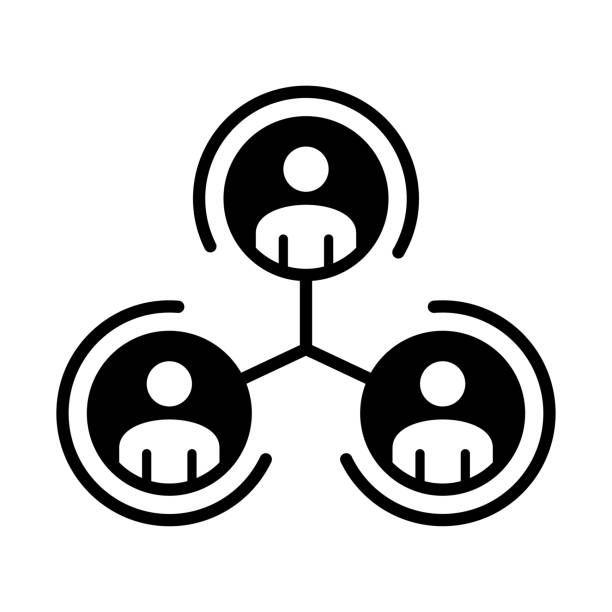
        
        <h2>10.VENTANA DE CONTEXTO EN IA</h2>
        <p>Es la cantidad de información que un modelo de inteligencia artificial puede “recordar” y procesar al mismo tiempo. Funciona como una memoria de corto plazo: todo lo que está dentro de esa ventana puede usarse 
            para generar respuestas, pero lo que queda fuera se olvida..</p>
        
        
        <h2>11.VPN</h2>
        <p>Una VPN (Virtual Private Network o Red Privada Virtual) es una tecnología que crea una conexión segura a través de internet, funcionando como un túnel cifrado entre el usuario y la red. Esto protege los datos
             frente a posibles ataques o espionaje y, además, oculta la dirección IP real del usuario, permitiéndole navegar de forma más privada o simular que está en otra ubicación.</p>
        
        
        <h2>12.INGENIERIA SOCIAL</h2>
        <p>La ingeniería social en el ámbito de sistemas y seguridad informática es una técnica de ataque que se basa en la manipulación psicológica de las personas para obtener información confidencial, acceso a sistemas
             o realizar acciones que comprometan la seguridad. A diferencia de los ataques puramente técnicos (como malware o hackeos directos), la ingeniería social se enfoca en explotar el factor humano, considerado el eslabón más débil en la seguridad..</p>
        
        
        <h2>13 .MARCA PERSONAL</h2>
        <p>La marca personal en sistemas es la imagen profesional y técnica que una persona proyecta en el ámbito tecnológico. Se construye con sus conocimientos, habilidades, experiencia y la manera en que comunica su trabajo. Incluye la reputación digital 
            (portafolio, proyectos, certificaciones, publicaciones) y permite diferenciarse mostrando su valor único en el campo de la informática y la tecnología..</p>
        

        <h2>14.HUELLA DIGITAL</h2>
        <p>La huella digital es el rastro de información que una persona deja al usar internet y dispositivos tecnológicos. Está formada por todos los datos que se generan al navegar, publicar en redes sociales, usar aplicaciones, hacer compras 
            en línea o simplemente al interactuar en plataformas digitales.</p>
        
        
        <h2>15.PNL</h2>
        <p>La PNL puede entenderse de dos formas: en psicología y comunicación, es la Programación Neurolingüística, un enfoque que estudia cómo el lenguaje y los pensamientos influyen en la conducta, y se usa para mejorar la comunicación y el desarrollo personal. 
            En sistemas e inteligencia artificial, es el Procesamiento de Lenguaje Natural, una rama de la IA que permite a las computadoras comprender, interpretar y generar lenguaje humano, como en los chatbots o traductores automáticos.</p>
        

        <h2>16.SINTAXIS</h2>
        <p>La sintaxis en sistemas y programación es el conjunto de reglas que determinan cómo deben escribirse las instrucciones en un lenguaje de programación para que la computadora pueda entenderlas y ejecutarlas. Igual que en un idioma, donde la gramática 
            organiza las palabras en oraciones correctas, la sintaxis organiza símbolos, comandos y estructuras en el código.</p>
        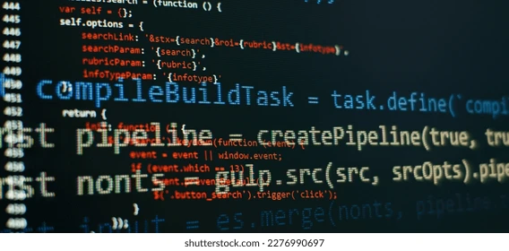

        <h2>17METADATO.</h2>
        <p>Un metadato es información que describe y aporta contexto a otros datos sin modificar su contenido. Sirve para identificar, organizar y gestionar la información, ya que puede incluir detalles como autor, fecha de creación, formato, ubicación o propósito. 
            Por ejemplo, en una fotografía los metadatos indican la cámara usada, la hora y el lugar en que fue tomada..</p>
        

        <h2>18.INDENTACION</h2>
        <p>La indentación en sistemas y programación es el uso de espacios o tabulaciones al inicio de las líneas de código con el fin de organizar, estructurar y dar claridad al programa. Su propósito principal es mejorar la legibilidad y permitir que tanto el
             programador como otros desarrolladores entiendan fácilmente la lógica y jerarquía de las instrucciones..</p>
        

        <h2>19.IDE</h2>
        <p>Un IDE (Integrated Development Environment o Entorno de Desarrollo Integrado) es una aplicación que reúne en un solo lugar las herramientas necesarias para programar, compilar, depurar y administrar software. Incluye editor de código,
             compilador o intérprete, depurador y gestor de proyectos, lo que facilita el desarrollo y mantenimiento de aplicaciones..</p>
        

        <h2>20.LLM</h2>
        <p>Un LLM (Large Language Model o Modelo de Lenguaje Grande) es un sistema de inteligencia artificial entrenado con grandes cantidades de texto para comprender, 
            procesar y generar lenguaje humano. Utiliza redes neuronales profundas, especialmente transformadores, y se aplica en tareas como responder preguntas, redactar, traducir, resumir información o crear asistentes virtuales..</p>
        

        <h2>21.GUI</h2>
        <p>Una GUI (Graphical User Interface o Interfaz Gráfica de Usuario) es la parte visual de un sistema que permite al usuario interactuar con el software mediante elementos gráficos como ventanas, botones, menús e iconos, 
            facilitando el uso y la comprensión sin necesidad de usar comandos de texto.</p>
        

        <h2>22.SHADOW</h2>
        <p>En sistemas, Shadow se refiere a procesos, copias o prácticas que funcionan en segundo plano o de manera paralela al sistema principal. Puede usarse para describir el archivo shadow en Linux/Unix que guarda contraseñas cifradas, 
            el concepto de Shadow IT que son tecnologías usadas sin autorización en una organización, o procesos duplicados que sirven para pruebas, respaldo o seguridad..</p>
        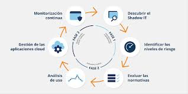

        <h2>23.COMPILAR</h2>
        <p>En sistemas, compilar es el proceso mediante el cual un programa llamado compilador traduce el código fuente escrito en un lenguaje de programación de alto nivel (como C++, Java o C#) a un lenguaje de máquina o a un 
            formato intermedio que el computador pueda entender y ejecutar. Gracias a la compilación, el código que escriben los programadores se convierte en instrucciones que el hardware puede procesar directamente.
            En resumen, compilar transforma el código legible para humanos en un programa ejecutable por la computadora..</p>
        

        <h2>24.Mockup</h2>
        <p>En sistemas, un mockup es una representación visual estática de una interfaz o aplicación, utilizada para mostrar cómo se verá un sistema antes de ser programado. Sirve como una maqueta o prototipo gráfico que permite 
            visualizar la distribución de elementos, colores, tipografías y botones, pero sin incluir aún funcionalidades interactivas ni lógica de programación.</p>
        

        <h2>25.SCRIPT</h2>
        <p>En sistemas e informática, un script es un conjunto de instrucciones escritas en un lenguaje de programación o de automatización que se ejecutan de manera secuencial para realizar tareas específicas. A diferencia de los programas compilados, 
            los scripts suelen ser interpretados directamente por un motor o intérprete (como Python, JavaScript, Bash o PowerShell).. </p>
        

        <h2>26.HEURISTICA</h2>
        <p>En sistemas, una heurística es un método o técnica práctica usada para resolver problemas, aprender o tomar decisiones de manera más rápida y eficiente, aunque no siempre garantice la solución óptima. Se utiliza cuando un problema es 
            demasiado complejo para abordarlo con métodos exactos o cuando se necesita una respuesta en poco tiempo..</p>
        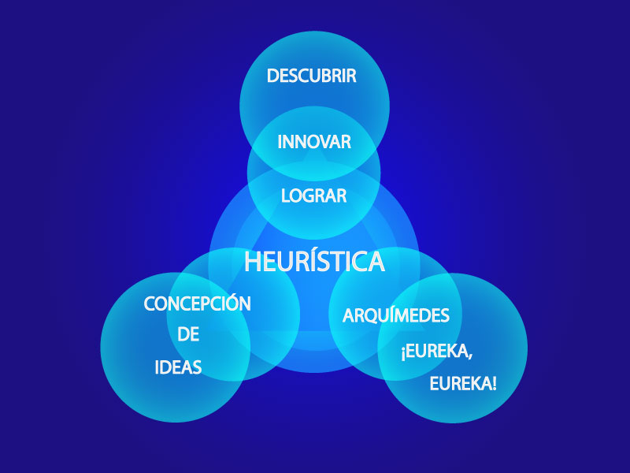

        <h2>27.AVG</h2>
        <p>En Ingeniería de Sistemas, AVG puede referirse a un antivirus o al término promedio (Average). Como antivirus, AVG protege computadoras y dispositivos contra virus, malware y otras amenazas, ofreciendo escaneo en tiempo real, protección web y mantenimiento del sistema, 
            garantizando la seguridad de la información. En análisis de datos, AVG significa promedio y se usa para calcular el valor medio de un conjunto de datos, útil para medir rendimiento, tiempos de respuesta o errores en sistemas. 
            En ambos casos, AVG es importante para mantener la seguridad y eficiencia en los sistemas.</p>
        

        <h2>28.STACK OVERFLOW</h2>
        <p>En Ingeniería de Sistemas, Stack Overflow puede referirse a dos cosas: como error de programación y como plataforma de desarrolladores. La pila (stack) es una estructura de datos que almacena información temporal, 
       como variables locales y llamadas a funciones. Un stack overflow ocurre cuando se supera su capacidad, generalmente por recursión infinita o uso excesivo de memoria, lo que puede provocar que el programa falle o se cierre inesperadamente.
        Por otro lado, Stack Overflow también es un sitio web donde programadores pueden hacer preguntas, compartir soluciones y aprender buenas prácticas, siendo un recurso esencial para resolver problemas de código y mejorar habilidades en diferentes lenguajes y tecnologías. 
        En resumen, Stack Overflow es tanto un concepto crítico en programación como una herramienta de aprendizaje y colaboración para desarrolladores..</p>
        

        <h2>29.VISUAL STUDIO</h2>
        <p>Visual Studio es un entorno de desarrollo integrado (IDE) creado por Microsoft que permite a los programadores crear, depurar y ejecutar aplicaciones en diferentes lenguajes de programación, como C#, C++, Python, JavaScript, entre otros.
            Es una herramienta muy completa que incluye: editor de código, compilador, depurador, administración de proyectos y herramientas de diseño visual, lo que facilita el desarrollo de software tanto para aplicaciones de escritorio, web y móviles.
            En pocas palabras, Visual Studio ayuda a los desarrolladores a escribir código de manera más rápida y organizada, detectar errores y gestionar proyectos de software de forma eficiente.</p>
        

        <h2>30.ENDPOINT</h2>
        <p>En Ingeniería de Sistemas, un endpoint es un punto de comunicación dentro de una red o aplicación donde se puede acceder a un servicio, recurso o dato específico. Generalmente se usa en APIs (Interfaces de Programación de Aplicaciones) para indicar la URL o
            dirección a la que se envían solicitudes para obtener información o ejecutar una acción..</p>
        

        <h2>31.FASTAPI</h2>
        <p>FastAPI es un framework web de Python de alto rendimiento utilizado para construir APIs (Interfaces de Programación de Aplicaciones) de manera rápida 
            y eficiente. Se caracteriza por su velocidad, gracias a bibliotecas como Starlette y Pydantic, y por su uso de las sugerencias de tipo de Python para 
            la validación automática de datos. Entre sus ventajas destacan la documentación interactiva automática (basada en OpenAPI), la reducción de errores en 
            el código y un desarrollo rápido y sencillo.</p>
        

        <h2>32.PARTICION DE DISCO DURO</h2>
        <p>En Ingeniería de Sistemas, la partición de un disco duro es el proceso de dividir físicamente un disco en secciones independientes, llamadas particiones, 
            que funcionan como unidades de almacenamiento separadas dentro del mismo disco. Cada partición puede tener su sistema de archivos propio y se puede usar para diferentes propósitos, como instalar un sistema operativo, guardar datos personales o realizar copias de seguridad.</p>
        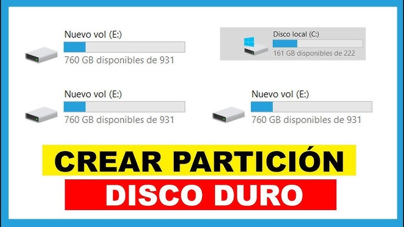

        <h2>33.PARAMETROS</h2>
        <p> En Ingeniería de Sistemas, los parámetros son valores que se envían a una función, 
            procedimiento o programa para que este realice una tarea específica. Permiten que el mismo código pueda trabajar con diferentes datos sin necesidad de modificar su estructura interna.
            Por ejemplo, en una función que suma dos números, los números que se le pasan son parámetros; la función los usa para realizar la operación y devolver el resultado..</p>
        

        <h2>34.Sistema</h2>
        <p>Conjunto de elementos interrelacionados que trabajan coordinadamente para cumplir un objetivo específico, 
            donde cada componente influye en el funcionamiento de los demás.</p>
        

        <h2>35.Subsistema</h2>
        <p>Parte de un sistema más grande que funciona como un sistema independiente dentro del conjunto, 
            cumpliendo tareas específicas que contribuyen al objetivo general.</p>
        

        <h2>36.Entrada</h2>
        <p>Información, datos o recursos que se introducen en un sistema para ser procesados, 
            permitiendo que el sistema genere resultados útiles.</p>
        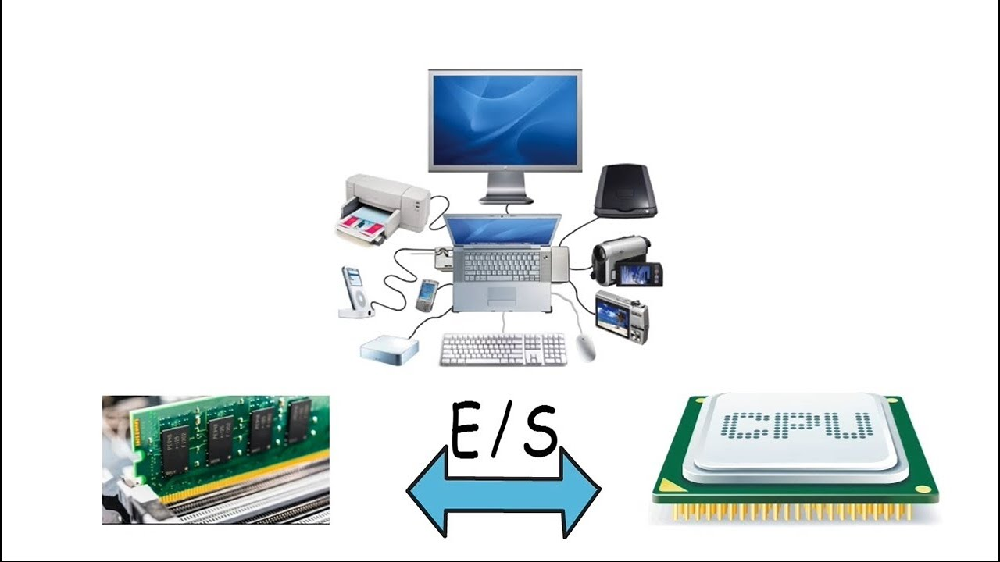

        <h2>37.Proceso</h2>
        <p>Conjunto de operaciones o transformaciones que toma las entradas y las convierte en salidas, siguiendo reglas
             y procedimientos definidos.</p>
        

        <h2>38.Salida</h2>
        <p>Resultado generado por un sistema tras el procesamiento de la información, 
            que puede ser información, un producto o un servicio.</p>
        

        <h2>39.Retroalimentación</h2>
        <p>Información que retorna al sistema sobre sus resultados o desempeño, utilizada para ajustar
             y mejorar su funcionamiento.</p>
        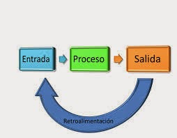

        <h2>40.Control:</h2>
        <p>Mecanismo que garantiza que el sistema opere dentro de parámetros deseados, corrigiendo desviaciones
             y asegurando el cumplimiento de objetivos.</p>
        

        <h2>41.Señal</h2>
        <p>Representación física o eléctrica de información que permite la transmisión de datos dentro de un sistema 
            o entre sistemas.</p>
        

        <h2>42.CPU</h2>
        <p>Componente principal del computador que ejecuta instrucciones de programas, 
            controla el funcionamiento de otros componentes y realiza operaciones aritméticas y lógicas.</p>
        

        <h2>43.IP (Protocolo de Internet)</h2>
        <p>Dirección única que identifica a cada dispositivo en una red y permite la comunicación entre ellos.</p>
        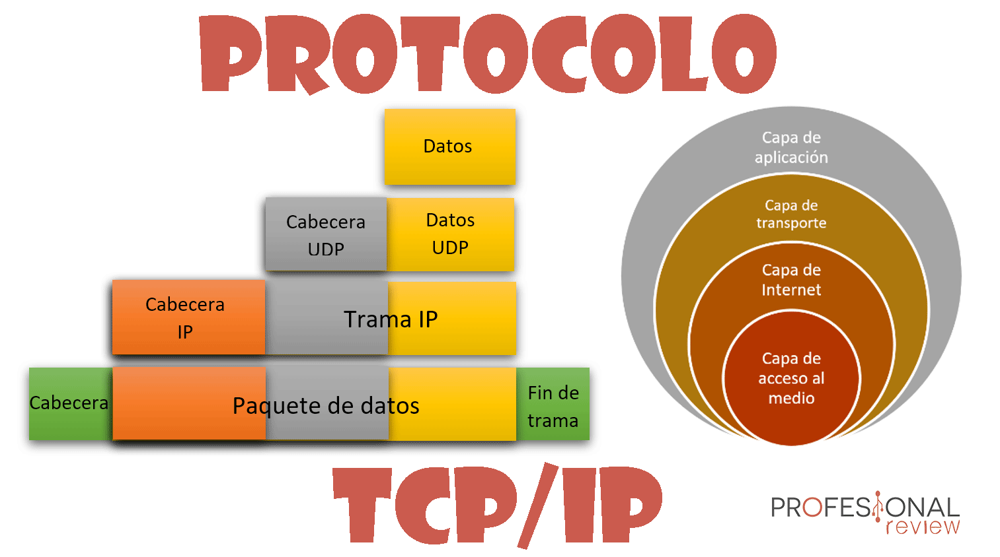

        <h2>44.GPU (Unidad de Procesamiento Gráfico)</h2>
        <p>Procesador especializado en realizar cálculos gráficos y paralelos de alta velocidad, optimizando tareas de renderizado y procesamiento de datos.
        RAM (Memoria de Acceso Aleatorio): Memoria temporal de alta velocidad que almacena datos e instrucciones que el procesador necesita mientras se ejecutan programas,
        perdiéndose al apagar el sistema.</p>
        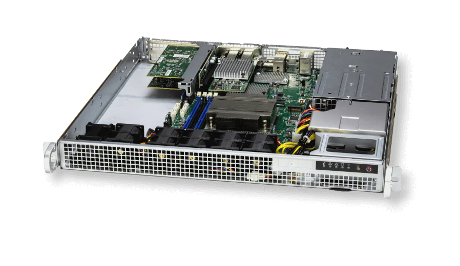

        <h2>45.ROM (Memoria de Solo Lectura)</h2>
        <p>Memoria permanente que almacena instrucciones básicas del sistema que no se pueden modificar fácilmente, 
            como el arranque del computador.</p>
        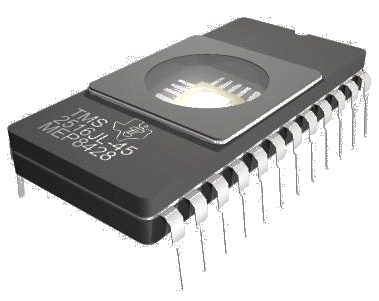

        <h2>46.SSD (Unidad de Estado Sólido):</h2>
        <p>Dispositivo de almacenamiento que utiliza memoria flash para guardar datos de forma rápida, confiable y sin partes móviles, 
            mejorando el rendimiento del sistema.</p>
        

        <h2>47.Motherboard (Placa base)</h2>
        <p>Placa principal del computador donde se conectan todos los componentes internos y periféricos, 
            permitiendo la comunicación entre ellos.</p>
        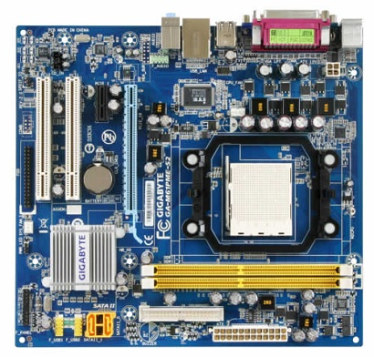

        <h2>48.Fuente de poder</h2>
        <p>Componente que convierte la energía eléctrica de la red en voltajes adecuados para que funcionen los dispositivos 
            internos del computador.</p>
        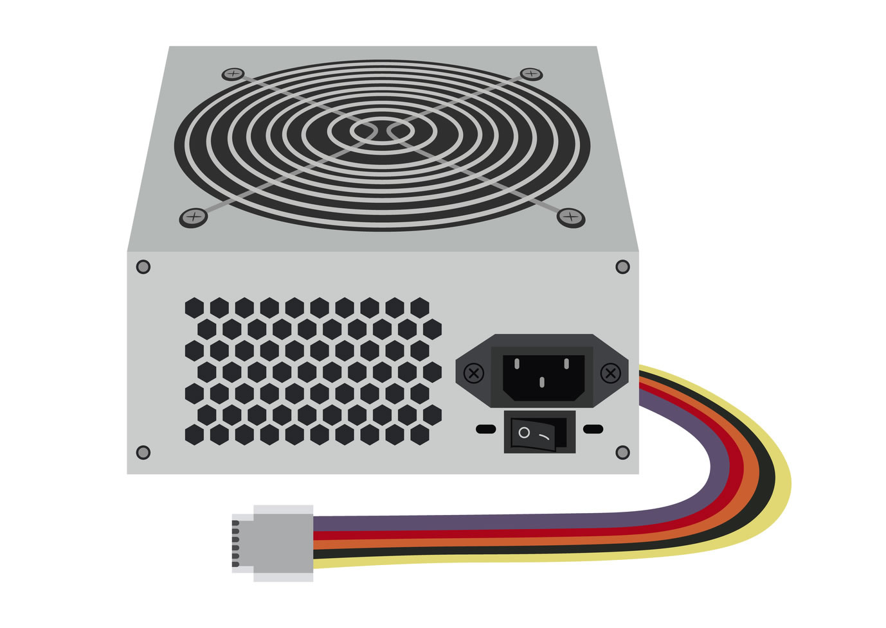

        <h2>49.Tarjeta de red</h2>
        <p>Componente que permite la conexión del computador a una red local o a Internet, 
            gestionando el envío y recepción de datos.</p>
        

        <h2>50.Perifericos</h2>
        <p>Dispositivos externos que permiten interactuar con el computador o ampliar sus capacidades,
             como impresoras, teclados, mouse o cámaras.</p>
        

        <h2>51.Software de sistema</h2>
        <p>Conjunto de programas que gestionan los recursos del hardware y permiten la ejecución de aplicaciones,
             garantizando que el computador funcione correctamente.</p>
        

        <h2>52.Software de aplicación</h2>
        <p>Programas diseñados para realizar tareas específicas para los usuarios, 
            como procesadores de texto, hojas de cálculo o programas de diseño.</p>
        

        <h2>53.Sistema operativo</h2>
        <p>Software principal que administra recursos del hardware, controla dispositivos y proporciona servicios a otros programas 
            y usuarios.</p>
        

        <h2>54.Controladores (drivers)</h2>
        <p>Programas que permiten al sistema operativo interactuar correctamente con los componentes de hardware, garantizando su correcto 
            funcionamiento.</p>
        

        <h2>55.Utilitarios</h2>
        <p>Programas que realizan tareas de mantenimiento, diagnóstico, optimización o gestión de archivos dentro del sistema.</p>
        

        <h2>56.Middleware</h2>
        <p>Software intermedio que facilita la comunicación y gestión de datos entre aplicaciones y sistemas operativos, especialmente en entornos 
            distribuidos</p>
        

        <h2>57.Firmware</h2>
        <p>Software embebido en dispositivos de hardware que controla su funcionamiento básico y 
            asegura que opere correctamente.</p>
        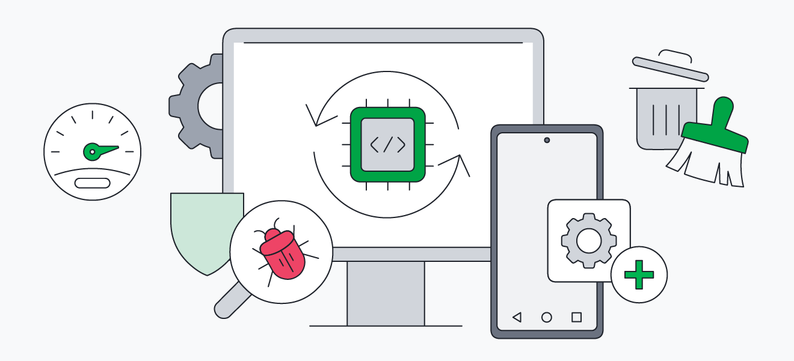3

        <h2>58.Aplicaciones ofimáticas</h2>
        <p>Programas diseñados para facilitar tareas administrativas y de oficina, como procesadores de texto,
             hojas de cálculo y presentaciones.</p>
        

        <h2>59.Navegadores web</h2>
        <p>Programas que permiten acceder, visualizar e interactuar con información en Internet, interpretando páginas web y 
            ejecutando contenido dinámico</p>
        

        <h2>60.Antivirus</h2>
        <p>Software especializado en detectar, prevenir y eliminar programas maliciosos que puedan afectar el rendimiento o la 
            seguridad del sistema.</p>
        

        <h2>61.Algoritmo</h2>
        <p>Conjunto de pasos ordenados y finitos que permiten resolver un problema específico o realizar 
            una tarea dentro de un programa.</p>
        

        <h2>62.Función</h2>
        <p>Bloque de código que realiza una operación específica y puede devolver un resultado, facilitando la 
            reutilización de código.</p>
        

        <h2>63.Procedimiento</h2>
        <p>Bloque de instrucciones que realiza una tarea definida, pero que no necesariamente devuelve un valor al
             programa que lo llama.</p>
        

        <h2>64.Variable</h2>
        <p>Espacio en la memoria que almacena datos que pueden cambiar durante la ejecución de un programa, identificados
             por un nombre.</p>
        

        <h2>65.Constante</h2>
        <p>Valor fijo asignado a una variable que no cambia durante la ejecución del programa, usado para mantener 
            datos inalterables.</p>
        

        <h2>66.UDP (Protocolo de Datagramas de Usuario)</h2>
        <p>Protocolo que permite enviar datos rápidamente sin garantizar su entrega, usado en transmisiones en tiempo real.</p>
        

        <h2>67.Router (Enrutador)</h2>
        <p>Dispositivo que dirige el tráfico de datos entre redes diferentes, asegurando que los paquetes lleguen a su destino correcto.</p>
        

        <h2>68.Switch (Conmutador)</h2>
        <p>Dispositivo que conecta múltiples dispositivos dentro de una misma red, gestionando el flujo de datos de manera eficiente y
             evitando colisiones.</p>
        

        <h2>69.SQL (Structured Query Language)</h2>
        <p>Lenguaje estándar utilizado para crear, modificar, consultar y administrar bases de datos relacionales.</p>
        

        <h2>70.NoSQL</h2>
        <p>Tipo de base de datos que almacena información de forma no estructurada o semiestructurada, ideal para grandes volúmenes de datos y 
            alta escalabilidad.</p>
        

        <h2>71.Sistema de archivos</h2>
        <p>Estructura que organiza y administra cómo se almacenan y recuperan los datos en un dispositivo de
            almacenamiento</p>
        

        <h2>72.Planificación de procesos</h2>
        <p>Mecanismo que determina el orden y tiempo en que los procesos se ejecutan en el CPU.</p>
        

        <h2>73.Kernel</h2>
        <p>Núcleo del sistema operativo que gestiona recursos del hardware y permite la comunicación entre software y 
            hardware.</p>
        

        <h2>74.Windows</h2>
        <p>Sistema operativo desarrollado por Microsoft, orientado al uso general en computadores personales y 
            empresariales.</p>
        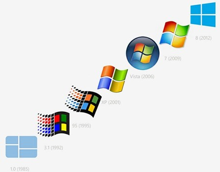

        <h2>75.Linux:</h2>
        <p>Sistema operativo de código abierto, conocido por su estabilidad, seguridad y uso en servidores y 
            entornos de desarrollo.</p>
        

        <h2>76.Algoritmo genético</h2>
        <p>Técnica de optimización que utiliza principios de selección natural y evolución para encontrar 
            soluciones a problemas complejos.</p>
        

        <h2>77.Deep Learning</h2>
        <p>Subcampo del aprendizaje automático que utiliza redes neuronales profundas para modelar patrones complejos en grandes
             volúmenes de datos.</p>
        

        <h2>78.Machine Learning</h2>
        <p>Rama de la inteligencia artificial que permite a los sistemas aprender automáticamente a partir de datos y 
            mejorar su desempeño con el tiempo.</p>
        


        <h2>79.Servidor web</h2>
        <p>Computador o programa que almacena, procesa y entrega páginas web a los usuarios que las solicitan a través de 
            Internet.</p>
        

        <h2>80.Consulta (Query)</h2>
        <p>Instrucción o conjunto de instrucciones que permiten recuperar, filtrar o modificar información almacenada en 
            una base de datos.</p>
        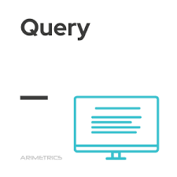

        <h2>81.Arquitectura de software</h2>
        <p>Estructura general de un sistema que define cómo se organizan sus componentes y cómo interactúan entre sí.</p>
        

        <h2>82.Componente</h2>
        <p>Parte modular de un software que realiza una función específica y puede integrarse con otros
             componentes.</p>
        

        <h2>83.Módulo</h2>
        <p>Unidad de software que agrupa funciones relacionadas, facilitando la organización y mantenimiento del 
            código.</p>
        

        <h2>84.Patrón de diseño</h2>
        <p>Solución general reutilizable para problemas comunes de diseño de software.
        Cliente-servidor: Modelo donde un cliente solicita servicios y un servidor los proporciona a través de una red.</p>
        

        <h2>85.HTML</h2>
        <p>Lenguaje de marcado que estructura y presenta contenido en páginas web.</p>
        

        <h2>86.CSS</h2>
        <p>Lenguaje que define la apariencia visual de páginas web, como colores y fuentes.</p>
        

        <h2>87.JavaScript</h2>
        <p>Lenguaje de programación que agrega interactividad y dinamismo a las páginas web.</p>
        

        <h2>88.Inteligencia Artificial (IA)</h2>
        <p>Rama de la informática que busca crear sistemas capaces de realizar
             tareas que requieren inteligencia humana.</p>
        

        <h2>89.Aprendizaje supervisado</h2>
        <p>Técnica de machine learning donde el sistema aprende a partir de datos etiquetados.</p>
        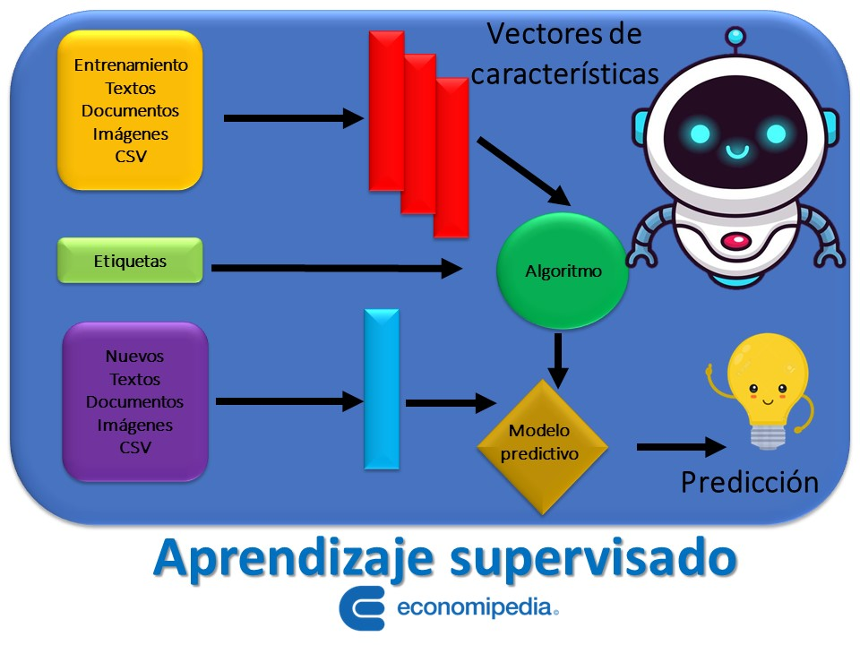

        <h2>90.Big Data</h2>
        <p>Conjunto de datos muy grandes o complejos que requieren herramientas especiales para su
             análisis.</p>
        

        <h2>91.ETL (Extract, Transform, Load)</h2>
        <p>Proceso de extraer datos, transformarlos y cargarlos en un sistema de almacenamiento.</p>
        

        <h2>92.DevOps</h2>
        <p>Conjunto de prácticas que integran el desarrollo de software (Dev) y las operaciones de TI (Ops) para mejorar la entrega continua de aplicaciones. 
            Su objetivo es reducir los ciclos de desarrollo, aumentar la calidad del software y permitir una colaboración fluida entre equipos mediante automatización y 
            monitoreo constante.</p>
        

        <h2>93.Pipeline de desarrollo</h2>
        <p>Conjunto de procesos automatizados que permiten construir, probar y desplegar software de manera eficiente, integrando herramientas de control de versiones, 
            pruebas automáticas y despliegue en servidores.</p>
        

        <h2>94.Versionamiento de software</h2>
        <p>Sistema que controla y registra los cambios realizados en el código, permitiendo a los desarrolladores mantener un historial, revertir modificaciones y gestionar 
            colaboraciones de manera organizada.</p>
        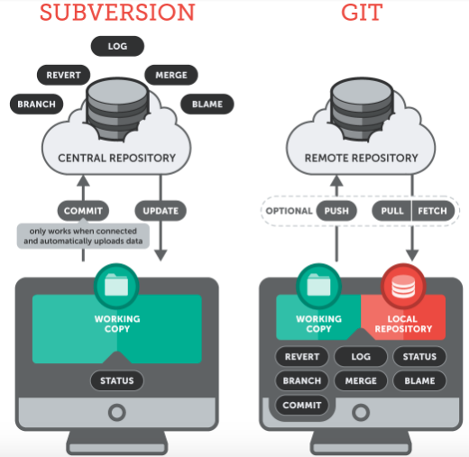

        <h2>95.IaaS (Infrastructure as a Service)</h2>
        <p>Servicio en la nube que proporciona recursos de infraestructura como servidores, almacenamiento y redes de manera flexible y escalable, permitiendo a las empresas concentrarse en sus aplicaciones 
            sin preocuparse por el mantenimiento del hardware físico.</p>
        

        <h2>96PaaS (Platform as a Service).</h2>
        <p>Plataforma en la nube que ofrece entornos de desarrollo completos, incluyendo bases de datos, servidores y herramientas de programación, facilitando la creación de aplicaciones sin necesidad de gestionar 
            la infraestructura subyacente.</p>
        

        <h2>97.Private Cloud (Nube privada)</h2>
        <p>Entorno de computación en la nube dedicado a una sola organización, ofreciendo control total sobre los recursos, seguridad y cumplimiento de normativas.</p>
        

        <h2>98.Public Cloud (Nube pública)</h2>
        <p>Servicios de nube ofrecidos por proveedores externos y accesibles para múltiples usuarios, optimizando costos mediante la compartición de recursos.</p>
        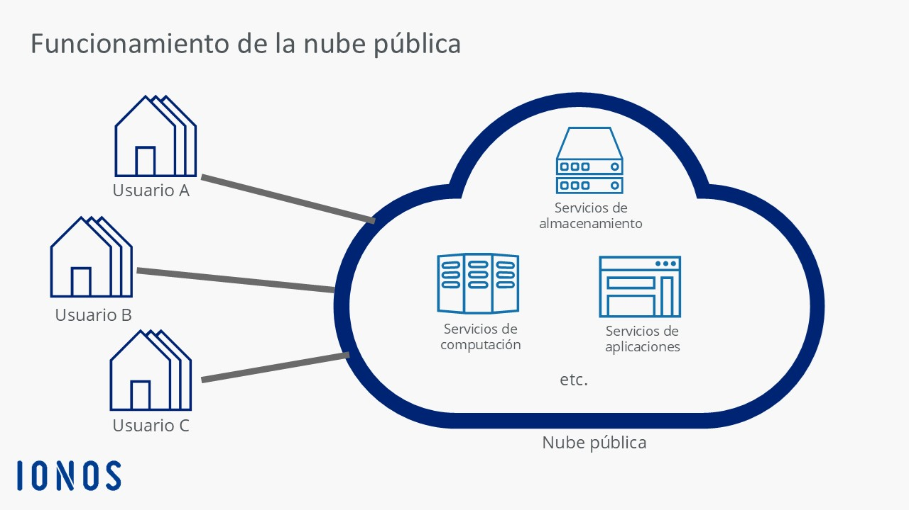

        <h2>99.Edge Computing</h2>
        <p>Procesamiento de datos cerca de donde se generan (por ejemplo, sensores IoT), reduciendo latencia, ancho de banda y mejorando la eficiencia de los sistemas distribuidos.</p>
        

        <h2>100.Escalabilidad horizontal y vertical</h2>
        <p>Capacidad de un sistema de aumentar recursos añadiendo más servidores (horizontal) o mejorando los recursos de uno existente (vertical) según la demanda de los usuarios o 
            aplicaciones.</p>
        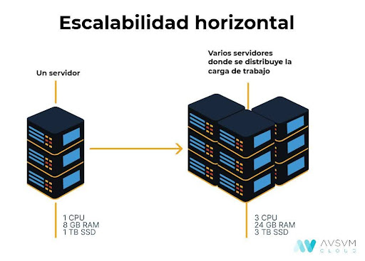

        <h2>101.mouse</h2>
        <p>Dispositivo señalador que traduce el movimiento de la mano en la pantalla a través de un cursor, facilitando la interacción con interfaces gráficas.</p>
        


        
        <h2>102.Prompt</h2>
        <p>Texto o instrucción que se ingresa en un sistema para que ejecute una acción. En IA, es la entrada escrita que guía a los modelos de lenguaje para generar
             resultados.</p>
        


        
        <h2>103.Text box</h2>
        <p>Campo de texto dentro de una interfaz gráfica en el que el usuario puede escribir información.</p>
        

        
        <h2>104.ComboBox</h2>
        <p>Elemento de interfaz que combina un cuadro de texto con una lista desplegable de opciones seleccionables.</p>
        

        
        <h2>105.Ventana de contexto</h2>
        <p>Menú emergente que aparece al hacer clic derecho, mostrando opciones relacionadas con el objeto seleccionado.</p>
        


        <h2>106.Visual Studio</h2>
        <p>Menú emergente que aparece al hacer clic derecho, mostrando opciones relacionadas con el objeto seleccionado.</p>
        

        <h2>107.ISP (Internet Service Provider)</h2>
        <p>Proveedor de servicios de internet encargado de ofrecer conexión a la red a hogares y empresas.</p>
        


        <h2>108.Bootstrap</h2>
        <p>Framework de desarrollo web que proporciona componentes prediseñados y un sistema de cuadrícula para crear sitios responsivos
            rápidamente.</p>
        

        <h2>109.Python</h2>
        <p>Lenguaje de programación interpretado, sencillo y versátil, ampliamente utilizado en ciencia de datos, inteligencia artificial y 
            desarrollo web.</p>
        

        <h2>110. PHP</h2>
        <p>Lenguaje de programación del lado del servidor diseñado para el desarrollo web, muy utilizado en sitios dinámicos y gestores de 
            contenido como WordPress.</p>
        

        <h2>111.V Red WAN (Wide Area Network)</h2>
        <p>Red de gran extensión geográfica que conecta múltiples redes locales, como internet.</p>
        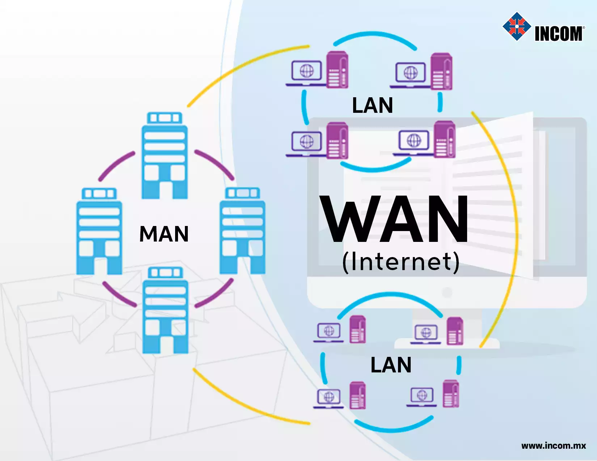

        <h2>112.Firewall</h2>
        <p>Sistema de seguridad que controla y filtra el tráfico de red, protegiendo contra accesos no autorizados.</p>
        
        
        <h2>113.Dirección IP</h2>
        <p>Identificador único que se asigna a cada dispositivo conectado a una red. Puede ser estática o dinámica.</p>
        


        <h2>114.DNS (Domain Name System)</h2>
        <p>Sistema que traduce nombres de dominio legibles por humanos (ej. www.google.com) en direcciones IP.</p>
        


        <h2>115.HTTPS (HyperText Transfer Protocol Secure)</h2>
        <p>Versión segura de HTTP que cifra la comunicación mediante SSL/TLS.</p>
        


        <h2>116.Hosting</h2>
        <p>Servicio que permite almacenar y publicar un sitio web en internet.</p>
        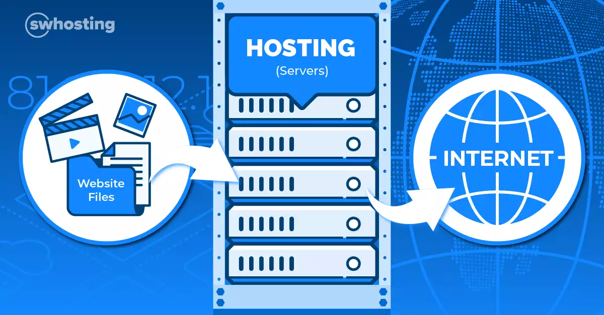


         <h2>117.URL (Uniform Resource Locator)</h2>
        <p>Dirección que indica la ubicación de un recurso en internet.</p>
        


         <h2>119.Router</h2>
        <p>Dispositivo que dirige el tráfico de datos entre redes y permite la conexión a internet.</p>
        

         <h2>120.Cliente</h2>
        <p>Es quien solicita servicios o información a un servidor dentro de una red.</p>
        

         <h2>121.E-commerce</h2>
        <p>Comercio electrónico que permite la compra y venta de productos o servicios a través de internet.</p>
        

         <h2>122.SEO (Search Engine Optimization)</h2>
        <p>Conjunto de técnicas para optimizar un sitio web y mejorar su visibilidad en buscadores como Google.</p>
        

         <h2>123.Frontend</h2>
        <p>Parte de un sistema o aplicación que interactúa directamente con el usuario, generalmente desarrollada con HTML, 
            CSS y JavaScript.</p>
        

         <h2>124.Teclado</h2>
        <p>Periférico de entrada que permite introducir información en el computador mediante teclas que representan letras, números,
             símbolos y funciones especiales.</p>
        

         <h2>125.TIC (Tecnologías de la Información y la Comunicación)</h2>
        <p>Conjunto de recursos, herramientas y sistemas que permiten gestionar, procesar y transmitir información
             de manera digital.</p>
        


         <h2>126.Hardware</h2>
        <p>Parte física de un sistema informático, incluye dispositivos como procesadores, discos, memoria y 
            periféricos.</p>
        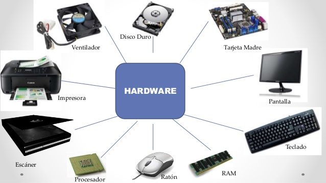

        <h2>127.Transformación digital:</h2>
        <p>Proceso de integración de tecnologías digitales en todas las áreas de una 
            organización..</p>
        

        <h2>128.IoT (Internet of Things)</h2>
        <p>Red de dispositivos interconectados que recopilan y comparten datos en tiempo 
            real.</p>
        

         <h2>129.Ingeniería de software:</h2>
        <p>Disciplina que aplica principios científicos y técnicos para diseñar, desarrollar y
             mantener software de calidad.</p>
        

         <h2>130.Lenguaje de programación</h2>
        <p>Sistema formal de símbolos y reglas usado para escribir instrucciones que ejecuta
             una computadora.</p>
        

         <h2>131.Paradigma de programación</h2>
        <p>Estilo o enfoque de resolución de problemas mediante un lenguaje de programación 
            (ej. orientado a objetos, funcional).</p>
        

         <h2>132.Intérprete</h2>
        <p>Software que ejecuta directamente las instrucciones escritas en un lenguaje de 
            programación sin compilarlas.</p>
        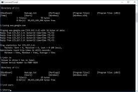

         <h2>133.Código fuente</h2>
        <p>Conjunto de instrucciones escritas en un lenguaje de
             programación.</p>
        

         <h2>134.Código binario:</h2>
        <p>Representación de información en sistema numérico 
            binario (0 y 1).</p>
        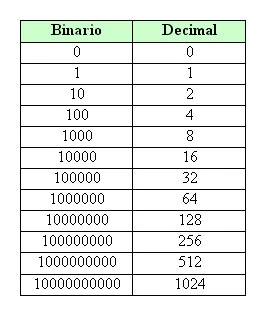

         <h2>135.Framework</h2>
        <p>Conjunto de librerías y herramientas que facilitan el 
            desarrollo de aplicaciones.</p>
        

         <h2>136.Pruebas de software:</h2>
        <p>Conjunto de actividades para verificar que un sistema cumple con los requisitos y funciona 
            correctamente.</p>
        

         <h2>137.Ciclo de vida del software</h2>
        <p>Conjunto de fases que abarcan desde la concepción hasta el retiro de un 
            sistema.</p>
        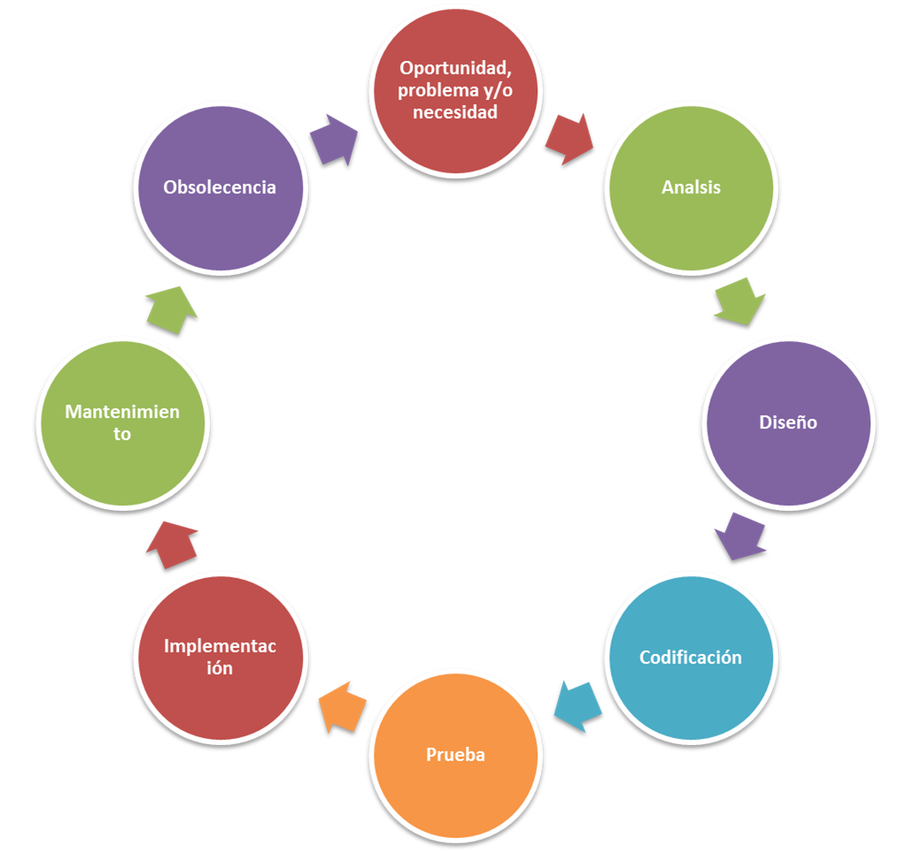

         <h2>138.SCRUM</h2>
        <p>Metodología ágil que organiza proyectos en sprints cortos y 
            colaborativos.</p>
        

         <h2>139.Kanban</h2>
        <p>Método visual para gestionar flujos de trabajo y mejorar productividad.</p>
        

        <h2>140.XP (Extreme Programming)</h2>
        <p>Metodología ágil que enfatiza programación en pareja, simplicidad y 
            entregas rápidas</p>
        

        <h2>141.Metodología ágil</h2>
        <p>Conjunto de enfoques de desarrollo que priorizan flexibilidad, colaboración y
            entrega continua.</p>
        

        <h2>142.Waterfall</h2>
        <p>Modelo clásico de desarrollo en cascada, donde las fases
             son secuenciales.</p>
        

        <h2>142.Prototipo</h2>
        <p>Representación inicial o incompleta de un sistema para validar ideas.</p>
        

        <h2>143.UX (User Experience)</h2>
        <p>Experiencia completa de un usuario al interactuar con un sistema.</p>
        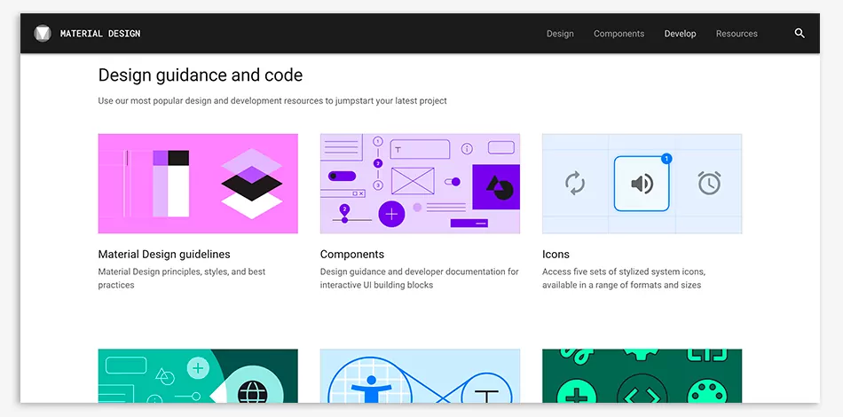

        <h2>144.APIs (Application Programming Interface)</h2>
        <p>Conjunto de reglas que permite la comunicación entre aplicaciones.</p>
        

        <h2>145.REST</h2>
        <p>Estilo arquitectónico para diseñar servicios web que usan HTTP de manera sencilla.</p>
        

        <h2>146.SOAP</h2>
        <p>Protocolo para intercambio estructurado de información en servicios web.</p>
        

        <h2>147.Cloud Computing</h2>
        <p>Uso de servicios informáticos (almacenamiento, cómputo) a través de internet.</p>
        

        <h2>148.IaaS</h2>
        <p>Infraestructura como servicio, provee recursos de hardware virtualizados en la nube.</p>
        

        <h2>149.SaaS</h2>
        <p>Software como servicio, aplicaciones accesibles vía internet sin instalación local.</p>
        

        <h2>150.CI/CD</h2>
        <p>Integración continua y entrega continua de software automatizado.</p>
        

        <h2>151.Git</h2>
        <p>Sistema de control de versiones distribuido para gestionar código.</p>
        

         <h2>152.GitHub </h2>
        <p>Plataforma colaborativa para alojar repositorios y trabajar en proyectos.</p>
        

          <h2>153.Merge</h2>
        <p>Acción de combinar cambios de una rama con otra.</p>
        

          <h2>154.Bitbucket</h2>
        <p>Servicio para repositorios de Git con soporte empresarial.
        Branch: Rama en un repositorio donde se desarrolla código de forma 
        paralela.</p>
        

          <h2>155.Constante</h2>
        <p>Dato que permanece fijo durante la ejecución de un programa</p>
        

          <h2>156.Tipo de dato</h2>
        <p>Clasificación que define la naturaleza de un valor (entero, cadena, booleano, etc.).</p>
        

          <h2>157.Array</h2>
        <p>Estructura que almacena múltiples elementos del mismo tipo en posiciones consecutivas.</p>
        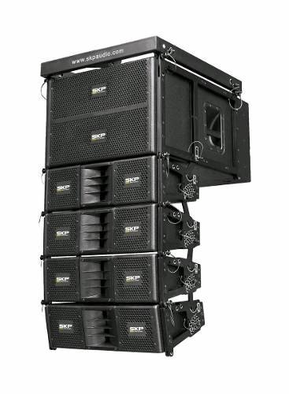

          <h2>158.Lista</h2>
        <p>Colección ordenada de elementos que pueden ser de diferentes tipos.</p>
        

          <h2>159.Pila (Stack)</h2>
        <p>Estructura LIFO (último en entrar, primero en salir)</p>
        

        <h2>160.Text-to-Speech (TTS)</h2>
        <p>Sistema que convierte texto en voz artificial.</p>
        

        <h2>161.OCR (Optical Character Recognition)</h2>
        <p>Tecnología que reconoce texto escrito o impreso en imágenes y lo convierte en datos editables</p>
        

          <h2>162.GPU (Graphics Processing Unit)</h2>
        <p>Unidad de procesamiento gráfico diseñada para renderizar imágenes, también usada en IA y minería de criptomonedas.</p>
        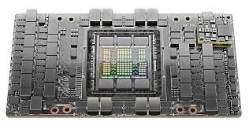

        <h2>163.RAM (Random Access Memory)</h2>
        <p>Memoria volátil que guarda datos temporales mientras se ejecutan programas.</p>
        

        <h2>164.Go (Golang)</h2>
        <p>Lenguaje de programación desarrollado por Google, conocido por su eficiencia.</p>
        

        <h2>165.HDD (Hard Disk Drive)</h2>
        <p>Disco duro mecánico que almacena datos en platos magnéticos.</p>
        

        <h2>166.Fuente de poder (PSU)</h2>
        <p>Dispositivo que suministra electricidad a todos los componentes de un PC</p>
        

        <h2>167.Placa madre (Motherboard)</h2>
        <p>Tarjeta principal que conecta y comunica todos los componentes de una computadora.</p>
        

         <h2>168.Tarjeta gráfica (GPU dedicada)</h2>
        <p>Hardware especializado en procesamiento visual, usado en videojuegos y aplicaciones 3D.</p>
        

         <h2>169. Rust</h2>
        <p>Lenguaje de programación enfocado en seguridad y rendimiento.</p>
        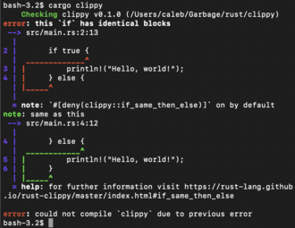

         <h2>170.BIOS (Basic Input/Output System)</h2>
        <p>Firmware que inicia y prueba los componentes de hardware al encender la computadora.</p>
        

        <h2>171.UEFI (Unified Extensible Firmware Interface)</h2>
        <p>Versión moderna de BIOS que añade soporte gráfico y mejor seguridad.</p>
        

         <h2>172.Overclocking</h2>
        <p>Práctica de aumentar la velocidad de un procesador más allá de sus especificaciones.</p>
        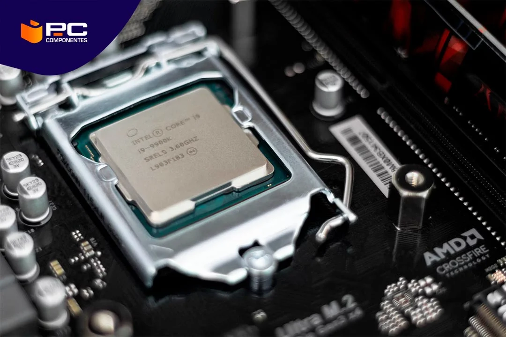

        <h2>173.Benchmarking</h2>
        <p>Prueba de rendimiento de hardware o software para compararlo con otros sistemas.</p>
        

        <h2>174.Hypervisor</h2>
        <p>Software que gestiona máquinas virtuales, como VMware o VirtualBox.</p>
        

        <h2>175.Emulador</h2>
        <p>Programa que permite ejecutar software de otra plataforma, como videojuegos retro o apps móviles.</p>
        

        <h2>176.Docker Compose</h2>
        <p>Herramienta que permite definir y ejecutar aplicaciones con múltiples contenedores en Docker.</p>
        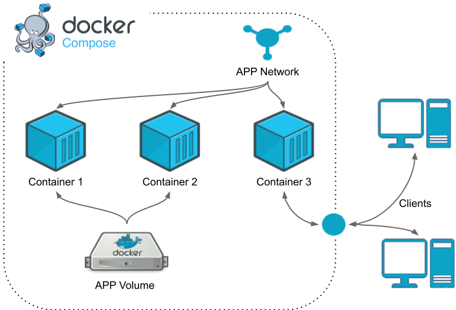

        <h2>177.Pod (Kubernetes)</h2>
        <p>Unidad básica de ejecución en Kubernetes que puede contener uno o varios contenedores.</p>
        

        <h2>178.Cluster (Kubernetes)</h2>
        <p>Conjunto de nodos que ejecutan aplicaciones distribuidas en Kubernetes.</p>
        

        <h2>179.Node (Kubernetes)</h2>
        <p>Máquina (física o virtual) dentro de un cluster que ejecuta aplicaciones en contenedores.</p>
        

        <h2>180. Helm (Kubernetes)</h2>
        <p>Gestor de paquetes para Kubernetes que facilita instalar y actualizar aplicaciones.</p>
        

        <h2>181. Web Scraping</h2>
        <p>Técnica para extraer información de sitios web de forma automatizada mediante scripts o bots.</p>
        

        <h2>182.GraphQL</h2>
        <p>Lenguaje de consulta para APIs que permite al cliente definir exactamente qué datos necesita</p>
        

        <h2>183.JSON</h2>
        <p>Formato ligero de intercambio de datos, basado en texto y fácil de leer para humanos y máquinas.</p>
        

        <h2>184. XML</h2>
        <p>Lenguaje de marcado usado para estructurar y almacenar datos, más verboso que JSON.</p>
        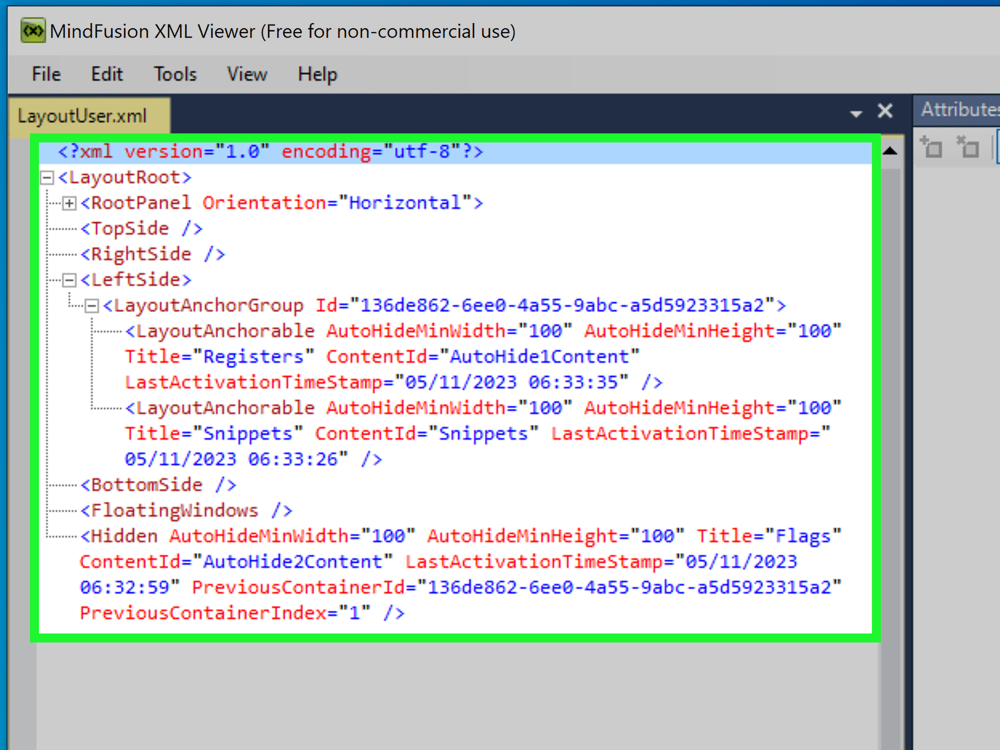

        <h2>185.HTML5</h2>
        <p>Versión más reciente del lenguaje de marcado para la creación de páginas web.</p>
        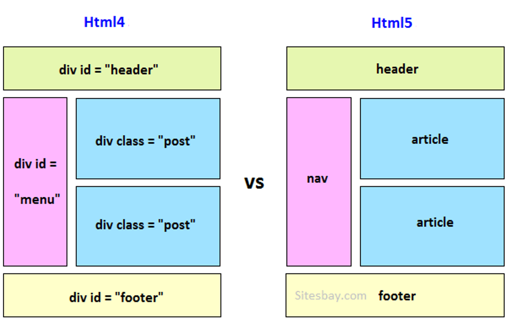

       <h2>186.TypeScript</h2>
        <p>Superset de JavaScript que agrega tipado estático para mejorar el desarrollo de aplicaciones.</p>
        

        <h2>187.Node.js</h2>
        <p>Entorno de ejecución de JavaScript en el servidor basado en el motor V8 de Google Chrome.</p>
        

        <h2>188.Express.js.</h2>
        <p>Framework minimalista para Node.js usado para construir APIs y aplicaciones webFramework minimalista para Node.js
            usado para construir APIs y aplicaciones web</p>
        

        <h2>189.Angular</h2>
        <p>Framework de desarrollo front-end basado en TypeScript mantenido por Google.</p>
        

        <h2>190. React</h2>
        <p>Biblioteca de JavaScript para construir interfaces de usuario, creada por Meta.</p>
        

        <h2>191.Vue.js</h2>
        <p>Framework progresivo de JavaScript para crear interfaces interactivas.</p>
        

        <h2>192.Svelte</h2>
        <p>Framework de JavaScript que compila componentes en código optimizado durante el build.</p>
        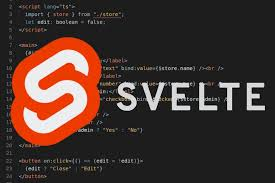

        <h2>193.Django</h2>
        <p>Framework de desarrollo web en Python con enfoque en productividad y seguridad.</p>
        

        <h2>194.Flask</h2>
        <p>Framework ligero de Python para construir aplicaciones web y APIs.</p>
        

        <h2>195.Laravel</h2>
        <p>Framework PHP popular para desarrollo web con sintaxis elegante y modular.</p>
        

        <h2>196.Spring Boot</h2>
        <p>Framework en Java para construir aplicaciones empresariales rápidamente.</p>
        

        <h2>197.Ruby on Rails</h2>
        <p>Ruby on Rails</p>
        

        <h2>198.Kotlin</h2>
        <p>Lenguaje de programación moderno, interoperable con Java y oficial para Android.</p>
        

        <h2>199.Swift</h2>
        <p>Lenguaje de programación creado por Apple para iOS y macOS.</p>
        

        <h2>200. ASP.NET Core</h2>
        <p>Framework open source para aplicaciones web modernas y APIs de Microsoft.</p>
        

        <h2>201.Docker</h2>
        <p>Plataforma de contenedores que permite empaquetar aplicaciones con sus dependencias.</p>
        

        <h2>202.Virtualización</h2>
        <p>Tecnología que permite ejecutar varios sistemas operativos en un mismo hardware físico.</p>
        
      
        <h2>203.ERP (Enterprise Resource Planning)</h2>
        <p>Sistemas que integran procesos empresariales (contabilidad, ventas, inventario).</p>
        

        <h2>204.CRM (Customer Relationship Management)</h2>
        <p>Herramientas para gestionar relaciones con clientes.</p>
        

        <h2>205.5G</h2>
        <p>Quinta generación de redes móviles con mayor velocidad y capacidad.</p>
        

         <h2>206.E-learning</h2>
        <p>Educación apoyada en plataformas digitales.</p>
        
        
          <h2>207.Teletrabajo</h2>
        <p>Trabajo remoto con apoyo de TIC.</p>
        

          <h2>208.	Firma digital</h2>
        <p>Validación criptográfica de documentos electrónicos.</p>
        

          <h2>209.Gobierno electrónico (e-Gov)</h2>
        <p>Uso de TIC para brindar servicios públicos.</p>
        

          <h2>210.Telemedicina </h2>
        <p>Servicios de salud apoyados en tecnologías digitales.</p>
        

          <h2>211.Plataformas colaborativas</h2>
        <p>Herramientas como Slack, Teams o Google Workspace.</p>
        

          <h2>212.Tarjeta de Sonido:</h2>
        <p>Procesa y reproduce señales de audio.</p>
        

          <h2>213.Memoria Caché</h2>
        <p>Almacenamiento rápido que acelera el acceso de la CPU a datos.</p>
        

          <h2>214.Micrófono</h2>
        <p>Convierte sonido en señales eléctricas digitales.</p>
        

          <h2>215.Pantalla Táctil</h2>
        <p>Monitor que permite interacción directa con los dedos.</p>
        

          <h2>216.Cámara Web</h2>
        <p>Captura video e imágenes en tiempo real.</p>
        

          <h2>217.Cable HDMI</h2>
        <p>Transmite audio y video de alta definición.</p>
        

          <h2>218.Cohesión</h2>
        <p>Se refiere al grado en que los elementos de un módulo o componente de un sistema están relacionados entre sí y trabajan juntos para cumplir una única tarea.
             Una alta cohesión significa que el sistema está mejor organizado, facilita el mantenimiento y reduce la complejidad.</p>
        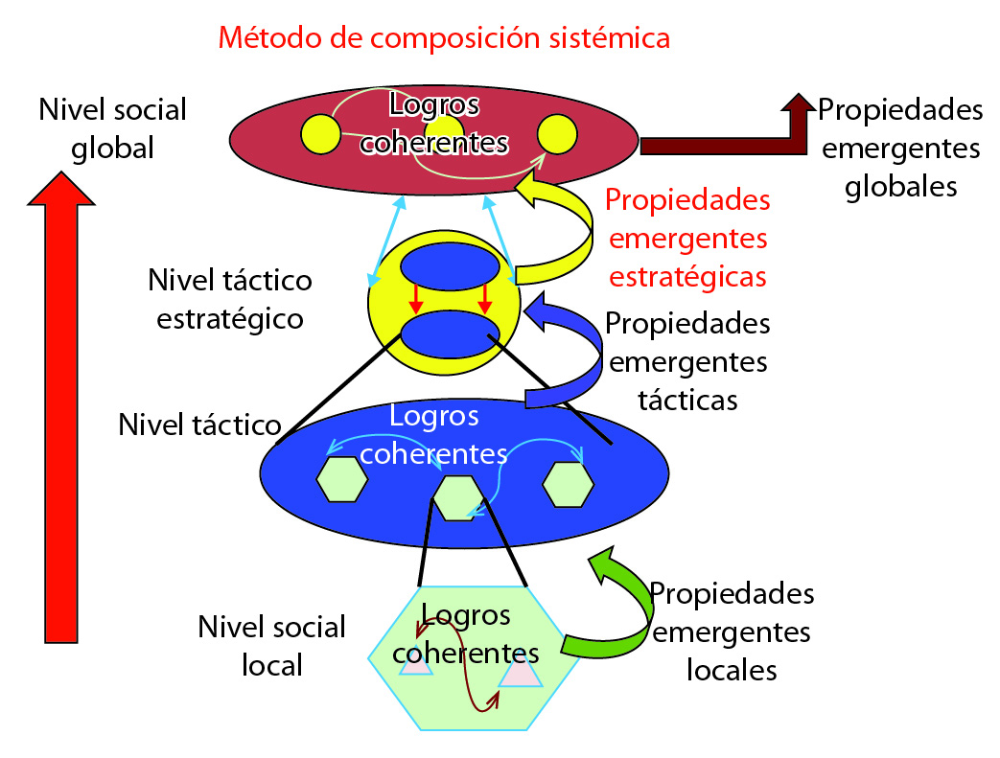

          <h2>219.Acoplamiento</h2>
        <p>Es la dependencia entre diferentes módulos de un sistema. Un acoplamiento bajo es deseable porque permite que cada parte funcione con independencia, 
            facilitando actualizaciones y modificaciones sin afectar al resto.</p>
        

          <h2>220.Homeostasis</h2>
        <p>Es la capacidad de un sistema para mantener un estado estable y equilibrado frente a cambios externos. Por ejemplo, en sistemas informáticos puede verse en la
             autorregulación de recursos como memoria o energía.</p>
        

         <h2>221. Failover</h2>
         <p>Failover: Mecanismo automático que redirige servicios a un sistema de respaldo cuando falla el principal.</p>
        

          <h2>222.Entropía en sistemas</h2>
        <p>Describe la tendencia natural de los sistemas al desorden y a la pérdida de eficiencia. En el contexto de ingeniería de sistemas, la entropía aumenta cuando no se actualizan procesos,
             lo que puede llevar a fallas y obsolescencia.</p>
        

          <h2>223. Emergencia</h2>
<p>Propiedades nuevas o comportamientos inesperados que aparecen en un sistema complejo y que no existen en sus componentes de manera aislada. Por ejemplo, en redes sociales, las dinámicas de interacción no dependen de un solo usuario, sino de todos en conjunto.</p>


<h2>224. Sinergia</h2>
<p>Principio según el cual la interacción de varias partes de un sistema genera un efecto mayor que la suma de las acciones individuales. Esto es clave en el diseño de sistemas colaborativos y distribuidos.</p>


<h2>225. Diagrama de Contexto</h2>
<p>Es una representación gráfica de alto nivel que muestra al sistema como una "caja negra", indicando qué datos entran, qué resultados salen y cómo interactúa con su entorno, sin detallar procesos internos.</p>


<h2>226. Arquitectura Orientada a Servicios (SOA)</h2>
<p>Modelo de diseño donde las funciones del sistema se organizan como servicios independientes que se comunican entre sí. Esto facilita la reutilización de componentes y la integración con otros sistemas.</p>
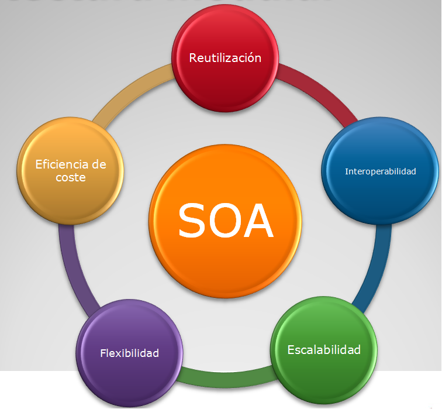

<h2>227. Minería de Procesos</h2>
<p>Técnica que analiza registros de ejecución de sistemas (logs) para descubrir cómo realmente se desarrollan los procesos. Permite detectar cuellos de botella y optimizar la eficiencia de los sistemas empresariales.</p>


<h2>228. Reingeniería de Sistemas</h2>
<p>Consiste en rediseñar desde cero procesos y componentes de un sistema existente para hacerlo más eficiente, moderno y alineado con nuevas necesidades, en lugar de simplemente mejorarlo gradualmente.</p>


<h2>229. Tolerancia a Fallos</h2>
<p>Capacidad de un sistema para continuar funcionando correctamente incluso cuando una o más de sus partes han fallado. Se logra mediante redundancia de componentes y mecanismos de recuperación.</p>


<h2>230. Alta Disponibilidad</h2>
<p>Conjunto de estrategias que buscan que un sistema esté siempre operativo, minimizando tiempos de inactividad mediante respaldo, redundancia y monitoreo constante.</p>
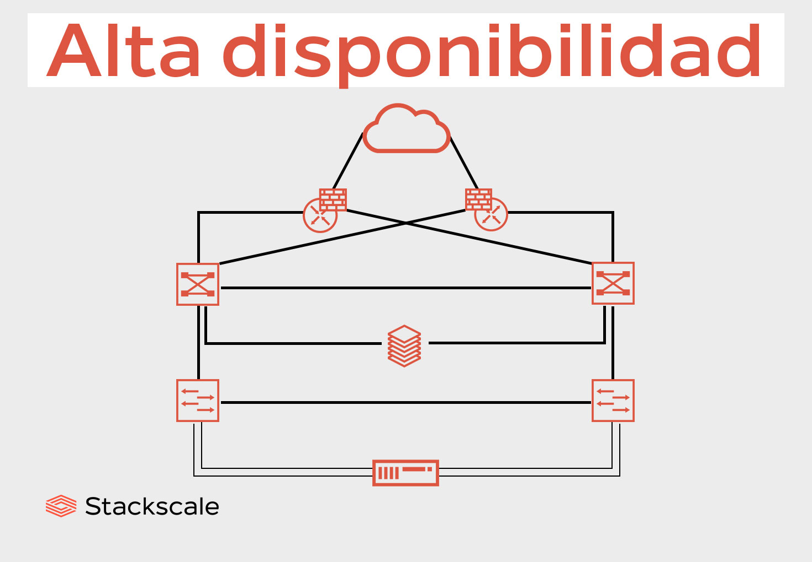

<h2>231. Sistemas Adaptativos</h2>
<p>Son aquellos que modifican su comportamiento de manera dinámica en respuesta a los cambios en el entorno, aprendiendo y ajustando sus procesos sin intervención humana constante.</p>


<h2>232. Elasticidad</h2>
<p>Propiedad de un sistema, sobre todo en entornos de nube, de aumentar o reducir automáticamente sus recursos (como servidores o memoria) en función de la demanda.</p>


<h2>233. Idempotencia</h2>
<p>Propiedad de ciertas operaciones que, al repetirse varias veces, siempre producen el mismo resultado. Es muy importante en sistemas distribuidos y servicios web para evitar inconsistencias.</p>


<h2>234. Backup Incremental</h2>
<p>Copia de seguridad que solo guarda los cambios realizados desde el último respaldo.</p>


          <h2>235.Latencia</h2>
        <p>Tiempo que tarda un sistema en responder a una petición desde que se envía hasta que se recibe la respuesta.
             Una latencia baja es esencial en sistemas en tiempo real.</p>
        

          <h2>236.Throughput (Rendimiento)</h2>
        <p>Medida de la cantidad de operaciones, transacciones o procesos que un sistema puede realizar en un tiempo determinado. Indica la capacidad
             de procesamiento del sistema.</p>
        

          <h2>237.Deadlock (Interbloqueo)</h2>
        <p>Situación en la que varios procesos de un sistema quedan bloqueados esperando recursos que otros poseen, sin que ninguno pueda avanzar.</p>
        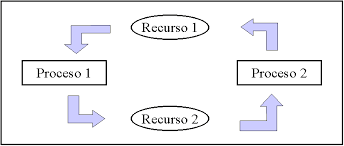

          <h2>238.Race Condition </h2>
        <p>Error que ocurre cuando dos procesos acceden a la misma información al mismo tiempo, provocando resultados inesperados o inconsistentes.</p>
        

          <h2>239.Monitorización de Sistemas</h2>
        <p>Actividad continua de supervisión del rendimiento, disponibilidad y seguridad de un sistema con el fin de detectar problemas de manera temprana.</p>
        

             <h2>240.Ingeniería de la Confiabilidad</h2>
        <p>Rama de la ingeniería de sistemas que busca diseñar y gestionar sistemas para que funcionen de manera confiable bajo condiciones específicas y 
            durante un tiempo determinado.</p>
        

          <h2>241.Arquitectura Hexagonal</h2>
        <p>Modelo de diseño de software que separa el núcleo lógico del sistema de sus entradas y salidas, lo que permite que el sistema sea más flexible y 
            adaptable a cambios.</p>
        

          <h2>242.Modelo de Capas</h2>
        <p>Organización jerárquica de un sistema en diferentes niveles, cada uno con funciones específicas y comunicándose únicamente con la capa superior e inferior, 
            como ocurre en el modelo OSI de redes.</p>
        

          <h2>243.Sistema Socio-Técnico</h2>
        <p>Perspectiva que reconoce que los sistemas no solo involucran tecnología, sino también personas, cultura y procesos sociales que influyen en 
            su funcionamiento.</p>
        

          <h2>244.Sistemas Auto-Organizados</h2>
        <p>Sistemas capaces de estructurarse, regularse y adaptarse sin necesidad de un control centralizado, como ocurre en redes neuronales o 
            sistemas biológicos.</p>
        

          <h2>245.Ingeniería de Requisitos</h2>
        <p>Proceso mediante el cual se identifican, documentan y gestionan las necesidades de los usuarios para que el sistema cumpla con sus objetivos
             correctamente.</p>
        

          <h2>246.Escalado Horizontal</h2>
        <p>Técnica de aumentar la capacidad de un sistema añadiendo más servidores o nodos, en lugar de mejorar un solo equipo. Es común en entornos de nube.</p>
        

          <h2>247Escalado Vertical:.</h2>
        <p>Incremento de capacidad de un sistema mediante la mejora de un único servidor, aumentando CPU, memoria o almacenamiento.</p>
        

          <h2>248.Balanceo de Carga</h2>
        <p>Estrategia que distribuye el trabajo entre varios servidores para mejorar la velocidad de respuesta y evitar sobrecargas en un solo punto.</p>
        

          <h2>249.Gemelo Digital</h2>
        <p>Representación virtual de un sistema físico que permite simular, analizar y optimizar su funcionamiento en tiempo real, utilizado en áreas como la industria 4.0 y la ingeniería</p>
        

          <h2>250.Arquitectura Orientada a Microservicios</h2>
        <p>Estilo de diseño de sistemas en el que las aplicaciones se dividen en pequeños servicios independientes, cada uno con su propia lógica y base de datos, facilitando la escalabilidad y el despliegue.</p>
        

          <h2>251.Patrones de Diseño de Software</h2>
        <p>Soluciones reutilizables y probadas para problemas comunes en la construcción de sistemas, como Singleton, Observer o Factory.</p>
        

          <h2>252.Ingeniería de la Usabilidad</h2>
        <p>Rama que estudia cómo diseñar sistemas fáciles de usar, accesibles y eficientes para los usuarios finales.</p>
        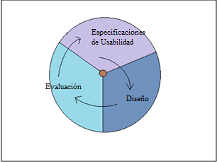

          <h2>253.Arquitectura Serverless:</h2>
        <p>Modelo donde el sistema se ejecuta en la nube sin necesidad de gestionar servidores, pagando solo por el tiempo de ejecución de funciones.</p>
        

          <h2>254.Observabilidad</h2>
        <p>Capacidad de un sistema de exponer métricas, trazas y registros que permiten entender su estado interno y detectar problemas.</p>
        

          <h2>255.Resiliencia de Sistemas</h2>
        <p>Capacidad de un sistema para recuperarse rápidamente de fallos o interrupciones y mantener sus funciones críticas.</p>
        

          <h2>256.Arquitectura de Eventos</h2>
        <p>Modelo en el que los componentes de un sistema reaccionan a sucesos (eventos), permitiendo integración más flexible y asincrónica.</p>
        

          <h2>257.Computación Distribuida:</h2>
        <p>Estrategia en la que un sistema se ejecuta sobre varios equipos conectados en red que trabajan juntos como una sola unidad.</p>
        

          <h2>258.Sistema de Tiempo Real</h2>
        <p>Aquel que debe dar respuestas dentro de un límite de tiempo estricto, como los usados en aviación o medicina</p>
        

         <h2>259.Interoperabilidad Semántica</h2>
        <p>Capacidad de los sistemas no solo para intercambiar datos, sino también para entender su significado de manera uniforme.</p>
        

          <h2>260.Orquestación de Servicios</h2>
        <p>Coordinación automática de diferentes componentes o microservicios para ejecutar procesos complejos.</p>
        

          <h2>261.Escalado Automático (Auto-Scaling)</h2>
        <p>Habilidad de un sistema en la nube de aumentar o reducir recursos de forma automática en función de la carga.</p>
        

          <h2>262.Plan de Continuidad del Negocio</h2>
        <p>Estrategia que garantiza que los sistemas críticos sigan funcionando en caso de desastres.</p>
        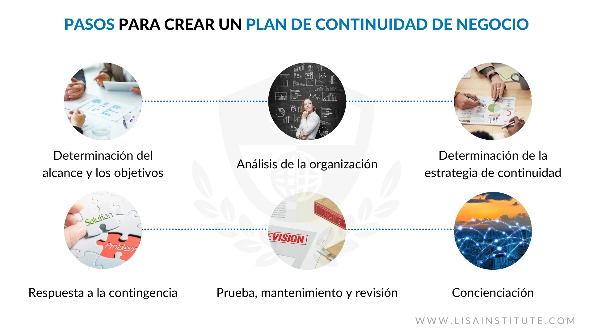

          <h2>263.Plan de Recuperación ante Desastres (DRP)</h2>
        <p>Procedimientos específicos para restaurar sistemas después de un fallo grave o catástrofe.</p>
        

          <h2>264.Ingeniería de la Complejidad</h2>
        <p>Estudio de sistemas altamente complejos y dinámicos para comprender sus interacciones y comportamientos emergentes.</p>
        

          <h2>265. Arquitectura en Capas Limpias (Clean Architecture)</h2>
         <p>Modelo de diseño que separa la lógica de negocio de los detalles técnicos para facilitar mantenimiento y escalabilidad.</p>
        

          <h2>266.Sistemas Críticos</h2>
        <p>Aquellos cuya falla puede tener consecuencias graves, como pérdida de vidas humanas o grandes pérdidas económicas.</p>
        

          <h2>267.Integración Continua (CI)</h2>
        <p>Práctica en la que los cambios en el código se integran frecuentemente en un repositorio compartido, verificando automáticamente errores.</p>
        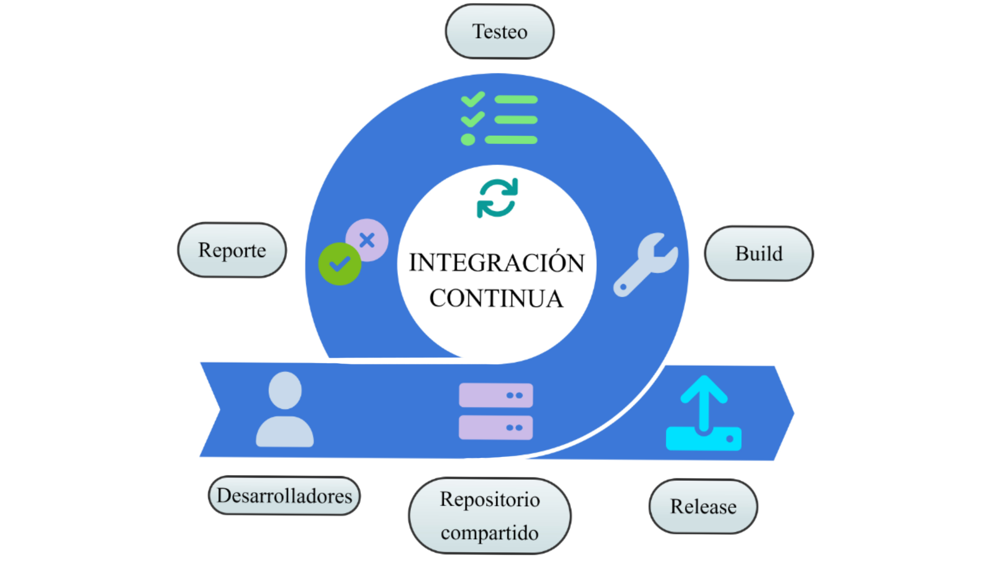

          <h2>268.Despliegue Continuo (CD)</h2>
        <p>Extensión de la CI que permite poner en producción nuevas versiones del sistema de manera automatizada y frecuente.</p>
        

          <h2>269.Pruebas de Estrés </h2>
        <p>Evaluación que somete a un sistema a cargas extremas para conocer su límite de resistencia.</p>
        

          <h2>270.Pruebas de Carga</h2>
        <p>Verificación de cómo responde un sistema bajo niveles normales o elevados de usuarios y transacciones.</p>
        

          <h2>271.Sistemas Híbridos</h2>
        <p>Combinación de diferentes tipos de arquitecturas o tecnologías en un solo sistema, como local y nube.</p>
        

          <h2>272.Cómputo en el Borde (Edge Computing)</h2>
        <p>Procesamiento de datos en dispositivos cercanos al usuario para reducir latencia y uso de ancho de banda.</p>
        

          <h2>273.Arquitectura Peer-to-Peer (P2P)</h2>
        <p>Modelo donde los nodos de un sistema actúan a la vez como clientes y servidores, compartiendo recursos directamente.</p>
        

          <h2>274.Virtualización de Funciones de Red (NFV)</h2>
        <p>Estrategia que reemplaza dispositivos físicos de red por software virtual ejecutado en servidores.</p>
        

          <h2>275.Contenedores:</h2>
        <p>Tecnología que encapsula aplicaciones y sus dependencias, garantizando que se ejecuten igual en cualquier entorno.</p>
        

          <h2>276.Kubernetes</h2>
        <p>Plataforma de orquestación de contenedores que automatiza el despliegue, escalado y gestión de sistemas en la nube.</p>
        

          <h2>277.Arquitectura de Referencia</h2>
        <p>Modelo estándar que sirve como guía para diseñar nuevos sistemas basados en buenas prácticas.</p>
        

        <h2>278.Procesos Estocásticos en Sistemas</h2>
        <p>Procesos que involucran variables aleatorias e incertidumbre en el comportamiento del sistema.</p>
        

          <h2>279.Teoría de Colas en Sistemas</h2>
        <p>Estudio matemático de cómo los sistemas gestionan solicitudes y tiempos de espera, aplicado en servidores y redes.</p>
        

          <h2>280.Sistemas Multiagente</h2>
        <p>Sistemas en los que múltiples agentes autónomos interactúan para resolver problemas complejos.</p>
        

          <h2>281.Cómputo Cognitivo </h2>
        <p>Sistemas que imitan procesos de pensamiento humano como el aprendizaje y la toma de decisiones.</p>
        

          <h2>282.Arquitectura Orientada a Componentes</h2>
        <p>Modelo en el que los sistemas se construyen ensamblando componentes independientes y reutilizables.</p>
        

          <h2>283.Plataforma como Servicio (PaaS)</h2>
        <p>Modelo en la nube que ofrece a los desarrolladores entornos completos para construir y desplegar aplicaciones.</p>
        

          <h2>284.Infraestructura como Código (IaC)</h2>
        <p>Práctica en la que la infraestructura del sistema se gestiona y automatiza mediante archivos de configuración.</p>
        

          <h2>285.Contingencia en Sistemas</h2>
        <p>Estrategias para garantizar que un sistema pueda seguir operando bajo situaciones imprevistas.</p>
        

          <h2>286.Sistema Ciberfísico</h2>
        <p>Integración de sistemas informáticos con procesos físicos, como autos autónomos o fábricas inteligentes.</p>
        

          <h2>287.Computación Ubicua:</h2>
        <p>Concepto en el que los sistemas están presentes en el entorno cotidiano, integrándose de manera invisible en la vida diaria.</p>
        

          <h2>288.Sistemas Embebidos</h2>
        <p>Computadoras especializadas dentro de dispositivos para controlar funciones específicas, como electrodomésticos o vehículos.</p>
        

          <h2>289.Arquitectura Monolítica</h2>
        <p>Modelo tradicional donde todos los componentes del sistema están unidos en un único bloque de software.</p>
        

          <h2>290.Arquitectura Basada en Dominios (DDD)</h2>
        <p>Método de diseño de sistemas que organiza el software alrededor de la lógica del negocio.</p>
        

          <h2>291.Patrones Antipatrón</h2>
        <p>Prácticas de diseño ineficientes que parecen buenas soluciones al inicio, pero generan problemas a largo plazo.</p>
        

          <h2>292.Sistemas Holónicos</h2>
        <p>Sistemas compuestos por unidades autónomas (holones) que pueden funcionar de manera independiente o integrada.</p>
        

          <h2>293.Escalabilidad Dinámica</h2>
        <p>Capacidad de un sistema de ajustarse automáticamente a la demanda en tiempo real, sin intervención manual.</p>
        

          <h2>294.Desacoplamiento de Sistemas</h2>
        <p>Estrategia que busca separar componentes para que funcionen con menos dependencias entre sí.</p>
        

          <h2>295.Arquitectura Event-Driven</h2>
        <p>Modelo en el que los componentes del sistema reaccionan de manera inmediata a eventos externos o internos.</p>
        

          <h2>296.Patrón Saga</h2>
        <p>Estrategia para gestionar transacciones distribuidas en microservicios asegurando consistencia de datos</p>
        

         <h2>297.Sistema Distribuido Basado en Consenso</h2>
        <p>Sistemas que logran acuerdos comunes entre múltiples nodos, como en blockchain.</p>
        

          <h2>298.Escalabilidad Lineal</h2>
        <p>Situación en la que el rendimiento del sistema aumenta de forma proporcional a los recursos añadidos.</p>
        

          <h2>299.Arquitectura Mesh</h2>
        <p>Modelo de comunicación en el que todos los nodos del sistema pueden conectarse entre sí directamente, mejorando la tolerancia a fallos.</p>
        

          <h2>300.Interfaz de Sistema</h2>
        <p>Es el punto de contacto donde un sistema interactúa con otros sistemas o con los usuarios. Una interfaz puede ser gráfica, de comandos, de red o de hardware,
             y su calidad define la facilidad de interacción.</p>
        

          <h2>301.Sistema Determinista</h2>
        <p>Es aquel cuyo comportamiento se puede predecir exactamente, ya que las mismas entradas siempre producen las mismas salidas. Son comunes en entornos controlados como simuladores
             matemáticos.</p>
        

          <h2>302.Sistema Estocástico</h2>
        <p>Son sistemas cuyo comportamiento involucra azar o incertidumbre. No es posible predecir los resultados exactos, solo probabilidades. Ejemplo: el tráfico de red en internet.</p>
        

          <h2>303.Interdependencia de Sistemas</h2>
        <p>Describe la relación de dependencia mutua entre sistemas diferentes. En el mundo real, los sistemas no operan solos: un sistema bancario depende de sistemas de telecomunicaciones, energía y seguridad.</p>
        

          <h2>304.Ciclo de Vida de un Sistema</h2>
        <p>Es el conjunto de etapas que atraviesa un sistema desde su concepción hasta su retiro. Incluye planificación, análisis, diseño, implementación, mantenimiento y, finalmente, reemplazo o desecho.</p>
        

          <h2>305.Análisis de Sistemas </h2>
        <p>Es el proceso de estudiar un sistema existente para comprender su funcionamiento, identificar problemas, necesidades y oportunidades de mejora. El análisis busca definir qué debe hacer un nuevo sistema o cómo debe mejorar el actual, sin entrar todavía en los detalles técnicos de su 
            construcción.</p>
        

          <h2>306.Diseño de Sistemas</h2>
        <p>Es la etapa posterior al análisis, en la que se define cómo funcionará el sistema, especificando estructuras, procesos, bases de datos, interfaces y reglas. Es la traducción de los requerimientos del análisis a una arquitectura técnica
             y funcional.</p>
        

          <h2>307.Requerimientos del Sistema</h2>
        <p>Son las condiciones o capacidades que el sistema debe cumplir para satisfacer las necesidades del usuario. Se dividen en funcionales (acciones que el sistema debe realizar) y no funcionales (rendimiento, seguridad, usabilidad, etc.).</p>
        

          <h2>308.Requerimientos Funcionales</h2>
        <p>Son las especificaciones de lo que el sistema debe hacer directamente, como generar reportes, procesar pagos, validar datos o registrar usuarios. Representan el "qué hace" más que el "cómo lo hace".</p>
        

          <h2>309.Requerimientos No Funcionales</h2>
        <p>Son las características de calidad que debe tener el sistema: tiempo de respuesta, seguridad de datos, accesibilidad, compatibilidad con otros sistemas, entre otros. Definen la experiencia y confianza en el uso del sistema.</p>
        

          <h2>310.Casos de Uso</h2>
        <p>Son descripciones detalladas de cómo los usuarios interactúan con el sistema para lograr un objetivo específico. Permiten visualizar las funciones del sistema desde la perspectiva del usuario final.</p>
        

          <h2>311.Diagramas de Casos de Uso</h2>
        <p>Son representaciones gráficas que muestran los actores (usuarios o sistemas externos) y las interacciones que tienen con el sistema. Ayudan a entender el alcance funcional del sistema.</p>
        

          <h2>312.Modelo Entidad-Relación (ER)</h2>
        <p>Es una técnica de modelado utilizada para representar la estructura de datos de un sistema. Define entidades (objetos importantes), atributos (sus características) y relaciones (cómo se conectan entre sí). </p>
        

          <h2>313.Diagramas de Flujo de Datos (DFD)</h2>
        <p>Son representaciones visuales que muestran cómo la información se mueve dentro del sistema, destacando procesos, almacenes de datos, entradas y salidas. Se utilizan mucho en análisis de sistemas.</p>
        

          <h2>314.Modelo de Procesos de Negocio (BPMN)</h2>
        <p>Es un estándar gráfico para modelar procesos empresariales. Permite entender cómo fluye el trabajo, qué decisiones se toman y cómo interactúan los sistemas y las personas en una organización.</p>
        

          <h2>316.Arquitectura Cliente-Servidor</h2>
        <p>Es un modelo en el que un sistema se divide en dos partes: los clientes (dispositivos que solicitan servicios) y los servidores (máquinas que procesan y responden a esas solicitudes).</p>
         

          <h2>317.Prototipo de Sistema</h2>
        <p>Es un modelo de diseño en el que el sistema se organiza en niveles separados (presentación, lógica de negocio y datos). Cada capa tiene funciones específicas y se comunica con las demás de manera controlada.</p>
        

          <h2>318.Modelo en Cascada</h2>
        <p>Es una metodología de desarrollo de sistemas que sigue un flujo lineal y secuencial: análisis, diseño, implementación, pruebas, despliegue y mantenimiento. Cada fase debe completarse antes de pasar a la siguiente.</p>
        

          <h2>319.Patrón de diseño Singleton</h2>
        <p>es un patrón de diseño creacional que asegura que una clase tenga solo una instancia y proporciona un punto de acceso global a ella. Se implementa ocultando el constructor y ofreciendo un método estático para obtener 
            la única instancia disponible</p>
        

          <h2>320.Patrón de diseño Factory Method</h2>
        <p>El patrón de diseño Factory Method es un patrón creacional que define una interfaz para crear objetos en una superclase, pero permite que las subclases decidan qué tipo específico de objeto crear. En esencia, posterga la instancia de objetos a las clases derivadas, 
        proporcionando una mayor flexibilidad y desacopan el código del cliente de la instanciación de clases concretas</p>
        

          <h2>321.Patrón de diseño Visitor</h2>
        <p>Es un patrón de comportamiento, que permite definir una operación sobre objetos de una jerarquía de clases sin modificar las clases sobre las que opera. Representa una operación que se realiza sobre los elementos que conforman la estructura de un objeto.</p>
        

          <h2>322.Prueba de aceptación</h2>
        <p>Una prueba de aceptación es la fase final de control de calidad en el desarrollo de software que valida si el sistema cumple con las necesidades comerciales y los requisitos del usuario antes de su lanzamiento. Durante esta etapa, usuarios finales reales interactúan
             con el producto en un entorno lo más parecido a la realidad para asegurar su funcionalidad, fiabilidad y usabilidad, garantizando que el sistema cumpla con las expectativas y esté listo para la producción. </p>
        

        <h2>323.Prueba de caja negra</h2>
        <p>Las pruebas de caja negra son un método de prueba de software que verifica la funcionalidad de un sistema sin conocer su código o estructura interna. Los testers interactúan con el sistema como si fueran usuarios finales, proporcionando entradas y observando las salidas
             para evaluar si el software cumple los requisitos y se comporta como se espera. Este enfoque se centra en el comportamiento externo y la experiencia del usuario para detectar problemas de funcionalidad, usabilidad, rendimiento y seguridad. </p>
        

          <h2>324.Prueba de caja blanca</h2>
        <p>La prueba de caja blanca (White-Box Testing) es una técnica de verificación de software donde el evaluador tiene conocimiento del código fuente, la estructura interna y el funcionamiento de la aplicación. Esta inspección detallada del código permite identificar vulnerabilidades, 
            errores lógicos y fallos en las rutas de ejecución, asegurando que cada componente funcione correctamente y que el software sea confiable y seguro. </p>
        

          <h2>325.Prueba de configuración</h2>
        <p>s el proceso de evaluar el rendimiento y la funcionalidad de un software o sistema en diversas combinaciones de hardware y software para asegurar que sea compatible 
            y funcione correctamente para todos los usuarios</p>
        

    <h2>326.Prueba de mantenimiento</h2>
<p>Es una evaluación para diagnosticar problemas, confirmar reparaciones, verificar la facilidad de modificar un sistema o evaluar la competencia de un técnico en mantenimiento.</p>


<h2>327.Principio SOLID Abierto/Cerrado</h2>
<p>Establece que una entidad de software (como una clase o módulo) debe estar abierta para la extensión y cerrada para la modificación. Esto significa que se debe poder añadir nueva funcionalidad sin alterar el código existente, lo cual se logra utilizando técnicas como la herencia y las interfaces para permitir la ampliación del comportamiento sin modificar el código base.</p>


<h2>328.Principio SOLID Sustitución de Liskov</h2>
<p>El Principio de Sustitución de Liskov (LSP) establece que, en un programa de software, los objetos de una superclase deben ser reemplazables por objetos de sus subclases sin que el programa sufra un comportamiento inesperado o un fallo. Es decir, cualquier clase hija debe poder usarse en cualquier contexto donde se espere la clase padre, sin que ello altere el correcto funcionamiento de la aplicación.</p>


          <ul>329.Principio SOLID  Segregación de Interfaces/ul&gt;
        <p>establece que los clientes no deben ser forzados a depender de métodos que no utilizan, promoviendo la creación de interfaces pequeñas y específicas en lugar de interfaces grandes y monolíticas. Al aplicar el ISP, se crean interfaces que definen solo el comportamiento que una clase necesita, mejorando la modularidad, la legibilidad y 
            la mantenibilidad del código. </p>
        

        <h2>330.Principio SOLID  Inversión de Dependencias</h2>
        <p>establece que los módulos de alto nivel no deben depender de los de bajo nivel, sino que ambos deben depender de abstracciones. La clave es que las abstracciones, no los detalles concretos, definen la arquitectura, lo que genera un código más flexible, modular y fácil de mantener y probar, ya que se desacopla la lógica compleja de
             los detalles de implementación. </p>
        

        <h2>331.Historia de usuario</h2>
        <p> descripción corta e informal de una característica de software, escrita desde la perspectiva del usuario final y que explica el qué y el porqué de una función, no el cómo. Generalmente sigue el formato "Como [un tipo de usuario], quiero [una acción] para que [un beneficio/valor]". Son un componente central de las metodologías ágiles como Scrum, donde se utilizan 
            para guiar al equipo de desarrollo, promover la colaboración y adaptarse a los cambios. </p>
        

        <h2>332.Diagrama de clases UML</h2>
        <p>es una representación visual estática de la estructura de un sistema orientado a objetos, que muestra sus clases, sus atributos (datos) y operaciones (métodos), así como las relaciones entre ellas, como asociación, agregación, composición, 
            herencia y realización</p>
        

        <h2>333.Diagrama de secuencia UML</h2>
        <p>es una herramienta visual que muestra cómo interactúan los objetos de un sistema a lo largo del tiempo, representando la secuencia de mensajes intercambiados entre ellos
             para completar una tarea o proceso.</p>
        

        <h2>334.Diagrama de casos de uso UML</h2>
        <p>es una representación visual que describe la funcionalidad de un sistema y cómo los usuarios interactúan con él, mostrando los actores (quienes interactúan) y los casos de uso 
            (las funcionalidades que el sistema ofrece).</p>
        

           <h2>335.Diagrama de componentes UML</h2>
        <p> es una representación visual de la estructura física de un sistema de software, mostrando la organización de sus componentes (como bibliotecas, módulos y archivos) 
            y las interfaces que usan para comunicarse.</p>
        

          <h2>336.Diagrama de despliegue UML</h2>
        <p>es un tipo de diagrama estructural que visualiza la arquitectura física de un sistema, mostrando cómo los componentes de software (artefactos) se asignan a nodos de hardware (hardware y sistemas de ejecución) 
            en un entorno en tiempo de ejecución</p>
        

          <h2>337.Diagrama de actividad UML</h2>
        <p>es una representación visual de un proceso, flujo de trabajo o caso de uso que muestra el movimiento de control y flujo de objetos entre las actividades, acciones 
            y puntos de decisión</p>
        

          <h2>338.Diagrama de estados UML</h2>
        <p>es una representación gráfica del comportamiento de un objeto o sistema a lo largo del tiempo, mostrando los diferentes estados por los que pasa y las transiciones 
            que ocurren entre ellos en respuesta a eventos o condiciones</p>
        

          <h2>339.Modelo entidad-relación (ER)</h2>
        <p>es una herramienta visual para el diseño de bases de datos que representa la estructura de la información mediante entidades, sus atributos y las relaciones entre ellas, 
            utilizando un lenguaje gráfico con rectángulos, óvalos y líneas. </p>
        

          <h2>340Normalización de bases de datos.</h2>
        <p>es el proceso de organizar la información en una base de datos relacional para reducir la redundancia de datos y mejorar la integridad de la información</p>
        

          <h2>341.Denormalización</h2>
        <h2>es una técnica que se utiliza para mejorar la velocidad de recuperación de datos, especialmente en sistemas con una gran cantidad de datos, como los almacenes de datos</h2>
        

        <h2>342.FLASH LOAN ATTACK</h2>
        <h2>Un ataque de Flash Loan es una forma de manipular las finanzas descentralizadas (DeFi) explotando la naturaleza de los préstamos sin garantía. Un atacante solicita un préstamo masivo sin colateral, usa esos fondos en una operación de trading o manipulación de precios dentro de la misma transacción y, si tiene éxito, devuelve el préstamo con sus intereses antes de que la transacción se confirme en la blockchain. Si la operación falla, la transacción se deshace y el préstamo se devuelve, sin que el atacante pierda su propio dinero.</h2>
        

        <h2>343.TESTNET</h2>
        <h2>Un "Testnet" es una red blockchain de prueba que funciona en paralelo a la red principal (mainnet). Su propósito es permitir a desarrolladores y usuarios probar y experimentar con nuevas funciones, contratos inteligentes y aplicaciones descentralizadas (dApps) en un entorno simulado y seguro, sin utilizar activos reales y evitando riesgos financieros. Utiliza tokens sin valor en el mundo real para simular transacciones, lo que garantiza que todo funcione correctamente antes de un lanzamiento en la red principal.</h2>
        

        <h2>344.MAINNET</h2>
        <h2>Una "mainnet" (o red principal) es la versión totalmente operativa y en vivo de una red blockchain donde se realizan transacciones reales, se ejecutan contratos inteligentes y se manejan criptomonedas o tokens con valor económico real. A diferencia de las testnets (redes de prueba), que sirven para el desarrollo y la experimentación sin dinero real, la mainnet es el producto final en producción, con activos y usuarios reales interactuando en un libro mayor distribuido y seguro.</h2>
        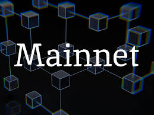

        <h2>345.RECEIVER</h2>
        <h2>"Software Receiver" no tiene un significado único y depende del contexto; puede referirse a un programa que reproduce contenido de radio (como la app Receiver), a un software para interactuar con hardware específico (como los programas de Topcon o Septentrio para receptores GNSS), o a una aplicación para acceder a escritorios virtuales (como Citrix Receiver). En general, es un programa informático que funciona como un "receptor" de algún tipo de información o servicio digital.</h2>
        

        <h2>346.LIMITACION DE PERMISOS</h2>
        <h2>La "Limitación de Permisos Software" se refiere a la restricción del acceso o el uso de aplicaciones y recursos de software, ya sea por parte de un usuario o un sistema, para proteger la privacidad, mejorar la seguridad o aplicar políticas empresariales. Esto se logra mediante la configuración de políticas, licencias y permisos que controlan qué usuarios pueden ejecutar software específico, acceder a datos restringidos o realizar ciertas acciones, por ejemplo, limitando la ejecución de archivos ejecutables en unidades extraíbles o restringiendo el acceso de usuarios invitados a ciertos datos.</h2>
        
        
        <h2>347.EFI</h2>
        <h2>"EFI Software" se refiere comúnmente a Extensible Firmware Interface, una interfaz que reemplaza a la BIOS en las computadoras modernas para gestionar el arranque y la comunicación entre el hardware y el sistema operativo. También puede referirse a Electronic Fuel Injection (inyección electrónica de combustible), un sistema que controla y optimiza la mezcla de aire y combustible en los motores. Finalmente, puede ser el nombre de empresas de software como Electronics for Imaging (EFI), que ofrece soluciones para la industria de la impresión, o Effi ERP, un sistema de gestión empresarial.</h2>
        

        <h2>348.TOGAF</h2>
        <h2>TOGAF no es un software, sino el The Open Group Architecture Framework, un marco de referencia integral para desarrollar y gestionar arquitecturas empresariales, que proporciona un enfoque estructurado para alinear la estrategia de negocio con la tecnología de TI. A través del Método de Desarrollo de Arquitectura (ADM), TOGAF ayuda a las organizaciones a planificar, diseñar, implementar y gobernar la arquitectura de sistemas de información a gran escala, mejorando la eficiencia y la capacidad de adaptación.</h2>
        

        <h2>349.ZACHMAN FRAMEWORK</h2>
        <h2>Es una herramienta empresarial proactiva que permite modelar las funciones, elementos y procesos existentes de una organización y ayudar a gestionar el cambio empresarial. El marco se basa en la experiencia de Zachman sobre cómo se gestiona el cambio en productos complejos como aviones y edificios.</h2>
        

        <h2>350.LINKERD</h2>
        <h2>Linkerd es un software de malla de servicios (service mesh) de código abierto y ligero, diseñado para entornos Kubernetes, que añade de forma transparente seguridad, observabilidad y fiabilidad a las aplicaciones distribuidas al gestionar la comunicación entre sus microservicios. Funciona interceptando las solicitudes de red entre servicios con unos proxies ultraligeros y de alto rendimiento (ubicados en el plano de datos), proporcionando de esta manera características como seguridad TLS, métricas de rendimiento (latencia, tasas de éxito), y reintentos automáticos sin requerir modificaciones en el código de la aplicación.</h2>
        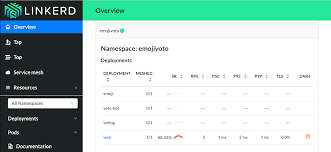

        <h2>351.METAPROGRAMACION</h2>
        <h2>La metaprogramación es una técnica de programación en la que un programa es capaz de tratar a otros programas, o a sí mismo, como datos. Esto permite que un software pueda leer, generar, analizar, transformar o incluso modificar otro código o su propio comportamiento en tiempo de ejecución o compilación. El objetivo es automatizar tareas repetitivas, reducir la generación manual de código y permitir que los programas se adapten de forma dinámica a nuevos escenarios.</h2>
        
        
        <h2>352.CURRYING</h2>
        <h2>El currying (o currificación) es una técnica de programación funcional que transforma una función con múltiples argumentos en una secuencia de funciones anidadas, cada una de las cuales acepta un solo argumento. Esta transformación permite la aplicación parcial de argumentos, facilitando la creación de funciones más pequeñas y especializadas a partir de una función más general, lo que mejora la reutilización y composición del código.</h2>
        

        <h2>353.ACTOR MODEL</h2>
        <h2>El Actor Model es un modelo de computación concurrente donde la unidad básica es el actor, una entidad independiente que encapsula un estado y comportamiento propios. Los actores se comunican exclusivamente mediante el envío asincrónico de mensajes, sin compartir ni modificar directamente el estado de otros actores. Este modelo facilita la creación de sistemas concurrentes y distribuidos que son escalables y tolerantes a fallos, ya que cada actor puede gestionar su trabajo de forma autónoma.</h2>
        

        <h2>354.SIDECAR PATTERN</h2>
        <h2>El patrón Sidecar es un patrón de diseño de software que implementa componentes auxiliares (el "sidecar") en un proceso o contenedor independiente que se ejecuta junto a una aplicación principal. Este patrón se usa para mejorar y ampliar la funcionalidad de la aplicación principal sin modificar su código, actuando como una "motocicleta" con su "sidecar" incorporado, y es especialmente útil en entornos de microservicios y contenedores, como con Kubernetes.</h2>
        

        <h2>355.HYPOTHESIS</h2>
        <h2>Hypothesis es una herramienta de anotación social de código abierto que permite a los usuarios colaborar, comentar y discutir textos o páginas web directamente en el contenido digital, funcionando como una especie de "capa de revisión por pares para la web". A diferencia de las anotaciones individuales, Hypothesis facilita que los estudiantes y grupos de trabajo anoten y respondan a otros comentarios, promoviendo la lectura colaborativa y la co-creación de conocimiento al llevar la práctica tradicional de escribir en los márgenes a los textos electrónicos.</h2>
        

        </ul>356.Gemelos Digitales (Digital Twins)
        <h2>Un gemelo digital es una réplica virtual de un objeto físico, proceso o sistema. Se utiliza para simular, analizar y predecir el comportamiento del original en tiempo real gracias a sensores e inteligencia artificial. Esto permite optimizar operaciones, anticipar fallos y mejorar la toma de decisiones en sectores como la industria
        la salud y las ciudades inteligentes.</h2>
        
        
        <h2>357.ESLINT PLUGINS</h2>
        <h2>Los plugins de ESLint son paquetes de software que extienden la funcionalidad del linter ESLint, permitiéndole analizar código para reglas específicas, como reglas para un framework (React, Vue) o un nuevo estilo de codificación, y detectar problemas de calidad de código y posibles errores de forma estática. Estos plugins añaden reglas y configuraciones personalizadas, lo que permite que ESLint se adapte a las necesidades de cualquier proyecto y equipo.</h2>
        

        <h2>358.DEAD CODE DETECTION</h2>
        <h2>El software de Detección de Código Muerto es una herramienta que identifica segmentos de código fuente que no son utilizados ni referenciados por un programa de software, lo cual optimiza el código al eliminar redundancia, mejorar la legibilidad, reducir posibles vulnerabilidades y disminuir los recursos (tiempo y memoria) que el programa consume innecesariamente. Estas herramientas pueden ser herramientas de análisis estático o dinámico que analizan el código para encontrar estos elementos inoperativos.</h2>
        

        <h2>359.COGNITIVE COMPLEXITY METRICS</h2>
        <h2>La métrica de complejidad cognitiva evalúa las complejidades de las estructuras de control, la anidación condicional y el flujo del programa, identificando secciones de código que pueden necesitar simplificación o refactorización para mejorar la calidad y la capacidad de mantenimiento del código.</h2>
        

        <h2>360.HOT PATH PROFILING</h2>
        <h2>El Software de Hot Path Profiling (Análisis de Rutas Calientes) es una herramienta de software que identifica las partes más activas o "calientes" del código en una aplicación para ayudar a los desarrolladores a optimizar el rendimiento, encontrando las funciones o segmentos de código que consumen la mayor parte del tiempo de ejecución de la CPU. Estas herramientas suelen utilizar técnicas como los gráficos de llamas (flame graphs) para visualizar las rutas de ejecución y revelar cuellos de botella en el rendimiento de manera eficiente.</h2>
        

        <h2>361.DUPLICAION DE CODIGO</h2>
        <h2>La duplicación de código es la existencia de secuencias de código idénticas o muy similares en múltiples lugares dentro de una misma base de código de software. Este fenómeno, también conocido como clon de código, es indeseable porque incrementa los costos de mantenimiento, dificulta la actualización del software, puede introducir errores y reduce la calidad del código al aumentar la deuda técnica.</h2>
        
        
        <h2>362.CODE OWNERSHIP MAPS</h2>
        <h2>El software de mapas de propiedad de código (code ownership maps) es una herramienta que ayuda a visualizar la estructura y las dependencias del código fuente para determinar quién es responsable de mantener y modificar diferentes partes del mismo. Estas herramientas automatizan el proceso de identificar la propiedad del código, lo que permite a los desarrolladores entender las relaciones del código, identificar cuellos de botella, evaluar el impacto de los cambios y mejorar la colaboración y la calidad del software.</h2>
        

        <h2>363.CODE CITY</h2>
        <h2>CodeCity es un entorno integrado para el análisis de software, donde los sistemas de software se visualizan como ciudades 3D interactivas y navegables. Las clases se representan como edificios de la ciudad, mientras que los paquetes se representan como los distritos donde se ubican.</h2>
        

        <h2>364.GENERACION AUTOMATICA DE CODIGO</h2>
        <h2>La generación automática de código se refiere al proceso de generar código automáticamente a partir de un diseño o modelo, eliminando la necesidad de codificación manual. Es crucial en el desarrollo de software, ya que acelera el proceso, reduce errores y permite la generación automática de enlaces de trazabilidad.</h2>
        

        <h2>365.VARIABILIY MODELING</h2>
        <h2>El software de modelado de variabilidad es una herramienta informática que permite crear y gestionar variaciones en sistemas de software, como las funcionalidades y configuraciones, para adaptarlos a diferentes propósitos o entornos. Su objetivo es representar las características comunes y variables dentro de una familia de productos para diseñar y mantener arquitecturas de software flexibles, facilitando la derivación de productos concretos y la personalización de sus características.</h2>
        

        <h2>366.REVERSE ENGINEERING</h2>
        <h2>La Ingeniería Inversa (Reverse Engineering) de Software es el proceso de analizar un programa de software existente para descubrir y comprender su funcionamiento interno, diseño, arquitectura y código. A diferencia de la ingeniería directa, que parte del diseño para crear un producto, la ingeniería inversa parte del producto final (el software ya compilado) para reconstruir su diseño y especificaciones originales.</h2>
        
        
        <h2>367.REINGENIERIA DE SOFWARE</h2>
        <h2>La reingeniería de software es el proceso de analizar, transformar y modernizar sistemas de software existentes para mejorar su funcionalidad, rendimiento, mantenibilidad y adaptabilidad, sin cambiar su comportamiento externo. Este proceso revitaliza software heredado, solucionando problemas como tecnología obsoleta, ineficiencias y falta de compatibilidad, haciéndolo más relevante para las necesidades actuales de la empresa y del mercado.</h2>
        

        <h2>368.ARQUITECTURA ADAPTATIVA</h2>
        <h2>La arquitectura adaptativa en software es un diseño de sistema que permite al software modificar y ajustar su comportamiento en tiempo real basándose en el entorno, las necesidades del usuario o los objetivos, como para manejar condiciones cambiantes de infraestructura, amenazas de seguridad, o degradaciones de rendimiento. Su objetivo es la optimización de servicios, la tolerancia a fallos y la mejora de la eficiencia al responder automáticamente a cambios a través de la recopilación de datos y técnicas como el aprendizaje automático.</h2>
        

        <h2>369.TRAZAVILIDAD DE REQUISITOS</h2>
        <h2>La trazabilidad de requisitos es la capacidad de rastrear un requisito a lo largo de todo el ciclo de vida del desarrollo de software, desde su origen hasta la implementación y las pruebas correspondientes, estableciendo vínculos claros entre él y otros elementos del proyecto como casos de prueba, código y defectos. Esta práctica ayuda a garantizar que todos los requisitos se cumplan, facilita la gestión de cambios, mejora la comunicación y la colaboración, y es crucial para la calidad y la auditoría del software, especialmente en aplicaciones críticas para la seguridad.</h2>
        

        <h2>370.SOFWARE TELEMETRY</h2>
        <h2>El software de telemetría es la función o herramienta que recopila, transmite y analiza datos sobre el uso y el rendimiento de una aplicación o sistema, enviando esta información de forma automática y remota a una ubicación central para su posterior supervisión, control y mejora. Este proceso permite a los desarrolladores y administradores entender cómo se utiliza el software, identificar fallos, problemas de rendimiento y mejorar la experiencia del usuario.</h2>
        

        <h2>371.MEDICION DE IMPACTO DE FUNCIONALIDADES</h2>
        <h2>La medición del impacto de funcionalidades de software es el proceso de evaluar los efectos que los cambios o la adición de nuevas características en una aplicación tienen en el sistema, los usuarios y los objetivos del negocio. Consiste en identificar dependencias, evaluar riesgos y predecir los resultados, para así tomar decisiones informadas, garantizar transiciones fluidas y mejorar la experiencia del usuario y la calidad general del software.</h2>
        
        
        <h2>372.USER STORY MAPPING</h2>
        <p>User Story Mapping Software son herramientas digitales que facilitan la creación y visualización de los mapas de historias de usuario (User Story Maps) para el desarrollo de productos y software. Estas herramientas ayudan a los equipos ágiles a organizar y priorizar las funcionalidades del producto desde la perspectiva del usuario, mostrando el flujo completo de la experiencia del usuario y definiendo el "esqueleto" o producto mínimo viable (MVP).</p>
        

        <h2>373.JOB STORIES</h2>
        <p>Una job story (historia de trabajo) en software es una técnica que describe la necesidad del usuario en un contexto específico, centrándose en el "trabajo" que el usuario intenta realizar y el resultado deseado, con el formato: "Cuando [situación], quiero [acción], para [resultado]". A diferencia de las historias de usuario, las job stories se enfocan en la motivación y el resultado, eliminando las suposiciones sobre el comportamiento y el tipo de usuario, lo que permite un diseño más centrado en las necesidades reales del cliente.</p>
        

        <h2>374.CASOS DE USO AVANZADOS</h2>
        <p>Los "casos de uso avanzados" en el software se refieren a la aplicación de técnicas de casos de uso más complejas, como los casos de uso extendidos, incluidos o especificaciones detalladas, para modelar las interacciones entre los actores y un sistema de una manera más profunda y exhaustiva. Estos conceptos permiten capturar escenarios más complejos, variaciones en los flujos de eventos y la reutilización de funcionalidades, lo que proporciona un entendimiento más robusto de los requisitos del sistema y facilita su desarrollo y mantenimiento.</p>
        

        <h2>375.TRACEABILITY MATRIX</h2>
        <p>Una Matriz de Trazabilidad de Requisitos (MTR) en el software es un documento, usualmente una tabla, que mapea y rastrea las relaciones entre los requisitos del producto, los casos de prueba y otros elementos del proyecto como el diseño o los defectos. Su propósito principal es asegurar que cada requisito se implemente y se verifique, demostrando la cobertura de las pruebas y facilitando la gestión de cambios y el cumplimiento normativo.</p>
        

        <h2>376.GHERKIN</h2>
        <p>Gherkin no es un software, sino un lenguaje específico de dominio (DSL) que se utiliza para definir el comportamiento esperado de una aplicación de software de manera clara y estructurada, principalmente en el contexto del Desarrollo Guiado por el Comportamiento (BDD). Su objetivo es servir como un puente de comunicación entre los miembros técnicos y no técnicos de un equipo, permitiéndoles describir las funcionalidades de forma entendible para todos, usando el formato Dado-Cuándo-Entonces. Este lenguaje se integra con herramientas como Cucumber para crear especificaciones ejecutables y automatizadas.</p>
        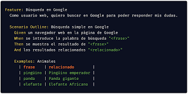
        
        <h2>377.BEHAVIOR TREES</h2>
        <p>Un árbol de comportamiento es una técnica de modelado visual estructurado que se utiliza en ingeniería de sistemas e ingeniería de software para representar el comportamiento del sistema.</p>
        

        <h2>378.INFRA ESTRUCTURE AS CODE (IAC) </h2>
        <p>Infrastructure as Code (IaC) no es un software en sí mismo, sino una práctica que usa archivos de código para definir y aprovisionar la infraestructura de IT, automatizando su gestión en lugar de configuraciones manuales. El "software IaC" se refiere a las herramientas y plataformas (como Ansible o Terraform) que permiten a los equipos escribir y ejecutar el código necesario para crear, actualizar y mantener servidores, bases de datos, redes y otros recursos de infraestructura de manera automática y repetible.</p>
        

        <h2>379.CONFIGURATION AS CODE (CAC)</h2>
        <p>La Configuración como Código (CaC) es una práctica que automatiza la gestión y el aprovisionamiento de la configuración de sistemas y aplicaciones mediante archivos de definición legibles por máquina, tratándolos como código fuente. Esto permite el control de versiones, la automatización de despliegues, la consistencia entre entornos, la reducción de errores manuales y la capacidad de revertir cambios, mejorando la eficiencia y la confiabilidad de la infraestructura y las aplicaciones en general.</p>
        

        <h2>380.ERROR BUDGETS</h2>
        <p>Un Error Budget (Presupuesto de Error) en software es la cantidad de tiempo de inactividad o falta de fiabilidad permitida para un servicio durante un período específico, calculada a partir de un Objetivo de Nivel de Servicio (SLO). Este presupuesto ayuda a encontrar un equilibrio entre la innovación y la fiabilidad, permitiendo a los equipos de desarrollo asumir riesgos en lanzamientos y priorizar la estabilidad cuando el servicio se acerca a sus límites permitidos.</p>
        

        <h2>381.LAUNCHDARKLY</h2>
        <p>LaunchDarkly es una plataforma de gestión de características (feature management) que permite a los equipos de desarrollo desacoplar el despliegue de código del lanzamiento de nuevas funcionalidades. Utiliza "indicadores de características" (feature flags) para activar o desactivar funciones en el código en tiempo real, lo que permite lanzar características de forma más rápida y segura, realizar pruebas en producción y personalizar experiencias para diferentes usuarios.</p>
        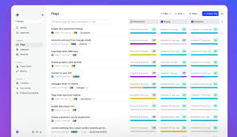
    
        <h2>382.UNLEASH</h2>
        <p>"Unleash" puede referirse a dos soluciones de software diferentes: Unleash (getunleash.io), una plataforma de código abierto para la gestión de funciones en desarrollo de software, que permite controlar el despliegue de nuevas características y pruebas A/B. O Unleash Software, un software de gestión de inventario basado en la nube para controlar existencias, compras y ventas, común en pequeñas y medianas empresas.</p>
        

        <h2>383.PRE-PRODUCTION MIRRORS</h2>
        <p>El Pre-Production Mirrors Software no es un término estándar para un tipo de software, sino que describe el uso de espejos o clones de entornos de producción en la etapa de pre-producción para pruebas y desarrollo de software. El término completo sería "Software para entornos de pre-producción como espejos de producción", y se refiere a herramientas que ayudan a crear y mantener estos ambientes idénticos al de producción, permitiendo a los desarrolladores probar cambios y asegurar la estabilidad antes de su implementación final y así evitar errores críticos en el entorno real.</p>
        

        <h2>384.SYNTHETIC MONITORING</h2>
        <p>La monitorización sintética implica simular las interacciones del usuario mediante scripts predefinidos para supervisar el rendimiento y la disponibilidad de la aplicación. Ayuda a identificar problemas de forma proactiva mediante la medición de métricas basadas en acciones simuladas del usuario.</p>
        

        <h2>385.AGENTE INTELIGENTE</h2>
        <p>Un agente inteligente es un programa de software que percibe su entorno, toma decisiones autónomas y actúa para alcanzar objetivos específicos, utilizando técnicas de inteligencia artificial para aprender, adaptarse y mejorar su rendimiento con el tiempo. Estos agentes pueden realizar tareas complejas, procesar información de manera eficiente y responder dinámicamente a situaciones cambiantes, a diferencia de los sistemas automatizados tradicionales que solo siguen instrucciones predefinidas.</p>
        

        <h2>386.SISTEMA AUTONOMO </h2>
        <p>Un Sistema Autónomo de Software (o sistema autónomo en general) es un conjunto de programas que pueden funcionar de forma independiente y tomar decisiones por sí mismos para alcanzar sus objetivos, adaptándose a imprevistos sin intervención humana o dependencia de otros sistemas. El software autónomo habilita esta capacidad en la inteligencia artificial, permitiendo a los sistemas operar de manera inteligente y automatizada en diversas aplicaciones como la conducción autónoma, la robótica y la gestión de redes.</p>
        
        
        <h2>387.SOFTWARE EMBEBIDO INELIGENTE</h2>
        <p>El Software Embebido Inteligente es un tipo de software especializado integrado en dispositivos no computacionales para controlar sus funciones específicas, como la recolección de datos, la interacción con el hardware y la adaptación a condiciones cambiantes. "Inteligente" se refiere a la capacidad de estos sistemas para analizar información, tomar decisiones en tiempo real y, en muchos casos, conectarse a Internet para interactuar con otros sistemas, formando la base del Internet de las Cosas (IoT).</p>
        

        <h2>388.CICLO DE CONTROL EN BUCLE CERRADO</h2>
        <p>Un Ciclo de Control en Bucle Cerrado (o de Retroalimentación) en software es un sistema que monitorea continuamente la salida de un proceso, la compara con un valor deseado (consigna), y ajusta automáticamente la entrada del proceso para corregir cualquier desviación y mantener el rendimiento objetivo. Este proceso iterativo, que se basa en la información en tiempo real (retroalimentación), permite al software autocorregirse ante perturbaciones y variaciones, garantizando así un funcionamiento más estable, preciso y repetible.</p>
        

        <h2>389.TOMA DE DECISIONES AUTONOMA</h2>
        <p>La toma de decisiones automatizada implica el uso de datos como entrada para su análisis dentro de un proceso, modelo o algoritmo, o para el aprendizaje y la generación de nuevos modelos.</p>
        

        <h2>390.NAVEGACION INTELIGENTE</h2>
        <p>La navegación inteligente es un sistema de navegación preciso, sencillo y fácil de usar. Se adapta a cualquier entorno interior complejo con señales débiles y se aplica simultáneamente al sistema de cabina y a la APP del usuario final. El sistema adopta un diseño de funcionamiento extremadamente simplificado.</p>
        

        <h2>391.CAPACIDAD DE ADAPTACION DEL SOFTWARE</h2>
        <p>La capacidad de adaptación del software es la habilidad de un sistema para ajustarse a requisitos, entornos o cambios funcionales nuevos sin comprometer su integridad o el rendimiento general, permitiendo que evolucione con el tiempo de manera sostenible. Esto abarca la facilidad para realizar modificaciones, como adaptarse a nuevas plataformas tecnológicas o satisfacer necesidades empresariales específicas y cambiantes, asegurando así su relevancia y funcionalidad a largo plazo.</p>
        
        
        <h2>392.SISTEMAS MULTIAGENTES (MAS)</h2>
        <p>Un Sistema Multiagente (MAS) de software es un sistema compuesto por varias entidades de software autónomas e inteligentes llamadas agentes, que interactúan en un entorno compartido para lograr objetivos individuales o colectivos. Estos agentes se comunican, colaboran, se coordinan y, a veces, compiten entre sí, dividiendo tareas complejas, compartiendo información y tomando decisiones conjuntas para resolver problemas a gran escala de manera más flexible y eficiente que las aplicaciones de IA individuales.</p>
        

        <h2>393.REDES DECREENIAS (BELIEF NETWORKS)</h2>
        <p>Las redes de creencias profundas (DBN) son un tipo de red neuronal artificial que se utiliza en el aprendizaje automático, el reconocimiento de patrones y la inteligencia artificial. Constituyen un modelo generativo probabilístico.</p>
        

        <h2>394.GAZEBO</h2>
        <p>Gazebo es un simulador robótico de código abierto gratuito que permite crear mundos virtuales en 3D para simular robots, sensores y entornos complejos, incluyendo la física con alta fidelidad y los sensores. Es una herramienta esencial para probar algoritmos, diseñar robots y realizar pruebas de regresión en escenarios realistas antes de implementarlos en el mundo físico. Gazebo es desarrollado por Open Robotics en colaboración con una comunidad global de desarrolladores.</p>
        

        <h2>395.WEBOTS</h2>
        <p>Webots es una plataforma de simulación de robótica de código abierto que permite a los usuarios modelar, programar y simular robots móviles en entornos 3D. Es una herramienta integral para el desarrollo de prototipos rápidos, utilizada en educación e investigación, que ofrece un entorno completo para la creación de mundos virtuales con física realista. El software permite diseñar robots con distintas geometrías, texturas, sensores y actuadores, y los programas que los controlan se pueden escribir en lenguajes como C++, Python, Java y Matlab.</p>
        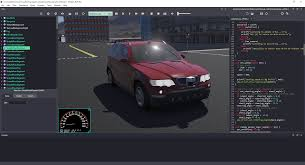

        <h2>396.DIGITAL TWINS EN SISTEMAS AUTONOMOS</h2>
        <p>Un Gemelo Digital (Digital Twin) en sistemas autónomos es una representación virtual dinámica de un activo físico, proceso o sistema que se utiliza para simular su comportamiento y optimizar su rendimiento. Utiliza datos de sensores y otras tecnologías para crear un modelo en tiempo real, permitiendo supervisar operaciones, predecir fallos, probar escenarios hipotéticos y mejorar la toma de decisiones para el sistema autónomo.</p>
        
        
        <h2>397.PROMPT</h2>
        <p>Un "prompt" en programación es un mensaje que solicita entrada al usuario. Por ejemplo, en Python puedes usar input() para mostrar un texto que guíe al usuario a proporcionar una respuesta. Validar datos ingresados es fundamental en los programas.</p>
        

        <h2>398.COPILOT</h2>
        <p>Copilot es una familia de asistentes basados en inteligencia artificial (IA) de Microsoft que utilizan modelos de lenguaje grandes (LLM) para aumentar la productividad, automatizar tareas y ofrecer asistencia conversacional e información en un contexto de chat. Estos asistentes pueden ser experiencias independientes, como Microsoft Copilot que proporciona asistencia general, o estar integrados en otros productos y servicios, como Microsoft 365 Copilot que asiste en aplicaciones de Office.</p>
        

        <h2>399.STARCODER</h2>
        <p>Es un modelo de lenguaje de programación a gran escala de código abierto, entrenado en más de 80 lenguajes de programación.</p>
        

        <h2>400.CODE LLAMA</h2>
        <p>Code Llama es un modelo para generar y analizar código, basado en Llama 2. Está diseñado para agilizar y optimizar los flujos de trabajo de los desarrolladores y facilitar el aprendizaje de la programación. Puede generar código y lenguaje natural sobre código.</p>
        

        <h2>401.PSEUDOCODIGO</h2>
        <p>El pseudocódigo es una descripción informal y estructurada de la lógica de un programa o algoritmo, que usa lenguaje natural con elementos de programación para facilitar la comprensión, pero no es ejecutable por una computadora. Software, por otro lado, se refiere a la parte no tangible de una computadora, como los programas, aplicaciones, y el sistema operativo, que dan instrucciones a la máquina para que ejecute tareas específicas.</p>
        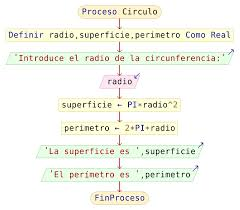
        
        <h2>402.PLUGINS</h2>
        <p>Un plugin es un componente de software que se instala en una aplicación principal (el "software") para añadirle funcionalidades específicas sin modificar el código original de esa aplicación. El software es el programa o sistema principal que ya existe, como un navegador web o un editor de imágenes, y los plugins le permiten hacer cosas nuevas, como añadir filtros a Photoshop, integrar redes sociales en un sitio web, o habilitar la reproducción de formatos de vídeo específicos.</p>
        

        <h2>403.Swarm Intelligence (Inteligencia de Enjambre)</h2>
        <p>Modelo de inteligencia distribuida inspirado en colonias de insectos, aplicado a optimización y
           sistemas autónomos.</p>
        

        <h2>404.HUMANEVAL</h2>
        <p>HumanEval es un conjunto de datos de referencia desarrollado por OpenAI que evalúa el rendimiento de los grandes modelos lingüísticos (LLM) en tareas de generación de código. Se ha convertido en una herramienta importante para evaluar las capacidades de los modelos de IA en la comprensión y generación de código.</p>
        

        <h2>405.ATL</h2>
        <p>"ATL Software" se refiere a la empresa ATL Software, una desarrolladora de software para la gestión de centros educativos y de idiomas, mientras que "ATL" en un contexto publicitario se refiere a "Above the Line", una estrategia que utiliza medios de comunicación masivos y tradicionales como la televisión o la radio para campañas de alcance amplio. Por otro lado, "ATL" también puede referirse a la Active Template Library, una biblioteca de C++ para la programación de componentes de software en Windows.</p>
        

        <h2>406.PVT</h2>
        <p>PVT (Prueba de Validación de Producción) es la etapa final del desarrollo de productos, donde se fabrican unidades que están destinadas a la venta y se realizan pruebas exhaustivas para asegurar que el producto funciona correctamente antes de iniciar la producción en masa. En el contexto del software, una Prueba de Validación de Producción se centra en probar las características principales del producto para asegurar su calidad y fiabilidad para el uso final del cliente.</p>
        
        
        <h2>407.BIDIRECCIONAL</h2>
        <p>En el software, lo bidireccional se refiere a la capacidad de un sistema para comunicarse o intercambiar información en dos direcciones simultáneamente, como en un diálogo donde ambos participantes pueden enviar y recibir mensajes. Esto permite una mayor interactividad, control y sincronización en comparación con los sistemas unidireccionales, facilitando la automatización, las pruebas de aplicaciones, la integración de datos y la comunicación en tiempo real entre diferentes componentes o sistemas.</p>
        

        <h2>408.PROFILE</h2>
        <p>"Profile" puede referirse a Profile Software, una empresa de tecnología financiera que desarrolla software, o a la acción de "creación de perfiles" (profiling) dentro de la programación, que es un análisis para medir el rendimiento de un programa. En general, cuando se habla de "Perfil" y "Software" juntos, se puede estar aludiendo a una empresa específica de software, al proceso de análisis del software o a la información que define un usuario o una aplicación.</p>
        

        <h2>409.WCET</h2>
        <p>WCET en el contexto de software se refiere al Tiempo de Ejecución en el Peor de los Casos (Worst-Case Execution Time), que es el tiempo máximo que una tarea computacional puede tardar en ejecutarse en una plataforma de hardware específica. Las herramientas WCET son herramientas de pruebas de software que analizan este tiempo para asegurar que los sistemas críticos para la seguridad cumplan con sus plazos, especialmente en industrias como la aeroespacial y la automotriz.</p>
        

        <h2>410.SIL</h2>
        <p>"SIL" es un acrónimo que puede referirse a varias cosas, por lo que su significado específico depende del contexto. Puede ser un Sistema de Información Legislativa que proporciona datos sobre el poder legislativo, un Nivel de Integridad de Seguridad que clasifica el riesgo en sistemas industriales, el acrónimo para Software in the Loop (SiL), un método para probar software en un entorno simulado de PC, una Tecnología del Lenguaje SIL que desarrolla software para idiomas, o el nombre de un software específico como el Sistema de Información Localizada en la CDMX o un software de gestión de laboratorios (LIMS).</p>
        

        <h2>411.ALGORITMO DE BUSQUEDA BINARIA</h2>
        <p>El algoritmo de búsqueda binaria es una técnica eficiente de búsqueda en software para encontrar un elemento en una lista ordenada, que funciona dividiendo repetidamente el conjunto de datos a la mitad hasta que se encuentra el elemento deseado o se agota la búsqueda. Es una estrategia de "divide y vencerás" que elimina la mitad de los elementos restantes en cada paso, lo que lo hace ideal para grandes volúmenes de datos.</p>
        
        
        <h2>412.PATRON DE DISEÑO SINGLETON</h2>
        <p>El Patrón Singleton es un patrón de diseño de software que asegura que una clase tenga una única instancia y proporciona un punto de acceso global a ella. Se usa para controlar recursos compartidos, como bases de datos o archivos, y para coordinar acciones en un sistema. Se implementa haciendo privado el constructor para evitar nuevas instancias y creando un método estático que devuelve la única instancia creada.</p>
        

        <h2>413.FACTORY METHOD</h2>
        <p>El Factory Method es un patrón de diseño creacional que define una interfaz para crear objetos, pero delega a las subclases la responsabilidad de instanciarlos. En lugar de crear objetos con un constructor directo, se utiliza un método de fábrica (Factory Method) que puede ser sobrescrito por las subclases para devolver tipos concretos de productos. Esto promueve un código más flexible, desacoplado y fácil de mantener, ya que el cliente no necesita conocer las clases concretas de los objetos que está creando.</p>
        

        <h2>414.OBSERVER</h2>
        <p>En software, "Observer" (Observador) es un patrón de diseño de comportamiento que permite a un objeto (el sujeto o publicador) notificar automáticamente a otros objetos (los observadores o suscriptores) cuando su estado cambia. Este patrón establece una relación de uno a muchos, donde el sujeto no necesita saber quiénes son sus observadores, sino que simplemente emite una notificación para que estos se actualicen, lo que fomenta un código desacoplado y reutilizable.</p>
        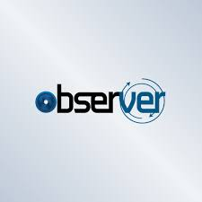

        <h2>415.STRATEGY</h2>
        <p>En el desarrollo de software, "Strategy" se refiere principalmente al Patrón de Diseño Strategy, un patrón de comportamiento que permite a un objeto cambiar su comportamiento en tiempo de ejecución mediante la sustitución de sus algoritmos. También puede referirse a una estrategia general de desarrollo de software, que es un plan para definir el diseño, desarrollo e implementación de aplicaciones de manera consistente.</p>
        

        <h2>416.DECORATOR</h2>
        <p>En software, el patrón Decorator es un patrón de diseño estructural que permite añadir dinámicamente nuevos comportamientos o funcionalidades a un objeto sin modificar su código original, envolviéndolo dentro de otros objetos especiales llamados decoradores o wrappers. Esta técnica ofrece flexibilidad para expandir la funcionalidad en tiempo de ejecución, manteniendo la estructura del objeto principal intacta y permitiendo múltiples capas de decoración para combinar diversas responsabilidades.</p>
        
        
        <h2>417.ADAPTER</h2>
        <p>En desarrollo de software, un Adaptador (Adapter) es un patrón de diseño que permite que dos interfaces de clases incompatibles trabajen juntas, actuando como un "traductor" para que una interfaz existente pueda ser utilizada por un cliente que espera una interfaz diferente. Este patrón es útil para integrar componentes o librerías de terceros con diferentes formatos o protocolos, promoviendo la reutilización del código y la modularidad sin necesidad de modificar las clases originales.</p>
        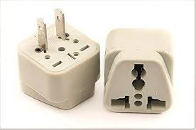

        <h2>418.FACADE</h2>
        <p>En software, Facade (o fachada) es un patrón de diseño estructural que simplifica la interacción con un sistema complejo de clases, bibliotecas o frameworks, ofreciendo una interfaz de alto nivel y más fácil de usar, enmascarando la complejidad subyacente. Actúa como una "cara" o punto de acceso único que delega las solicitudes del cliente a los objetos de los subsistemas que las cumplen, reduciendo la complejidad y el acoplamiento entre ellos.</p>
        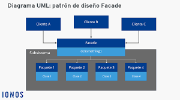

        <h2>419.COMPOSITE</h2>
        <p>En software, "Composite" se refiere al Patrón de Diseño Compuesto, una estructura que permite tratar objetos individuales y grupos de objetos como si fueran una única entidad. Este patrón agrupa objetos en jerarquías de "parte-todo", utilizando una interfaz común para objetos simples (hojas) y objetos contenedores (compuestos), lo que simplifica el código y aumenta la flexibilidad en el manejo de estructuras anidadas.</p>
        

        <h2>420.COMMAND</h2>
        <p>"Command" en software puede referirse a una instrucción específica para la computadora, un patrón de diseño que encapsula esa instrucción como un objeto para la ejecución flexible y el soporte de funciones como el "deshacer", o incluso a la tecla Command (⌘) en sistemas Macintosh.</p>
        

        <h2>421.MEDIATOR</h2>
        <p>En software, un Mediator es un patrón de diseño de comportamiento que encapsula la comunicación entre un conjunto de objetos, evitando que estos interactúen directamente. Al obligar a los objetos a colaborar a través de un único objeto mediador, se reduce el acoplamiento y la complejidad, facilitando la modificación, extensión y reutilización de los componentes individuales del sistema.</p>
        
        
        <h2>422.MEMENTO</h2>
        <p>En software, el patrón de diseño Memento es una solución de comportamiento que permite capturar y almacenar el estado interno de un objeto en un momento dado, de modo que dicho estado pueda ser restaurado más tarde sin exponer los detalles de la implementación del objeto original. Es útil para implementar funcionalidades como el botón "Deshacer" en aplicaciones de edición, donde se necesitan guardar y restaurar versiones previas del documento.</p>
        

        <h2>423.STATE</h2>
        <p>En el software, un estado es la configuración o condición actual de un objeto, aplicación o sistema en un momento dado, representando toda la información necesaria para su funcionamiento. Puede referirse a la situación dentro de un programa (como un estado de inicialización o espera), a un conjunto de propiedades que definen un objeto, o incluso al patrón de diseño State, que permite a un objeto cambiar su comportamiento según su estado interno.</p>
        

        <h2>424.TEMPLATE METHOD</h2>
        <p>El patrón de diseño Template Method define la estructura general de un algoritmo en una clase base (la "plantilla"), permitiendo a las subclases personalizar o sobrescribir ciertos pasos sin modificar el esqueleto completo del algoritmo. Su propósito principal es reutilizar código y definir la estructura de un algoritmo de forma genérica, para luego permitir que las clases derivadas implementen las partes específicas de ese algoritmo.</p>
        

        <h2>425.VISITOR</h2>
        <p>"Visitor en software" puede referirse al Patrón Visitor, un patrón de diseño que permite añadir nuevas operaciones a un conjunto de clases sin modificar su código fuente, o a un Sistema de Gestión de Visitantes (VMS), que es un tipo de software para registrar y controlar el acceso de personas a un edificio o propiedad. La interpretación depende del contexto en el que se use el término.</p>
        

        <h2>426.UNIT TESTING</h2>
        <p>El Unit Testing o pruebas unitarias es una técnica de desarrollo de software que consiste en probar la unidad funcional más pequeña de código, como una función, método o componente, de forma aislada para verificar que funcione correctamente y cumpla con su propósito. El objetivo principal es detectar y corregir errores de manera temprana en el proceso de desarrollo, lo que mejora la calidad del código, facilita el mantenimiento y la refactorización, y asegura un funcionamiento confiable del software.</p>
        
        
        <h2>427.SMOKE TESTING</h2>
        <p>El Smoke Testing (Prueba de Humo) en software es una verificación rápida y superficial de las funcionalidades críticas de una nueva compilación o versión de un programa para determinar si es lo suficientemente estable como para continuar con pruebas más profundas. Su propósito es identificar defectos mayores que impiden el uso básico del software, evitando así que el equipo de control de calidad invierta tiempo y recursos en una compilación inestable.</p>
        

        <h2>428.PRUEBA DE INSTALACION</h2>
        <p>La prueba de instalación en software es una fase de prueba que verifica que el programa se pueda instalar, configurar y desinstalar correctamente en diferentes sistemas y configuraciones sin problemas, asegurando que la funcionalidad del software no se vea afectada y que el proceso sea sencillo para el usuario final.</p>
        

        <h2>429.PRUEBA DE CONFIGURACION</h2>
        <p>La Prueba de configuración en software es una práctica que verifica cómo una aplicación funciona en una amplia gama de entornos de hardware, sistemas operativos, navegadores y otras configuraciones de software. El objetivo principal es asegurar que el software sea compatible y funcione correctamente en diferentes combinaciones de estos elementos, identificando problemas de compatibilidad y garantizando una experiencia de usuario consistente independientemente de la configuración.</p>
        

        <h2>430.PRUEBA DE MANTENIMIENTO</h2>
        <p>La prueba de mantenimiento en software es el proceso de evaluar y actualizar el software después de que ha sido desplegado para identificar y corregir problemas, asegurar su funcionamiento continuo y adaptarse a los cambios. Consiste en verificar los cambios realizados al código, tanto en las partes modificadas como en las que no lo fueron, para garantizar que el sistema siga siendo confiable, eficiente y seguro tras las modificaciones o la adición de nuevas funcionalidades.</p>
        

        <h2>431.CASO DE USO</h2>
        <p>En software, un caso de uso describe un conjunto de interacciones entre un actor (un usuario o sistema externo) y un sistema para lograr un objetivo específico, mostrando cómo funciona la utilidad del sistema desde el punto de vista del usuario. Se crea para agrupar requisitos comunes por rol o tarea, detallando las funciones que el sistema debe ejecutar y el proceso para conseguirlas, sirviendo como base para el desarrollo y validación de software.</p>
        
        
        <h2>432.HISTORI DE USUARIO</h2>
        <p>Una historia de usuario es una descripción informal y concisa de una característica de software, escrita desde la perspectiva del usuario final, que explica lo que el usuario desea lograr y el valor que obtendrá al usar esa función. Estas historias suelen seguir un formato simple: "Como [tipo de usuario], quiero [un objetivo] para que [un beneficio]".</p>
        

        <h2>433.Computación Ubicua</h2>
        <p>Es un paradigma en el que la tecnología está tan integrada en la vida cotidiana que se vuelve casi invisible. Los sistemas se diseñan para operar de manera discreta en objetos comunes, como relojes inteligentes o electrodomésticos conectados, permitiendo interacción constante sin que el usuario lo perciba directamente.</p>
        

          <h2>434.Middleware</h2>
        <p>Es una capa de software que actúa como intermediaria entre sistemas, aplicaciones o bases de datos, facilitando la comunicación. Permite que dos programas diferentes, que normalmente no serían compatibles, puedan intercambiar información y trabajar en conjunto.</p>
        

          <h2>435.Ontología en Sistemas</h2>
        <p>Es una representación estructurada del conocimiento en un dominio específico, definiendo conceptos, relaciones y reglas. Se utiliza en inteligencia artificial y sistemas semánticos para que las máquinas puedan “entender” significados más allá de simples datos.</p>
        

          <h2>436.Normalización de Datos</h2>
        <p>Es un proceso en diseño de bases de datos que organiza la información en tablas para reducir redundancia y mejorar la consistencia. Aunque no siempre se aplica al 100%, es fundamental para mantener la calidad de la información.</p>
        

          <h2>437.Sistema Embebido</h2>
        <p>Es un sistema de cómputo diseñado para realizar funciones específicas dentro de un dispositivo mayor. Por ejemplo, el software que controla una lavadora, un automóvil o un marcapasos. No está hecho para tareas generales como una computadora, 
            sino para un propósito concreto.</p>
        


          <h2>438.Minería de Procesos</h2>
        <p>Es una técnica que analiza los registros de eventos en sistemas de información para descubrir cómo funcionan realmente los procesos dentro de una organización, detectando ineficiencias
             y posibles mejoras.</p>
        


          <h2>439.Trazabilidad de Requisitos</h2>
        <p>Es la capacidad de seguir cada requerimiento del sistema a lo largo de todo su ciclo de vida, desde su definición inicial hasta su implementación y validación. Asegura que nada se pierda en el camino y que los 
            objetivos se cumplan.</p>
        


          <h2>440.Big-O Notation</h2>
        <p>Es una notación matemática que mide la eficiencia de un algoritmo en términos de tiempo y espacio, especialmente a medida que crece la cantidad de datos. Es clave en análisis de algoritmos porque permite comparar soluciones más 
            allá de su implementación.</p>
        

           <h2>441.Fog Computing</h2>
        <p>Es un modelo intermedio entre la computación en la nube y los dispositivos locales. Procesa los datos más cerca de donde se generan (enrutadores, gateways, etc.) antes de enviarlos a la nube, reduciendo latencia y
             consumo de ancho de banda.</p>
        

           <h2>442.Computación Morfológica</h2>
        <p>Enfoque de procesamiento de datos basado en operaciones matemáticas de la morfología, 
          usado en visión artificial..</p>
        

           <h2>443.Consenso Bizantino Tolerante a Fallos (BFT)</h2>
        <p>Algoritmo de consenso en sistemas distribuidos que permite operar incluso si algunos nodos actúan de manera maliciosa
           o defectuosa.</p>
        

           <h2>444.Data Lake</h2>
        <p>Es un repositorio que almacena grandes volúmenes de datos en su formato original (estructurados, semiestructurados y no estructurados) hasta que sean necesarios. A diferencia de un Data Warehouse, 
            no impone un modelo fijo desde el inicio.</p>
        

           <h2>445.Arquitectura Hexagonal</h2>
        <p>Es un estilo de diseño de software que busca separar el núcleo de la aplicación de las dependencias externas (bases de datos, interfaces, APIs). Esto permite que el sistema sea más adaptable y 
            fácil de mantener.</p>
        

           <h2>446.Patrón de Diseño Observer</h2>
        <p>Es un patrón de programación en el que un objeto (sujeto) notifica automáticamente a otros objetos (observadores) cuando cambia su 
            estado, lo cual es muy usado en sistemas con interfaces gráficas o notificaciones en tiempo real.</p>
        

           <h2>447.Machine-to-Machine (M2M)</h2>
        <p>Es la comunicación directa entre dispositivos sin intervención humana. Por ejemplo, sensores en una fábrica que envían datos a un sistema de control
             para ajustar automáticamente la producción.</p>
        

           <h2>448.Data Governance</h2>
        <p>Es el conjunto de políticas, procesos y estándares que aseguran la calidad, seguridad y correcta gestión de los datos en una organización. Va más allá de almacenarlos: busca que los datos tengan valor real para la 
            toma de decisiones.</p>
        

           <h2>449.Orquestación de Servicios</h2>
        <p>Es la coordinación automatizada de múltiples servicios o procesos para trabajar juntos en una secuencia lógica. Se utiliza mucho en sistemas basados en microservicios y flujos de trabajo en la nube.</p>
        

           <h2>450.Carga Balanceada</h2>
        <p>Es la distribución de las solicitudes de los usuarios entre varios servidores para evitar sobrecarga en uno solo. Aumenta la velocidad de respuesta y la disponibilidad del sistema.</p>
        

          <h2>451.Sistema Sociotécnico</h2>
        <p>Es una visión que entiende que los sistemas no son solo tecnología, sino también personas y procesos sociales. Considera que un sistema exitoso depende tanto de lo técnico como de la 
            cultura y las interacciones humanas.</p>
        

          <h2>452.Sharding en Bases de Datos</h2>
        <p>Técnica de partición horizontal que distribuye los datos en diferentes nodos para aumentar 
          escalabilidad..</p>
        

          <h2>453.Arquitectura Limpia (Clean Architecture)</h2>
        <p>Es un enfoque de diseño que separa la lógica de negocio de los detalles técnicos, asegurando que el sistema sea independiente de frameworks, bases de datos y librerías externas.</p>
        

       <h2>454. SLA (Service Level Agreement)</h2>
       <p>Un SLA es un acuerdo formal entre un proveedor de servicios y un cliente, donde se definen los niveles de calidad, disponibilidad, tiempos de respuesta y responsabilidades en la prestación del servicio. Su objetivo es asegurar que las expectativas del cliente se cumplan y que existan métricas claras para evaluar el desempeño.</p>
       

          <h2>455.Requisitos ambiguos</h2>
        <p> Aquellos que permiten múltiples interpretaciones y deben evitarse en análisis de software.</p>
        

          <h2>456.Alta Disponibilidad (HA)</h2>
        <p>Es la capacidad de un sistema de mantenerse operativo casi todo el tiempo, reduciendo al mínimo las caídas o interrupciones mediante redundancia, backups y mecanismos de recuperación.</p>
        

          <h2>457.Sistemas Tolerantes a Fallos</h2>
        <p>Son sistemas diseñados para continuar funcionando incluso cuando uno o varios de sus componentes fallan. Se usan en entornos críticos como aviación, medicina o banca.</p>
        

          <h2>458.Monitoreo Proactivo</h2>
        <p>Es la práctica de vigilar continuamente el desempeño de un sistema para detectar problemas antes de que ocurran fallos graves. Incluye alertas automáticas y análisis predictivo.</p>
        

          <h2>459.Arquitectura Basada en Eventos</h2>
        <p>Es un estilo de diseño en el que los sistemas se comunican reaccionando a eventos (acciones que ocurren), en lugar de seguir flujos lineales. Es clave en aplicaciones en tiempo real como notificaciones móviles</p>
        

          <h2>460.Microkernel</h2>
        <p>Es un tipo de arquitectura de sistemas operativos que mantiene un núcleo mínimo encargado de lo esencial, delegando otros servicios a módulos externos. Permite más flexibilidad y estabilidad.</p>
        

          <h2>461.Refactorización</h2>
        <p>Es el proceso de mejorar el código de un sistema sin cambiar su funcionalidad, con el fin de hacerlo más claro, eficiente y mantenible.</p>
        

          <h2>462.Pruebas de Estrés</h2>
        <p>Son evaluaciones que someten al sistema a cargas extremas de trabajo para verificar su resistencia y comportamiento en situaciones límite.</p>
        

          <h2>463.Desacoplamiento</h2>
        <p>Es la práctica de diseñar los componentes de un sistema para que dependan lo menos posible unos de otros. Esto facilita mantenimiento, escalabilidad y pruebas.</p>
        

          <h2>464.Prototipo navegable</h2>
        <p>Versión parcial de una aplicación que permite al usuario interactuar con algunas funciones.</p>
        

          <h2>465.Kanban en Sistemas</h2>
        <p>Es un método visual para gestionar tareas y flujos de trabajo mediante tableros que muestran qué se está haciendo, qué está pendiente y qué está terminado.</p>
        

          <h2>466.Sistemas Auto-Organizados</h2>
        <p>Son sistemas que, sin un control central, logran adaptarse y reorganizarse por sí mismos en respuesta a cambios del entorno. Ejemplo: las redes peer-to-peer.</p>
        

          <h2>467.Computación Cuántica</h2>
        <p>Es un paradigma que usa principios de la mecánica cuántica para procesar información de manera radicalmente diferente a las computadoras tradicionales, con un enorme potencial en criptografía y simulaciones complejas.</p>
        

          <h2>468.Contenedores en Sistemas</h2>
        <p>Son entornos ligeros y portables que empaquetan aplicaciones y sus dependencias, asegurando que se ejecuten igual en cualquier infraestructura. Ejemplo: Docker.</p>
        

          <h2>469.Orquestación de Contenedores</h2>
        <p>Es la gestión automatizada de múltiples contenedores en producción, asegurando balanceo de carga, escalabilidad y disponibilidad. Ejemplo: Kubernetes.</p>
        

          <h2>470.Cómputo Autónomo</h2>
        <p>Es un enfoque en el que los sistemas se gestionan solos, detectando problemas y resolviéndolos sin intervención humana. Busca reducir la complejidad en la administración de TI. </p>
        

          <h2>471.Sistemas Basados en Conocimiento</h2>
        <p>Son sistemas que utilizan reglas, bases de conocimiento y razonamiento lógico para resolver problemas, en lugar de depender solo de datos estadísticos</p>
        

          <h2>472.Técnica Heurística en Sistemas</h2>
        <p>Es un método para encontrar soluciones aproximadas cuando no es posible o práctico hallar una solución exacta. Se aplica en búsqueda de rutas, optimización y toma de decisiones.</p>
        

          <h2>473.Análisis de Impacto en Sistemas</h2>
        <p>Es el estudio de las consecuencias que tendría un cambio o falla en un sistema sobre otros sistemas y procesos relacionados.</p>
        

          <h2>474.Escalabilidad Horizontal</h2>
        <p>Es la capacidad de un sistema de aumentar su rendimiento agregando más máquinas o nodos, en lugar de mejorar solo el hardware existente.</p>
        

          <h2>475.Escalabilidad Vertical</h2>
        <p>Es el aumento del rendimiento de un sistema al mejorar la capacidad de un solo servidor (más memoria, procesador, etc.), en lugar de añadir más equipos</p>
        

          <h2>476.Data Sharding</h2>
        <p>Es una técnica de bases de datos que divide la información en fragmentos distribuidos en varios servidores, permitiendo manejar grandes volúmenes de datos de manera eficiente.</p>
        

          <h2>477.Integración Continua (CI)</h2>
        <p>Es una práctica de desarrollo en la que el código se integra y prueba automáticamente cada vez que se hacen cambios, asegurando calidad y detección temprana de errores.</p>
        

          <h2>478.Despliegue Continuo (CD)</h2>
        <p>Es la práctica que permite entregar automáticamente nuevas versiones de un sistema en producción, asegurando actualizaciones rápidas y frecuentes.</p>
        

          <h2>479.Sistemas Legacy</h2>
        <p>Son sistemas antiguos que todavía funcionan en una organización, aunque usen tecnologías desactualizadas. Suelen ser difíciles de reemplazar porque contienen procesos críticos o datos valiosos.</p>
        

          <h2>480.Blue-Green Deployment</h2>
        <p>Es una estrategia de despliegue que mantiene dos entornos idénticos: uno activo (blue) y otro de prueba (green). Cuando se aprueba la nueva versión, se cambia el tráfico al entorno actualizado sin afectar a los usuarios.</p>
        

          <h2>481.Cluster de Servidores</h2>
        <p>Es un conjunto de servidores conectados que trabajan juntos como si fueran uno solo. Su objetivo es aumentar la disponibilidad,
             el rendimiento y la tolerancia a fallos de los sistemas.</p>
        

        <h2>482.Balanceador de Carga</h2>
        <p>Es un componente de software o hardware que distribuye automáticamente el tráfico entrante entre varios servidores, evitando que uno solo se sobrecargue y
             mejorando la eficiencia del sistema.</p>
        

        <h2>483.Escalado Automático (Autoscaling)</h2>
        <p>Es una función en entornos de nube que aumenta o reduce automáticamente los recursos de un sistema (servidores, almacenamiento, procesos) según la demanda del momento.</p>
        

        <h2>484.Monitoreo en Tiempo Real</h2>
        <p>Es la práctica de observar continuamente el estado y desempeño de un sistema, mostrando métricas actualizadas al instante para detectar problemas antes de que se vuelvan críticos.</p>
        

        <h2>485.ETL (Extract, Transform, Load)</h2>
        <p>Es el proceso que extrae datos de diferentes fuentes, los transforma en un formato útil y los carga en un sistema central como un Data Warehouse.</p>
        

        <h2>486.OLAP (Online Analytical Processing)</h2>
        <p>Es una tecnología que permite analizar grandes cantidades de datos desde diferentes perspectivas, facilitando la toma de decisiones empresariales.</p>
        

        <h2>487.Data Mining</h2>
        <p>Es el proceso de explorar grandes volúmenes de datos para descubrir patrones, correlaciones y tendencias ocultas. Se aplica en marketing, finanzas, salud y seguridad.</p>
        

        <h2>488.Análisis Predictivo</h2>
        <p>Va un paso más allá del análisis predictivo: no solo predice lo que puede ocurrir, sino que recomienda acciones para optimizar los resultados.</p>
        

        <h2>489.Business Intelligence (BI)</h2>
        <p>Es el conjunto de tecnologías y procesos que permiten convertir datos en información útil para la toma de decisiones estratégicas en una organizació</p>
        

        <h2>490.Data Fabric</h2>
        <p>Es una arquitectura que conecta diferentes fuentes de datos (estructuradas y no estructuradas) en un solo marco de gestión, facilitando acceso y control en entornos híbridos</p>
        

          <h2>491.Low-Code Development</h2>
        <p>Es una metodología de desarrollo que utiliza interfaces gráficas y configuraciones visuales para construir aplicaciones con poca o ninguna programación manual.</p>
        

          <h2>492.No-Code Development</h2>
        <p>Similar al low-code, pero permite crear aplicaciones sin escribir código, ideal para usuarios no técnicos.</p>
        

          <h2>493.DataOps</h2>
        <p>Es una metodología que combina prácticas ágiles y DevOps para la gestión eficiente de datos, asegurando calidad y velocidad en su procesamiento.</p>
        

          <h2>494.MLOps</h2>
        <p>Es la aplicación de principios de DevOps al ciclo de vida de modelos de machine learning, garantizando que puedan entrenarse, desplegarse y mantenerse de forma continua y escalable</p>
        

          <h2>495.Chaos Engineering</h2>
        <p>Es la práctica de probar un sistema introduciendo fallos intencionales (apagones, cortes de red) para analizar su resiliencia y prepararse para fallos reales.</p>
        

          <h2>496.Entrevista estructurada</h2>
        <p>Técnica de levantamiento de requisitos basada en preguntas definidas previamente.</p>
        

          <h2>497.Alta Concurrencia</h2>
        <p>Se refiere a la capacidad de un sistema de manejar múltiples usuarios o procesos al mismo tiempo sin perder estabilidad ni velocidad.</p>
        

          <h2>498.Análisis de Cuellos de Botella</h2>
        <p>Es la identificación de puntos dentro de un sistema que limitan su rendimiento general, como procesos lentos, servidores sobrecargados o bases de datos ineficientes.</p>
        

          <h2>499.Cómputo Paralelo</h2>
        <p>Es la ejecución simultánea de múltiples procesos en diferentes núcleos o máquinas, con el fin de acelerar tareas complejas.</p>
        
                 
         <h2>500.QUBIT</h2>
        <p>Así como un bit binario es la unidad básica de información en la computación clásica (o tradicional), un cúbit (o bit cuántico) es la unidad básica de información en la computación cuántica.</p>
        

        <h2>501.PRODUCT OWNER</h2>
        <p>Un Product Owner es el responsable en un equipo de desarrollo de software ágil (especialmente en Scrum) de maximizar el valor del producto y asegurar que cumpla las necesidades de los usuarios y el mercado. Sus funciones principales incluyen definir la visión del producto, gestionar y priorizar el Product Backlog (lista de requisitos y funcionalidades), y actuar como el principal nexo entre los interesados del negocio y el equipo de desarrollo.</p>
        

        <h2>502.DOCUMENTACION DE PROYECTO</h2>
        <p>La documentación de proyecto en software es un conjunto de materiales escritos y visuales que describen, desde la planificación inicial hasta la operación y mantenimiento, cómo se desarrolla un software. Su propósito es proporcionar información esencial a los desarrolladores, usuarios y otros interesados para facilitar la comprensión, el uso, el mantenimiento y la colaboración durante todo el ciclo de vida del proyecto.</p>
        

        <h2>503.LECCIONES APRENDIDAS (POST MORTEM)</h2>
        <p>En el desarrollo de software, las lecciones aprendidas o análisis post-mortem son revisiones retrospectivas realizadas al final de un proyecto o después de un incidente, como una falla, para identificar qué funcionó bien y qué salió mal. Su objetivo es aprender de los errores y éxitos para mejorar la planificación y ejecución de futuros proyectos, fomentando la transparencia, la colaboración y la mejora continua del proceso.</p>
        

        <h2>504.PROJECT CHARTER (ACTA DE CONSTITUCION DEL PROYECTO)</h2>
        <p>En desarrollo de software, el Project Charter o Acta de Constitución del Proyecto es un documento de alto nivel que formaliza el proyecto y otorga autoridad al director del proyecto para ejecutarlo, presentando sus objetivos, alcance, partes interesadas clave, entregables, presupuesto y riesgos principales de manera concisa para obtener la aprobación de los interesados clave.</p>
        
        
        <h2>505.HERRAMIENTAS DE GESTION</h2>
        <p>Las herramientas de gestión de software son aplicaciones y programas informáticos que ayudan a las organizaciones a planificar, organizar, ejecutar y controlar el desarrollo de software y otros procesos empresariales, optimizando costos, plazos y rendimiento técnico. Facilitan la gestión de proyectos, la automatización de tareas, el acceso y análisis de información, y la mejora de la calidad y eficiencia en las operaciones de una empresa.</p>
        

        <h2>506.CYPRESS</h2>
        <p>Cypress es un framework de código abierto y de testing automatizado para aplicaciones web modernas, que permite a desarrolladores y equipos de control de calidad escribir y ejecutar pruebas de manera rápida y eficiente. Su arquitectura única, que se ejecuta dentro del navegador en tiempo real, le da acceso directo al DOM, al código y a las APIs del navegador, lo que facilita las pruebas de extremo a extremo (E2E), de componentes e incluso de integración y unitarias. Cypress ofrece características como la espera automática de elementos, recargas en tiempo real, captura automática de pantallas y videos, y un dashboard para la depuración, lo que simplifica la identificación de problemas y la mejora de la calidad de las aplicaciones web.</p>
        

        <h2>507.FUZZ TESTING</h2>
        <p>El Fuzz testing (o fuzzing) es una técnica automatizada de pruebas de software que consiste en inyectar grandes volúmenes de datos aleatorios, malformados o inesperados en una aplicación para encontrar errores de codificación, vulnerabilidades de seguridad y otros fallos que no se detectan con pruebas convencionales. Funciona como una prueba de caja negra, buscando hacer que el sistema falle para identificar defectos que podrían ser explotados por hackers, y se utiliza para mejorar la seguridad y estabilidad del software.</p>
        

        <h2>508.TEST DE ACEPTACION DEL USUARIO (UAT)</h2>
        <p>El Test de Aceptación del Usuario (UAT) es la fase final del proceso de pruebas de software, donde los usuarios finales o clientes validan que el sistema cumple con sus necesidades y requisitos comerciales en un entorno realista antes de su lanzamiento oficial. Se enfoca en la validación funcional y la experiencia del usuario, asegurando que el software sea útil y cumpla su propósito en escenarios de trabajo diarios, más allá de simplemente corregir errores técnicos.</p>
        

        <h2>509.PRUEBAS DE ACCESIBILIDAD (A11Y)</h2>
        <p>Las pruebas de accesibilidad (A11y) son un proceso para evaluar software, sitios web y aplicaciones y asegurar que puedan ser utilizados de manera efectiva por personas con diversas discapacidades (visuales, auditivas, motoras, cognitivas, etc.). Esto implica experimentar la aplicación desde la perspectiva del usuario, utilizando pruebas manuales, automatizadas y con usuarios reales, para identificar barreras y oportunidades de mejora.</p>
        
        
        <h2>510.Mesa de ayuda multicanal</h2>
        <p>Soporte TIC disponible por teléfono, correo, chat o portal web.</p>
        

        <h2>511.TEST FLAKY</h2>
        <p>Un "test flaky" (prueba inestable o defectuosa) es una prueba de software automatizada que arroja resultados inconsistentes (pasa o falla) sin que se realicen cambios en el código ni en el entorno de ejecución. Esta naturaleza no determinista hace que la prueba sea poco fiable, genera confusión en los equipos de desarrollo, retrasa las entregas y puede enmascarar errores reales en el código.</p>
        

        <h2>512.USO DE WIKIS INTERNOS</h2>
        <p>El uso de wikis internos en el software es la implementación de un software de wiki, una plataforma colaborativa para almacenar, compartir y crear conocimiento de forma centralizada dentro de una organización. Estas herramientas se conocen como wikis corporativas o wikis de intranet y permiten a los empleados contribuir colectivamente a la base de conocimiento de la empresa, creando una fuente única de información sobre políticas, procedimientos, manuales y otros datos internos.</p>
        

        <h2>513.COMENTARIOS DE CODIGO SIGNIFICATIVOS</h2>
        <p>Los comentarios de código significativos son anotaciones dentro del código fuente que explican el propósito, la lógica o la intención de partes del programa, pero que son ignoradas por el compilador o intérprete. Proporcionan contexto y claridad, no solo para el programador original, sino también para otros desarrolladores, facilitando la comprensión, el mantenimiento, la depuración y la colaboración. Un comentario significativo explica el "porqué" del código, no solo el "qué", añadiendo valor más allá de la simple descripción de una función.</p>
        

        <h2>514.DOCUMENTAR FLUJOS DE USUARIO</h2>
        <p>Documentar flujos de usuario en software significa crear una representación visual de los pasos que un usuario sigue para completar una tarea específica dentro de una aplicación o sitio web, utilizando diagramas o mapas para ilustrar su recorrido y las decisiones tomadas. Esta documentación ayuda a los equipos de diseño y producto a comprender y optimizar la experiencia del usuario, asegurando que el software sea intuitivo y eficiente.</p>
        
        
        <h2>515.ONBOARDING</h2>
        <p>El "onboarding" en software se refiere al proceso digital y automatizado para integrar nuevos empleados, clientes o usuarios a una empresa a través de herramientas tecnológicas, facilitando la firma de documentos, la capacitación y el acceso a plataformas y sistemas. Este proceso digital, que puede durar hasta un año, ayuda a los nuevos integrantes a familiarizarse rápidamente con la cultura y operaciones de la empresa, mejorando su experiencia y acelerando su productividad.</p>
        

        <h2>516.LIVE DOCS</h2>
        <p>"Live Docs" (o documentos en vivo) en software se refiere a documentos accesibles, editables y colaborativos en tiempo real a través de un navegador web, donde los cambios se guardan automáticamente y se reflejan al instante para todos los usuarios. Esta tecnología permite la coedición simultánea, el seguimiento de versiones y la colaboración fluida, transformando la forma en que los equipos trabajan juntos en un documento o sistema de gestión.</p>
        

        <h2>517.MANUAL DE USUARIO FINAL</h2>
        <p>Un Manual del Usuario Final en software es una guía detallada diseñada para ayudar a los usuarios no técnicos a entender y utilizar eficientemente un producto o servicio de software. Este documento proporciona instrucciones paso a paso para tareas como la instalación, configuración y uso de funciones, y ofrece soluciones a problemas comunes, permitiendo al usuario resolver dudas de forma autónoma.</p>
        

        <h2>518.GUIAS DE INSTALACION</h2>
        <p>Una Guía de Instalación en software es un manual que proporciona instrucciones detalladas y paso a paso para que los usuarios puedan instalar, configurar y, en algunos casos, desinstalar o actualizar un programa informático o un producto de manera exitosa. Estas guías suelen incluir información sobre los requisitos previos, pasos del proceso, consejos para solucionar problemas comunes y detalles sobre las licencias de software, todo con el objetivo de mejorar la experiencia del usuario y reducir la necesidad de soporte técnico.</p>
        

        <h2>519. MANUAL DE DESPLIEGUE</h2>
        <p>Un Manual de Despliegue en software es un documento que detalla y planifica el proceso para entregar una aplicación de software desde el entorno de desarrollo a un entorno de producción, haciéndola disponible para los usuarios finales. Este documento incluye la configuración de hardware y software, las estrategias para la instalación y el lanzamiento, y las actividades necesarias para que el sistema sea utilizado de manera efectiva y controlada.</p>
        
        
        <h2>520.DOXYGEN</h2>
        <p>Doxygen es una herramienta de código abierto y multiplataforma que genera automáticamente documentación a partir de comentarios con un formato específico dentro del código fuente de diversos lenguajes de programación, como C++, Java y Python. Esta documentación se presenta en formatos como HTML, PDF o XML, ayudando a mantener el código legible, comprensible y fácil de usar.</p>
        

        <h2>521.C4 MODEL</h2>
        <p>El Modelo C4 es un marco para ilustrar la arquitectura de sistemas de software en cuatro niveles de abstracción: Contexto (Context), Contenedores (Containers), Componentes (Components) y Código (Code). Creado por Simon Brown, este modelo proporciona un lenguaje común y una serie de diagramas jerárquicos que ayudan a los equipos a comprender, comunicar y alinearse en la arquitectura de un sistema de manera más efectiva, desde una visión general hasta los detalles de implementación.</p>
        

        <h2>522.GLOSARIO TECNICO</h2>
        <p>Un glosario técnico en software es una lista organizada de términos específicos del mundo del software y la informática, que incluye definiciones claras para asegurar una comprensión común entre los diferentes usuarios, como desarrolladores, diseñadores y usuarios finales. Su propósito es aclarar la jerga técnica y los acrónimos propios de esta área especializada, facilitando así la comunicación y el entendimiento dentro de un proyecto o para el público general.</p>
        

        <h2>523.DOCUMENTACION MULTILINGUE</h2>
        <p>La documentación multilingüe en software se refiere a la creación y gestión de materiales informativos y de interfaz de usuario en varios idiomas, con el objetivo de que los usuarios puedan interactuar con el software en su lengua materna. Esto implica no solo la traducción del texto, sino también la adaptación cultural y el formato adecuado para cada idioma y región, separando la información traducida de la lógica central del software para facilitar el mantenimiento y la actualización.</p>
        

        <h2>524.PRIVACIDAD DE DATOS</h2>
        <p>La privacidad de datos en software se refiere a los principios, prácticas y mecanismos de un programa que protegen la información personal de los usuarios, permitiéndoles tener control sobre cómo se recopilan, usan, almacenan y comparten sus datos. Esto implica asegurar que los datos no sean accesibles sin autorización, cumplir con normativas de protección y garantizar que los usuarios comprendan y consientan el uso de su información.</p>
        
        
        <h2>525.RGPD (REGLAMENTO GENERAL DE PROTECCION DE DATOS)</h2>
        <p>El RGPD en software se refiere al cumplimiento de las normas del Reglamento General de Protección de Datos de la UE, que exige que cualquier software que procese datos personales de ciudadanos de la UE lo haga de manera segura y transparente. Esto incluye la aplicación de principios como la minimización de datos, la seguridad, y el respeto a los derechos de los usuarios sobre su información, así como la implementación de medidas técnicas como el cifrado y el control de acceso.</p>
        

        <h2>526.VIES EN INTELIGENCIA ARTIFICIAL</h2>
        <p>El sesgo de IA, también llamado sesgo de aprendizaje automático o sesgo de algoritmo, se refiere a la aparición de resultados sesgados debido a sesgos humanos que distorsionan los datos de entrenamiento originales o el algoritmo de IA, lo que genera resultados distorsionados y resultados potencialmente dañinos.</p>
        

        <h2>527.INCLUSION DIGITAL</h2>
        <p>La inclusión digital en software se refiere al diseño de aplicaciones y tecnologías que sean accesibles y utilizables por todas las personas, independientemente de sus capacidades, origen socioeconómico o ubicación. El objetivo es eliminar las barreras de la brecha digital (económicas, geográficas, de género, etc.) para que todos puedan participar y beneficiarse de la sociedad y economía digital, lo que implica crear software con interfaces amigables, contenido comprensible y adaptado a diversas necesidades.</p>
        

        <h2>528.NEUTRALIDAD TECNOLOGICA</h2>
        <p>La neutralidad tecnológica en software es el principio que garantiza la libertad de las personas, organizaciones y el Estado para elegir y desarrollar el software más adecuado a sus necesidades, sin favorecer o restringir una tecnología en particular. Implica que no se deben imponer o preferir tecnologías específicas (como un sistema operativo o lenguaje de programación) en el desarrollo de sistemas informáticos o para la provisión de servicios digitales, a menos que existan razones técnicas o legales válidas.</p>
        

        <h2>529.IMPACTO AMBIENTA DEL SOFTWARE</h2>
        <p>El "impacto ambiental del software en el software" se refiere a los efectos negativos del ciclo de vida del software en el medio ambiente, como el consumo de energía de centros de datos, la generación de residuos electrónicos por la obsolescencia del hardware, y el uso de minerales y recursos naturales para su fabricación, pero también puede ser positivo al usar herramientas de software para gestionar y reducir dichos impactos ambientales.</p>
        
        
        <h2>530.GREEN IT</h2>
        <p>Green IT en software se refiere al diseño, desarrollo y uso de aplicaciones y sistemas informáticos de manera que minimicen el impacto ambiental y el consumo de energía, al mismo tiempo que se optimizan los recursos. Esto incluye crear software más eficiente que requiera menos potencia de cálculo, reducir la "huella de carbono" de los centros de datos, y fomentar prácticas de desarrollo sostenible.</p>
        

        <h2>531.SOBERANIA DE DATOS</h2>
        <p>La soberanía de datos es la autoridad legal que tiene un país o una región para regular los datos que se crean, recopilan o almacenan en su jurisdicción. En el contexto del software, implica que las empresas que operan en un país deben cumplir con las leyes de privacidad y acceso de ese país para los datos de sus ciudadanos o residentes, dictando dónde se almacenan, quién los puede ver y cómo se procesan.</p>
        

        <h2>532.TRANSPARENCIA DE ALGORITMOS</h2>
        <p>La transparencia algorítmica es el principio por el que los factores que influencian las decisiones tomadas por los algoritmos tendrían que ser visibles, o transparentes, a las personas que utilizan, regulan, y son afectadas por sistemas que emplean estos algoritmos.</p>
        

        <h2>533.CODIGO DE ETICA DE ACM</h2>
        <p>El Código de Ética de ACM es una guía de principios para la conducta profesional de los profesionales de la informática, desarrollada por la Association for Computing Machinery (ACM). Su objetivo es orientar a los profesionales para que tomen decisiones éticas y responsables, fomentando la confianza y la excelencia en la industria tecnológica al establecer estándares de comportamiento profesional y personal.</p>
        

         <h2>534. Help Desk TIC</h2>
    <p>La escalabilidad horizontal, o "escalado hacia afuera", es la capacidad de un sistema de software para manejar una mayor carga de trabajo aumentando el número de máquinas o nodos (servidores) que componen el sistema, distribuyendo así la carga entre ellos. Este enfoque, que puede incluir la adición o eliminación de nodos según la demanda, mejora el rendimiento y la capacidad de una aplicación al aumentar su volumen de procesamiento o tráfico sin necesidad de mejorar el hardware de un único servidor.</p>
      

        <h2>535.Service Desk TIC</h2>
        <p>es un punto de contacto centralizado que gestiona los incidentes y solicitudes de servicio relacionados con la tecnología de la información</p>
        

        <h2>536.LATENCIA (LATENCY)</h2>
        <p>La latencia de software es el retraso medible en milisegundos (ms) que ocurre entre una acción iniciada por un usuario y la respuesta de una aplicación o sistema, afectando desde la conversión de señales de audio hasta la navegación web y el acceso a datos. Se manifiesta como un retardo en la comunicación, procesamiento y transferencia de datos, y factores como el tamaño del búfer, la distancia física, la congestión de la red y la complejidad del procesamiento informático contribuyen a aumentarla.</p>
        

        <h2>537.Gestión del conocimiento TIC:</h2>
        <p>Estrategias para documentar, compartir y usar información tecnológica.</p>
        

        <h2>538.CUELLOS DE BOTELLA</h2>
        <p>Un cuello de botella en software es un componente de un sistema o aplicación que limita el rendimiento general, actuando como un punto de congestión que ralentiza el flujo de trabajo y la capacidad del sistema para funcionar al máximo de su potencial. Se identifica cuando la velocidad de un componente (como una base de datos o un servicio web) no puede seguir el ritmo de otros componentes más rápidos, provocando lentitud, tiempos de respuesta prolongados y una experiencia de usuario deficiente.</p>
        

        <h2>539.PROFILING DE APLICACIONES</h2>
        <p>En ingeniería de software el análisis de rendimiento, comúnmente llamado profiling o perfilaje, son herramientas de software utilizadas para analizar y medir el rendimiento de una aplicación o programa.</p>
        
        
        <h2>540.INDICES EN BASES DE DATOS</h2>
        <p>Un índice en bases de datos es una estructura de datos que permite organizar los datos de una tabla para acelerar la búsqueda y recuperación de información, similar a cómo el índice de un libro te ayuda a encontrar información específica rápidamente. En lugar de escanear toda la tabla para encontrar una fila, la base de datos utiliza el índice para ir directamente a los datos que necesita.</p>
        

        <h2>541.SHARDING BASES DE DATOS</h2>
        <p>El sharding (o fragmentación) de bases de datos es una técnica de arquitectura de software que divide un gran volumen de datos en partes más pequeñas y manejables, llamadas "shards" o fragmentos, los cuales se distribuyen entre múltiples servidores físicos o virtuales independientes. El objetivo principal del sharding es mejorar la escalabilidad, el rendimiento y la capacidad de almacenamiento de una base de datos, especialmente ante grandes volúmenes de datos y altas tasas de escritura, al distribuir la carga de trabajo entre varios nodos.</p>
        

        <h2>542.BALANCEO DE CARGA (LOAD BALANCING)</h2>
        <p>El Balanceo de Carga de Software (Software Load Balancing) es un método para distribuir tráfico de red entre múltiples servidores o recursos utilizando software en lugar de hardware dedicado. Los balanceadores de carga de software evalúan las solicitudes de los clientes y las enrutan a los servidores más adecuados, evaluando características como la dirección IP, el encabezado HTTP y el contenido de la solicitud. Esto aumenta la escalabilidad de las aplicaciones, mejora el rendimiento, reduce la carga en los servidores individuales y garantiza una alta disponibilidad al evitar la sobrecarga de un solo punto.</p>
        

        <h2>543.CONEXIONES DE POOLING</h2>
        <p>Las conexiones de pooling en software, o "connection pooling", son un mecanismo que mantiene un conjunto de conexiones de base de datos o servicios externas ya abiertas y listas para ser utilizadas. En lugar de crear una conexión nueva para cada solicitud, el software "presta" una conexión del pool, la utiliza, y luego la devuelve para que otro proceso pueda usarla. Esto reduce la latencia y el consumo de recursos al evitar la sobrecarga de establecer y cerrar conexiones repetidamente, mejorando así el rendimiento y la escalabilidad de la aplicación.</p>
        

        <h2>544.COMPRESION DE DATOS</h2>
        <p>La compresión de datos por software es el proceso de utilizar programas informáticos para reducir el tamaño de los archivos eliminando datos redundantes o innecesarios, permitiendo un almacenamiento más eficiente y una transmisión de datos más rápida. Esto se logra mediante algoritmos que codifican la información de forma más compacta, y existen dos tipos principales: la compresión con pérdida, que descarta información menos importante (como en imágenes de alta calidad), y la compresión sin pérdida, que recrea los datos originales de forma exacta (común en texto o ejecutables).</p>
        
        
        <h2>545.BUNDLING DE RESCURSOS WEB</h2>
        <p>El "bundling" de recursos en software es una técnica que agrupa múltiples elementos (como código, activos de imagen, o funcionalidades) en un solo archivo o paquete para su entrega y uso más eficiente, optimizando la instalación, el rendimiento y la distribución del software, o bien, ofrece un conjunto de servicios o productos relacionados bajo un mismo nombre y precio para el cliente.</p>
        

        <h2>546.SERVIR RECURSOS ESTATICOS</h2>
        <p>"Servir Recursos Estáticos" es la acción de un software (como un servidor web o una aplicación) de enviar archivos inmutables o "estáticos" al navegador de un usuario, como imágenes, hojas de estilo (CSS), scripts de JavaScript, videos, o documentos, sin que estos requieran procesamiento o generación de contenido dinámico por parte del servidor. El objetivo es proporcionar estos archivos tal como están almacenados, lo que mejora el rendimiento del sitio web al reducir la carga en el servidor y permitir el almacenamiento en caché.</p>
        

        <h2>547.REDUCIR DE ROUND TRIPS</h2>
        <p>La Reducción de Round Trips se refiere a las estrategias y técnicas utilizadas en el desarrollo de software y en la gestión de redes para minimizar el tiempo que tarda una solicitud de datos en ir desde el origen (el dispositivo del usuario) hasta el destino (el servidor) y su posterior regreso. El objetivo es mejorar el rendimiento de las aplicaciones y la experiencia del usuario al disminuir la latencia y hacer que las respuestas sean más rápidas.</p>
        

        <h2>548.EVITAR BLOQUEO DE REDERIZADO</h2>
        <p>Evitar el bloqueo de renderizado significa optimizar la carga de una página web para que el navegador muestre el contenido visible más rápido, en lugar de esperar a que se descarguen y procesen todos los recursos como CSS y JavaScript. Se logra retrasando o cargando de forma asíncrona los recursos no críticos, lo que mejora la experiencia del usuario al ofrecer una carga inicial más rápida y una página que se vuelve interactiva antes.</p>
        

        <h2>549.TIME TO FIRST BYTE (TTFB)</h2>
        <p>El Time to First Byte (TTFB) en software es una métrica que mide el tiempo que tarda tu navegador en recibir el primer byte de datos de una respuesta del servidor, tras enviar una solicitud. Un TTFB alto puede indicar problemas con el rendimiento del servidor, la latencia de la red o la carga del servidor, afectando negativamente la experiencia del usuario y el posicionamiento en buscadores como Google.</p>
        
        
        <h2>550.FIRST CONTENTFUL (LCP)</h2>
        <p>El término "First Contentful Paint (FCP)" (o Primera Pintura con Contenido en español) es una métrica de rendimiento web que mide el tiempo que tarda el navegador en renderizar (mostrar en pantalla) el primer elemento de contenido de la página. Este contenido puede ser un texto, una imagen o un video, y su aparición inicial indica al usuario que la página está cargando y que hay algo en ella, mejorando la percepción de velocidad y la experiencia del usuario.</p>
        

        <h2>551.TIME TO INTERACTIVE (TTI)</h2>
        <p>El Time to Interactive (TTI) es una métrica de rendimiento web que mide el tiempo que tarda una página en ser completamente útil e interactiva para el usuario, desde que se carga hasta que muestra contenido útil, registra los controladores de eventos necesarios y responde rápidamente a la entrada del usuario (en 50 milisegundos). Un TTI bajo es crucial para la experiencia del usuario y se optimiza mediante técnicas como la compresión y minificación de archivos, y la carga progresiva de recursos.</p>
        

        <h2>552.USO DE WEB WORKERS</h2>
        <p>Los Web Workers son una función del navegador que permite ejecutar scripts de JavaScript en un hilo en segundo plano, independiente del hilo principal de la aplicación web. Su uso principal es para realizar tareas pesadas o que consumen muchos recursos (como cálculos complejos o procesamiento de datos) sin bloquear ni ralentizar la interfaz de usuario. Esto resulta en aplicaciones web más fluidas, receptivas y que aprovechan mejor los procesadores multinúcleo.</p>
        

        <h2>553.OPTIMIZACION DE GARBE COLLECTION</h2>
        <p>La optimización del garbage collection (recolección de basura) en software es el proceso de ajustar y refinar el funcionamiento del recolector de basura automático de un programa para que la gestión de la memoria sea más eficiente, lo que resulta en un mejor rendimiento de la aplicación, un menor consumo de memoria y tiempos de pausa más cortos durante la ejecución, mediante la configuración de algoritmos, la gestión de generaciones y la minimización de las asignaciones innecesarias de memoria.</p>
        

        <h2>554.INTERNACIONALIZACION (I18N)</h2>
        <p>La internacionalización (i18n) en software es el proceso de diseñar y desarrollar una aplicación de forma que pueda adaptarse fácilmente a diferentes idiomas, regiones y culturas sin necesidad de rediseñar el código fuente. Implica crear un producto "preparado para la globalización" que pueda luego ser adaptado específicamente a cada mercado a través de un proceso llamado localización (l10n).</p>
        
        
        <h2>555.LOCALIZACION (L10N)</h2>
        <p>La localización de software (l10n) es el proceso de adaptar un producto de software a las necesidades lingüísticas, culturales y funcionales de un mercado objetivo o una región específica. Este proceso va más allá de la simple traducción, ya que incluye ajustar formatos de fecha, moneda, imágenes, colores y referencias culturales para que el producto se sienta local y sea más accesible y atractivo para los usuarios de esa región.</p>
        

        <h2>556.CODIFICACION UNICODE</h2>
        <p>La codificación Unicode en software es el estándar que asigna un valor numérico único a cada carácter, símbolo y texto en todos los sistemas de escritura del mundo, permitiendo que las computadoras representen y manipulen texto de manera consistente sin importar el idioma o la plataforma. Los software utilizan esta codificación para almacenar, intercambiar y mostrar texto de forma multilingüe, lo que mejora la interoperabilidad entre sistemas y aplicaciones.</p>
        

        <h2>557.ACCESIBILIDAD WEB (WCAG)</h2>
        <p>Accesibilidad Web (WCAG) SOFTWARE son pautas y herramientas de software que buscan que el contenido de internet y aplicaciones sea accesible para personas con diversas discapacidades, haciéndolo perceptible, operable, comprensible y robusto para todos. Las WCAG son un estándar internacional del W3C con criterios medibles para evaluar la accesibilidad. Las herramientas de software ayudan en este proceso mediante la detección de problemas, la auditoría y la simulación de diferentes tecnologías de asistencia.</p>
        

        <h2>558.LECTORES DE PANTALLA (SCREEN READERS)</h2>
        <p>Un lector de pantalla es un tipo de software que permite a personas ciegas o con discapacidad visual utilizar computadoras y dispositivos móviles, traduciendo el contenido visual de la pantalla a un formato audible (voz) o táctil (pantalla braille). Estos programas interpretan la información en pantalla, como texto, menús y controles de formulario, y la presentan al usuario a través de una interfaz de voz sintética o una salida braille, proporcionando una forma de navegar y acceder a información digital.</p>
        

        <h2>559.TECLADO Y NAVEGACION POR TECLADO</h2>
        <p>El software de navegación por teclado es aquel que permite a los usuarios controlar y operar ordenadores y aplicaciones utilizando únicamente el teclado, sin la necesidad de un ratón o pantalla táctil, mediante el uso de atajos y teclas de navegación. Esta función es crucial para la accesibilidad, ya que asiste a personas con discapacidades visuales, motoras o cognitivas, y a cualquiera que prefiera este método por eficiencia.</p>
        
        
        <h2>560.ORM (OBJECT-RELATIONAL MAPPING)</h2>
        <p>Un software ORM (Mapeo Objeto-Relacional) es una herramienta de programación que traduce y vincula objetos de un lenguaje de programación orientado a objetos con datos almacenados en una base de datos relacional. Su objetivo es eliminar la necesidad de escribir código SQL directamente, actuando como una capa de abstracción que permite a los desarrolladores interactuar con las bases de datos utilizando los mismos conceptos y sintaxis orientados a objetos que usan en sus aplicaciones, facilitando la persistencia de datos y mejorando la productividad.</p>
        

        <h2>561.HIBERNATE</h2>
        <p>Hibernate es un framework de mapeo objeto-relacional (ORM) de código abierto para Java que permite a los desarrolladores trabajar con objetos de una aplicación en lugar de interactuar directamente con sentencias SQL para la base de datos. Su función principal es facilitar la interacción entre el modelo de objetos de una aplicación Java y una base de datos relacional, mapeando automáticamente los atributos de las clases a las tablas de la base de datos y los tipos de datos Java a los tipos SQL.</p>
        

        <h2>562.ENTITY FRAMEWORK</h2>
        <p>Entity Frameworkeni (EF) es un mapeador objeto-relacional (ORM) de código abierto de Microsoft para aplicaciones .NET, que permite a los desarrolladores trabajar con bases de datos usando objetos y propiedades en lugar de código SQL. EF traduce las estructuras de la base de datos a clases de C# (objetos del dominio) y sus propiedades a columnas, facilitando el acceso a datos con consultas LINQ y reduciendo la cantidad de código de acceso a datos que se necesita escribir.</p>
        

        <h2>563.SEQUELIZE</h2>
        <p>Sequelize es un Object-Relational Mapper (ORM) para Node.js que facilita la interacción con bases de datos relacionales como MySQL, PostgreSQL, SQLite y otras, sin necesidad de escribir código SQL directamente. Convierte las tablas de la base de datos en objetos en el lenguaje de programación, permitiendo a los desarrolladores definir, manipular y consultar datos de forma orientada a objetos, lo que agiliza el desarrollo y mejora la seguridad al prevenir inyecciones de SQL.</p>
        

        <h2>564.TYPEORM</h2>
        <p>TypeORM es una herramienta de Mapeo Relacional de Objetos (ORM) de código abierto que permite a los desarrolladores de JavaScript y TypeScript interactuar con bases de datos relacionales y NoSQL como PostgreSQL, MySQL y MongoDB, utilizando objetos de programación en lugar de escribir directamente consultas SQL. Ofrece funcionalidades como la gestión de migraciones de esquemas, la construcción de consultas, el manejo de relaciones entre tablas y la carga diferida de datos, simplificando el trabajo con bases de datos en diversas plataformas como Node.js, Cordova, Electron y otras.</p>
        
        
        <h2>565.POOLS DE CONEXION</h2>
        <p>Un pool de conexiones en software es una caché o conjunto de conexiones de base de datos previamente establecidas y listas para ser reutilizadas, gestionado para optimizar el rendimiento y reducir la sobrecarga de crear y cerrar conexiones repetidamente. En lugar de abrir una nueva conexión para cada solicitud, una aplicación pide una conexión al pool, la usa para ejecutar una operación y luego la devuelve al pool para que pueda ser utilizada por otra solicitud.</p>
        

        <h2>566.ROLLBACK</h2>
        <p>Un "rollback" o reversión de software es un proceso para restaurar un sistema, una aplicación o una base de datos a un estado funcional anterior, generalmente después de que una nueva actualización o modificación ha causado errores o problemas. El rollback sirve como un mecanismo de seguridad para deshacer cambios no deseados, minimizando el tiempo de inactividad y asegurando la estabilidad del sistema al permitir la rápida corrección de fallos.</p>
        

        <h2>567.INFRAESTRUCTURA INMUTABLE</h2>
        <p>La infraestructura inmutable es una práctica de gestión de sistemas en la que los componentes de la infraestructura (como servidores, máquinas virtuales o contenedores) no se modifican una vez implementados. En lugar de aplicar actualizaciones, parches o cambios de configuración a los componentes existentes, se reemplazan completamente por nuevas versiones creadas a partir de imágenes predefinidas. Este enfoque, que se alinea con la infraestructura como código, promueve la consistencia, la fiabilidad y la facilidad de escalado al garantizar que los entornos sean predecibles y replicables.</p>
        

        <h2>568.EVENT SOURCING</h2>
        <p>El software de Event Sourcing es un patrón de diseño que registra cada cambio en el estado de una aplicación como una secuencia de eventos inmutables, en lugar de simplemente almacenar el estado final o más reciente. El "almacén de eventos" actúa como una "fuente de la verdad", permitiendo reconstruir el estado de la aplicación en cualquier momento al reproducir estos eventos en orden. Esto proporciona una auditabilidad completa, la capacidad de depurar temporalmente y facilita la implementación de arquitecturas escalables y orientadas a eventos.</p>
        

        <h2>569.ANTI CORRUPTION LAYER</h2>
        <p>Una Capa Anticorrupción (Anti-Corruption Layer o ACL) es un patrón de diseño de software que actúa como intermediario entre un sistema moderno y un sistema externo (como un sistema heredado o un servicio de terceros) con modelos de datos y conceptos incompatibles. Su función es traducir los datos y la comunicación entre ambos sistemas, asegurando que las estructuras, modelos y lógicas del sistema externo no "corrompan" o contaminen la integridad del modelo de dominio del sistema principal.</p>
        
        
        <h2>570.TOLERANCIA A FALLOS</h2>
        <p>La tolerancia a fallos de software es la capacidad de un sistema de seguir funcionando de manera normal y sin interrupciones a pesar de que uno o más de sus componentes fallen. Esto se logra mediante diversas estrategias, como el uso de hardware y software redundantes, para garantizar la continuidad del servicio, la recuperación ante errores y mantener la disponibilidad de las aplicaciones críticas.</p>
        

        <h2>571.ALTA DISPONIBILIDAD</h2>
        <p>La Alta Disponibilidad (HA) para software es la capacidad de un sistema para mantenerse operativo y accesible de forma continua, incluso ante fallos o interrupciones, mediante la redundancia y la conmutación automática a sistemas de respaldo para evitar la pérdida de servicio. El objetivo es minimizar o eliminar el tiempo de inactividad, garantizando así que las aplicaciones y servicios funcionen de manera confiable y sin interrupciones durante el mayor tiempo posible.</p>
        

        <h2>572.CIRCUIT BREAKER PATTERN</h2>
        <p>El Patrón Circuit Breaker (Disyuntor) es un patrón de diseño de software que mejora la resiliencia y tolerancia a fallos en sistemas distribuidos. Funciona como un proxy entre la aplicación y un servicio remoto que podría estar fallando, y actúa como un disyuntor físico: cuando detecta errores persistentes, "abre el circuito" para evitar llamadas repetidas y desperdicio de recursos, permitiendo que la aplicación siga funcionando con una mejor experiencia de usuario. Después de un tiempo de espera, el disyuntor entra en un estado "semi-abierto" para probar si el servicio ha recuperado su funcionamiento, y si tiene éxito, vuelve al estado "cerrado" para reanudar las operaciones normales.</p>
        

        <h2>573.MODELO OSI</h2>
        <p>El Modelo OSI (Open Systems Interconnection) es un marco conceptual que divide las funciones de comunicación de red en siete capas abstractas. Su propósito es ofrecer un estándar universal para que diferentes sistemas de software y hardware puedan comunicarse entre sí, superando las incompatibilidades tecnológicas. Cada capa del Modelo OSI tiene una función específica y se comunica con las capas adyacentes, lo que permite a los desarrolladores y administradores de red entender, diseñar y solucionar problemas de comunicación de manera más eficiente.</p>
        

        <h2>574.MODELO TCP</h2>
        <p>El "Modelo TCP" se refiere en realidad al Modelo TCP/IP, que es un conjunto de protocolos de comunicación que establece cómo los datos se dividen en paquetes, se dirigen, se transmiten y se reciben a través de una red, como Internet, garantizando una entrega fiable y ordenada de la información entre aplicaciones y dispositivos. Este modelo, que incluye los protocolos de control de transmisión (TCP) y protocolo de Internet (IP) como los principales, opera en cuatro capas (Aplicación, Transporte, Internet y Enlace de Datos) para gestionar todo el proceso de comunicación en red.</p>
        
        
        <h2>575.PROTOCOLO HTTP</h2>
        <p>El Protocolo HTTP (Hypertext Transfer Protocol) es un conjunto de reglas de software que define cómo los navegadores web (clientes) envían solicitudes a los servidores web y cómo los servidores responden para transferir recursos como páginas HTML, imágenes y otros archivos. Funciona bajo un modelo cliente-servidor y es la base de la comunicación en la World Wide Web, permitiendo la carga e interacción con el contenido de la web.</p>
        

        <h2>576.PROTOCOLO FTP</h2>
        <p>El protocolo FTP (Protocolo de Transferencia de Archivos) es un estándar de red para transferir archivos entre computadoras en una red, utilizando un modelo cliente-servidor y un software cliente (como FileZilla) para conectarse a un servidor y enviar comandos para subir, descargar o gestionar archivos. Aunque existen variantes más seguras como FTPS (FTP sobre SSL/TLS) y SFTP (SSH File Transfer Protocol), el FTP estándar carece de cifrado, lo que lo hace inseguro para datos confidenciales.</p>
        

        <h2>577.PROTOCOLO SSH</h2>
        <p>El protocolo SSH (Secure Shell) es un protocolo de red que permite la conexión segura y cifrada entre dos ordenadores, posibilitando el acceso remoto a máquinas, la ejecución de comandos, la gestión de archivos y la transferencia de datos. Funciona creando un túnel cifrado sobre redes no seguras como Internet, protegiendo la información mediante algoritmos de cifrado y autenticación.</p>
        

        <h2>578.SOCKETS TCP Y UDP</h2>
        <p>Los sockets TCP y UDP son puntos finales de software para la comunicación de red que utilizan protocolos diferentes: TCP es un protocolo de conexión fiable que garantiza la entrega ordenada de datos y es ideal para transferencias de archivos o navegación web, mientras que UDP es un protocolo sin conexión y rápido, pero sin garantías de entrega o integridad de los datos, perfecto para streaming o juegos en tiempo real.</p>
        

        <h2>579.WEBSOCKET</h2>
        <p>WebSocket software es un protocolo de comunicación web que permite la comunicación bidireccional, persistente y en tiempo real entre un cliente (como un navegador web) y un servidor, utilizando una única conexión TCP que permanece abierta. A diferencia de HTTP, donde el cliente inicia cada interacción, WebSocket permite que tanto el cliente como el servidor envíen mensajes en cualquier momento, lo que lo hace ideal para aplicaciones que requieren actualizaciones de datos constantes, como chats en línea, juegos multijugador y sistemas de notificaciones.</p>
        
        
        <h2>580.NAT</h2>
        <p>"NAT Software" puede referirse al software que permite la Traducción de Direcciones de Red (NAT), una tecnología que hace posible que varios dispositivos en una red privada compartan una única dirección IP pública para acceder a Internet. También podría referirse al software para monitorear, gestionar o configurar la función NAT en dispositivos de red.</p>
        

        <h2>581.QOS</h2>
        <p>QoS (Calidad de Servicio) es un conjunto de técnicas y tecnologías de software implementadas en dispositivos de red para gestionar el tráfico y priorizar aplicaciones críticas, como la voz o el video, sobre el tráfico menos urgente, asegurando un rendimiento consistente y fiable incluso con ancho de banda limitado o congestión de red. El software QoS permite clasificar, filtrar y controlar el ancho de banda del tráfico para minimizar la latencia, la pérdida de paquetes y la fluctuación (jitter), garantizando una mejor experiencia de usuario para las aplicaciones más importantes.</p>
        

        <h2>582.TIMERS</h2>
        <p>Un timer de software es un componente dentro de un programa informático que permite ejecutar una función o tarea específica en un momento predeterminado o a intervalos regulares, en lugar de depender de un dispositivo de hardware. Su función principal es programar eventos en el futuro o de forma periódica, notificando al sistema cuando el tiempo especificado ha transcurrido.</p>
        

        <h2>583.GPIO</h2>
        <p>GPIO (General Purpose Input/Output) es un tipo de pin en microcontroladores y placas que, a través del software, puede ser programado para funcionar como una entrada digital (recibir información de botones, sensores) o una salida digital (enviar información para controlar LEDs, relés). La principal ventaja del GPIO es su flexibilidad, ya que los pines no tienen una función predefinida y el desarrollador puede configurar su comportamiento para interactuar con diversos componentes electrónicos según las necesidades del proyecto.</p>
        

        <h2>584.PROGRAMACION BARE-METAL</h2>
        <p>La programación Bare-Metal Software (o programación "a metal desnudo") es un tipo de programación de bajo nivel que implica escribir código directamente para el hardware de un sistema, sin la intermediación de un sistema operativo o un hipervisor. Este enfoque permite un control máximo de los recursos del sistema y se utiliza para dispositivos embebidos, sistemas de tiempo real y aplicaciones donde el rendimiento, la eficiencia y la latencia son críticos.</p>
        
        
        <h2>585.ACTUALIZACIONES OTA</h2>
        <p>Una actualización OTA (Over-The-Air) es un método inalámbrico para actualizar el software, el firmware o las configuraciones de un dispositivo, como teléfonos, tabletas o automóviles, sin necesidad de una conexión física a una computadora. Estas actualizaciones se envían a través de redes como Wi-Fi o datos móviles, pueden ser automáticas o manuales, y son fundamentales para corregir errores, mejorar el rendimiento, añadir nuevas funciones y reforzar la seguridad de los dispositivos.</p>
        

        <h2>586.FUNCIONES PURAS</h2>
        <p>Una función pura en software es aquella que siempre devuelve el mismo resultado cuando se le proporcionan las mismas entradas y no tiene efectos secundarios observables, como modificar datos externos o interactuar con el sistema. Esto las hace predecibles, fáciles de probar, más legibles y ayuda a construir aplicaciones más robustas al eliminar dependencias de un estado o ambiente externo.</p>
        

        <h2>587.COMPOSICION DE FUNCIONES</h2>
        <p>La composición de funciones en software es el acto de combinar funciones más pequeñas y simples para crear una función más compleja y robusta, donde el resultado de una función se convierte en la entrada de la siguiente. Este concepto, que proviene de las matemáticas, permite construir software organizado, legible y reutilizable a partir de bloques de construcción más manejables.</p>
        

        <h2>588.CLOSURES</h2>
        <p>Un closure, o clausura, es un concepto de programación que se refiere a una función que "recuerda" y puede acceder a las variables de su entorno (ámbito léxico) de donde fue creada, incluso después de que la función contenedora haya terminado de ejecutarse. En esencia, es una función junto con su entorno, lo que permite crear funcionalidades con estado privado y reutilizable.</p>
        

        <h2>589.EVALUACION PEREZOSA (LAZY EVALUATION)</h2>
        <p>La evaluación perezosa (o lazy evaluation) es una estrategia de programación que pospone el cálculo de una expresión hasta que su valor sea realmente necesario, retrasando así la ejecución. A diferencia de la evaluación estricta, que calcula todo de inmediato, la evaluación perezosa solo computa lo indispensable, evitando cálculos innecesarios y optimizando recursos. Esta técnica es común en lenguajes funcionales, como Haskell y Python, y se combina a menudo con la memorización para evitar recálculos.</p>
        

        <h2>590.MONADS</h2>
        <p>Una mónada en el contexto del software, específicamente en la programación funcional, es un patrón de diseño que permite crear secuencias de operaciones con "efectos secundarios" (como la gestión de errores, entrada/salida, o estado) de manera estructurada y controlada, sin perder la pureza de las funciones. Funciona como un contenedor que, además de un valor, porta información adicional sobre la computación, permitiendo "encapsular" y "aplanar" cálculos complejos en una expresión más sencilla y legible.</p>
        

        <h2>591.FILTER</h2>
        <p>El "Filter Software" o software de filtro es un programa informático diseñado para procesar un flujo de datos, ya sea para bloquear, permitir o modificar el contenido según reglas predefinidas. En su aplicación más común, como filtro de contenido o filtro web, restringe el acceso a sitios web o contenidos no deseados al analizar su contenido y compararlo con listas de palabras clave o dominios prohibidos.</p>
        

        <h2>592.REDUCE</h2>
        <p>REDUCE es un sistema portátil de álgebra computacional de propósito general . Permite realizar álgebra escalar, vectorial y matricial por computadora. Además, admite aproximaciones numéricas de precisión arbitraria e interfaces con gnuplot para generar gráficos.</p>
        

        <h2>593.TRANSPARENCIA REFERENCIAL</h2>
        <p>La transparencia referencial en software es la propiedad que permite que una expresión o función pueda ser reemplazada por su valor sin cambiar el comportamiento del programa. Esto significa que para las mismas entradas, la función siempre producirá el mismo resultado y no tendrá efectos secundarios, lo que hace el código más predecible, fácil de razonar, probar y optimizar.</p>
        

        <h2>594.BACKPRESSURE EN STREAMS</h2>
        <p>En el software, la contrapresión (backpressure) es un mecanismo de control que gestiona un flujo de datos cuando la velocidad de producción de datos es mayor que la velocidad de consumo, evitando la sobrecarga, la pérdida de datos y el colapso del sistema. Se basa en una analogía con la dinámica de fluidos, donde un obstáculo (como una tubería estrecha) crea resistencia al flujo.</p>
        
        
        <h2>595.FRP (FUNCTIONAL REACTIVE PROGRAMMING)</h2>
        <p>La Programación Reactiva Funcional (FRP) es un paradigma de programación declarativa que combina los principios de la programación funcional con la programación reactiva para manejar flujos de datos asíncronos y eventos. Se enfoca en describir qué debe suceder con los datos (y cómo cambian con el tiempo) en lugar de detallar los pasos para hacerlo, utilizando valores que cambian en el tiempo (comportamientos o señales) y eventos discretos. FRP es ideal para construir aplicaciones interactivas, como interfaces de usuario, animaciones y simulaciones, ya que facilita la gestión de entradas asíncronas y la propagación automática de cambios en los datos.</p>
        

        <h2>596.CURRYING Y PARTIAL APPLICATION</h2>
        <p>Currying transforma una función que acepta múltiples argumentos en una cadena de funciones anidadas, donde cada función toma un solo argumento y devuelve otra función hasta que se proporcionan todos los argumentos. Partial Application (Aplicación Parcial), en cambio, toma una función y la llama con algunos de sus argumentos, devolviendo una nueva función que espera los argumentos restantes, pero esta nueva función puede aceptar uno o varios argumentos a la vez.</p>
        

        <h2>597.OAUTH 2.0</h2>
        <p>OAuth 2.0 es un protocolo estándar abierto de autorización que permite a una aplicación (el "cliente") acceder a recursos protegidos de otro servicio (el "proveedor de recursos") en nombre de un usuario, sin que el usuario tenga que compartir sus contraseñas ni credenciales. Se basa en el uso de tokens de acceso y tokens de actualización para conceder acceso limitado a ciertos datos o funciones, como permite "Iniciar sesión con Google" para acceder a una aplicación de terceros.</p>
        

        <h2>598.GESTION DE SESIONES SEGURA</h2>
        <p>La gestión de sesiones segura en software se refiere a un conjunto de prácticas y mecanismos utilizados para proteger la interacción de un usuario con una aplicación o sistema web a lo largo del tiempo, asegurando que la identidad del usuario y sus datos sensibles permanezcan seguros mientras se mantiene una experiencia de usuario fluida. Implica la creación, el mantenimiento y la finalización segura de sesiones, usando identificadores de sesión únicos, tiempos de espera, y técnicas para prevenir ataques como el secuestro de sesiones o la manipulación de datos.</p>
        

        <h2>599.HARDENING DE SISTEMA</h2>
        <p>El hardening de sistema es un proceso de ciberseguridad que fortalece la seguridad de un sistema informático al reducir su superficie de ataque mediante la eliminación de vulnerabilidades y la aplicación de medidas de seguridad. Para los sistemas de software, esto implica eliminar servicios innecesarios, deshabilitar funciones no utilizadas, aplicar parches y actualizaciones de seguridad, configurar permisos de archivos y directorios, y usar cifrado para proteger los datos y la comunicación.</p>
        

       <h2>600.LOGS DE SEGURIDAD</h2>
        <p>Los logs de seguridad en software son registros o archivos que documentan en orden cronológico las actividades y eventos relevantes para la seguridad dentro de un sistema o aplicación, como intentos de acceso, cambios de permisos y otras acciones inusuales. Su propósito principal es permitir el monitoreo continuo, la identificación de vulnerabilidades, la investigación de incidentes de seguridad y la respuesta rápida a amenazas, lo que es crucial para la ciberseguridad de la organización.</p>
        

        <h2>601.INTEGRIDAD DE DATOS</h2>
        <p>La integridad de datos se refiere a la garantía de que los datos son precisos, completos, consistentes y válidos a lo largo de todo su ciclo de vida, desde su creación hasta su uso y eliminación, evitando modificaciones no autorizadas o corrupción. En el ámbito del software, esto se logra mediante el uso de diversas técnicas y procesos de validación, verificación y control de errores para proteger los datos y asegurar que permanecen inalterados y fiables.</p>
        

        <h2>602.SOLIDITY (LENGUAJE PARA SMART CONTRACTS)</h2>
        <p>Solidity es un lenguaje de programación orientado a objetos de alto nivel y con tipado estático, diseñado específicamente para crear contratos inteligentes en la blockchain de Ethereum y otras redes compatibles. Su sintaxis se inspira en lenguajes como JavaScript, Python y C++, facilitando la implementación de lógica compleja y la automatización de acuerdos sin la necesidad de intermediarios. Los contratos inteligentes escritos en Solidity se ejecutan en la Máquina Virtual de Ethereum (EVM), permitiendo la creación de aplicaciones descentralizadas (dApps) que pueden gestionar activos digitales, automatizar procesos y democratizar el acceso a servicios.</p>
        

        <h2>603.PRUEBA DE PARTICION (POS)</h2>
        <p>La Prueba de Participación (PoS) es un mecanismo de consenso para redes blockchain que permite a los validadores confirmar transacciones y crear nuevos bloques al apostar sus propias criptomonedas en la red, en lugar de usar la potencia computacional masiva de la minería como en la Prueba de Trabajo (PoW). Este sistema es más eficiente en el consumo de energía y permite una mayor escalabilidad, recompensando a los validadores por su participación y compromiso con la seguridad de la red.</p>
        

        <h2>604.DAPPS (APLICACIONES DESCENTRALIZADAS)</h2>
        <p>Una DApp (Aplicación Descentralizada) es un software que opera en una red distribuida o blockchain, en lugar de un único servidor centralizado, lo que la hace más segura, transparente y resistente a la censura. Utilizan contratos inteligentes para su funcionamiento y se basan en una red de nodos en lugar de una autoridad central, ofreciendo mayor control de datos y autonomía a los usuarios en diversos sectores como finanzas, juegos o redes sociales.</p>
        
        
        <h2>605.CRIPTOGRAFIA DE CLAVE PUBLICA</h2>
        <p>La criptografía de clave pública en software es un método de seguridad que usa dos claves matemáticamente relacionadas: una clave pública (que se puede compartir) y una clave privada (que debe permanecer en secreto). El software implementa esto para cifrar mensajes usando la clave pública del destinatario, los cuales solo pueden ser descifrados con su clave privada, garantizando así la confidencialidad. También se usa para firmar datos digitalmente, verificando la autenticidad e integridad de la información. Algoritmos como RSA y ECC son los que hacen posible esta tecnología en aplicaciones de software.</p>
        

        <h2>606.FORKS (HARD Y SOFT)</h2>
        <p>En el ámbito del software, especialmente en las redes de blockchain y el desarrollo de código abierto, un fork es una ramificación o división de un proyecto o protocolo. Un soft fork es una actualización compatible con versiones anteriores, donde los nodos antiguos siguen reconociendo las nuevas transacciones, y un hard fork es una actualización incompatible que requiere que todos los nodos se actualicen o de lo contrario se crea una nueva cadena separada, a menudo con una división en la comunidad o el proyecto original.</p>
        

        <h2>607.IPFS (INTERPLANETARY FILE SYSTEM)</h2>
        <p>IPFS (Sistema de Archivos Interplanetario) es un protocolo y software de almacenamiento de archivos distribuido y descentralizado que permite a las computadoras almacenar y compartir contenido en una red punto a punto (P2P), similar a BitTorrent. A diferencia de HTTP, que accede a archivos a través de servidores centralizados, IPFS permite acceder a los datos de forma descentralizada, donde cualquier nodo de la red puede servir los archivos.</p>
        

        <h2>608.INSTANCIAS EC2</h2>
        <p>Una Instancia EC2 de Amazon (Amazon Elastic Compute Cloud) es un servidor virtual en la nube que proporciona recursos de cómputo escalables bajo demanda, con configuraciones de CPU, memoria y almacenamiento personalizables. Los "software" de las instancias se refieren al sistema operativo y el software que tú eliges y configuras para ese servidor virtual, eligiendo una Amazon Machine Image (AMI) que ya incluye un sistema operativo y las aplicaciones que necesitas ejecutar en tu instancia.</p>
        

        <h2>609.S3</h2>
        <p>S3 Software se refiere a Amazon S3 (Amazon Simple Storage Service), un servicio de almacenamiento de objetos en la nube ofrecido por Amazon Web Services que permite a usuarios y organizaciones almacenar, gestionar, analizar y proteger cualquier volumen de datos de forma escalable, segura y rentable. Es un servicio de almacenamiento de objetos, no un software tradicional, que se utiliza para una variedad de propósitos como copias de seguridad, sitios web, aplicaciones móviles, y lagos de datos.</p>
        
        
        <h2>610.ISTIO / SERVICE MESH</h2>
        <p>Istio es un software de código abierto que implementa una malla de servicios (service mesh) para gestionar la comunicación entre los microservicios de una aplicación moderna y distribuida, como las que se ejecutan en Kubernetes. Funciona añadiendo un proxy sidecar a cada servicio para interceptar el tráfico, ofreciendo así funciones avanzadas de manejo de tráfico, seguridad, observabilidad y control de políticas, todo ello de forma transparente para los desarrolladores de las aplicaciones.</p>
        

        <h2>611.INFRAESTRUCTURA COMO CODIGO (LAC)</h2>
        <p>La Infraestructura como Código (IaC) es una práctica de gestión de la infraestructura de TI que utiliza archivos de configuración y código para aprovisionar y administrar recursos como servidores, redes y bases de datos, en lugar de realizar configuraciones manuales. Esto permite automatizar la gestión, asegurando entornos consistentes, reduciendo errores, costos y acelerando la entrega de software mediante la aplicación de prácticas de DevOps.</p>
        

        <h2>612.AUTOESCALADO</h2>
        <p>El autoescalado, o escalado automático, es una característica de la computación en la nube que ajusta automáticamente los recursos computacionales (como servidores o máquinas virtuales) para que coincidan con la demanda actual de una aplicación o servicio. Cuando la demanda aumenta, el autoescalado añade recursos para manejar la carga; cuando la demanda disminuye, los recursos se reducen para ahorrar costos. Esto se hace de forma automática según políticas predefinidas, asegurando que las aplicaciones tengan el rendimiento necesario sin pagar por recursos ociosos.</p>
        

        <h2>613.LOT (INERNET OF THINGS)</h2>
        <p>El software en el contexto del IoT es la tecnología (programas y sistemas operativos) que permite a los "objetos" físicos recopilar, procesar, enviar y recibir datos a través de internet, volviéndolos inteligentes e interactivos. Este software no solo reside en los dispositivos, sino que también incluye las plataformas en la nube y los sistemas de gestión de datos que permiten la comunicación, el análisis y la automatización de estas "cosas" conectadas.</p>
        

        <h2>614.REDES DE SENSORES</h2>
        <p>Una Red de Sensores (WSN) es un sistema de dispositivos autónomos y de bajo consumo (nodos sensores) que recopilan y transmiten datos de manera inalámbrica o cableada sobre fenómenos físicos o ambientales, como temperatura, presión o sonido, a una ubicación centralizada para su análisis y posterior toma de decisiones. Cada nodo combina sensores, procesamiento de datos, memoria, comunicación y una fuente de alimentación, permitiendo su despliegue en grandes cantidades para monitorizar entornos específicos y tomar acciones basadas en la información recopilada.</p>
        
        
        <h2>615.REALIDAD AUMENTADA (AR)</h2>
        <p>El software de Realidad Aumentada (AR) es un tipo de programa informático que combina gráficos, video, texto y sonido con el entorno real del usuario, superponiendo información digital sobre el mundo físico para enriquecer la experiencia y la interacción con el entorno, a través de dispositivos como gafas AR o cámaras de smartphones y tablets.</p>
        

        <h2>616.REALIDAD VIRTUAL (VR)</h2>
        <p>El software de realidad virtual (VR) son los programas informáticos y las aplicaciones que generan los entornos, objetos y experiencias tridimensionales con las que los usuarios interactúan a través de hardware especializado como cascos VR y controladores. Este software crea ilusiones inmersivas de realidades no físicas, que pueden basarse en simulaciones por computadora o en representaciones de lugares reales, permitiendo a las personas explorar, interactuar y vivir experiencias sensoriales en estos mundos digitales.</p>
        

        <h2>617.REALIDAD MIXTA (MR)</h2>
        <p>La Realidad Mixta (MR) es una tecnología que fusiona el mundo físico y el digital, permitiendo a los usuarios ver e interactuar con objetos y elementos virtuales que se integran de manera coherente y en tiempo real en su entorno físico. A diferencia de la realidad aumentada (RA), la MR va más allá de la simple superposición de imágenes, creando una experiencia en la que los objetos digitales parecen formar parte del espacio real, pudiendo interactuar con el entorno físico que les rodea.</p>
        

        <h2>618.MOTORES DE RA/RV</h2>
        <p>Un motor de RV es un software que ayuda a crear, probar y ejecutar juegos y experiencias de realidad virtual. Lo utilizan desarrolladores de juegos, artistas 3D y diseñadores que necesitan crear mundos interactivos compatibles con diferentes gafas y plataformas de RV.</p>
        

        <h2>619.RECNOCIMIENTO DE ENTORNO (SLAM)</h2>
        <p>SLAM, en su explicación más simple, es un método para crear un mapa del entorno mientras se rastrea la posición del creador del mapa. Este método de mapeo y posicionamiento es clave para que los robots conozcan de forma autónoma su ubicación actual en el espacio y naveguen hacia una nueva ubicación.</p>
        
        
        <h2>620.INTERACCION HOMBRE-MAQUINA (HMI) AVANZADA</h2>
        <p>El software de Interacción Hombre-Máquina (HMI) avanzada es el programa que permite a los operadores humanos interactuar con maquinaria y procesos industriales de forma intuitiva, visualizando datos operativos complejos, recibiendo alertas, controlando equipos y optimizando la producción a través de interfaces gráficas, paneles táctiles, realidad aumentada o móvil. Estas herramientas se centran en la usabilidad, flexibilidad y la gestión eficiente de la información para facilitar la toma de decisiones en tiempo real en entornos complejos de la Industria 4.0.</p>
        

        <h2>621.MOTOR DE JUEGO (GAME ENGINE)</h2>
        <p>Un motor de juego (game engine) es un software o un marco de desarrollo que proporciona un conjunto de herramientas y funcionalidades básicas (como el renderizado 2D/3D, la simulación física, el audio y la IA) para facilitar la creación de videojuegos y otras aplicaciones interactivas. En lugar de construir cada componente desde cero, los desarrolladores utilizan un motor para optimizar el proceso, permitiéndoles enfocarse en la parte creativa y única de su juego.</p>
        

        <h2>622.GODOT (GDSCRIPT, C#)</h2>
        <p>Godot es un motor de videojuegos y un entorno de desarrollo integrado (IDE) de código abierto y gratuito, que permite crear juegos en 2D y 3D, así como otras aplicaciones, y exportarlos a diversas plataformas como escritorio, móvil y web. GDScript es su lenguaje de programación nativo, sencillo y similar a Python, ideal para empezar rápidamente, mientras que C# es una alternativa para desarrolladores que prefieren un lenguaje más robusto, con el que Godot también ofrece soporte.</p>
        

        <h2>623.RENDERIZADO 2D VS 3D</h2>
        <p>El renderizado es el proceso de generar imágenes a partir de un modelo digital, y se divide en 2D y 3D según la complejidad del modelo. El renderizado 2D produce imágenes planas, bidimensionales y sin profundidad, como dibujos o planos, mientras que el renderizado 3D crea imágenes tridimensionales con volumen y que pueden verse desde distintos ángulos, resultando en visualizaciones más realistas e inmersivas.</p>
        

        <h2>624.SPRITES Y TEXTURAS</h2>
        <p>En el ámbito del software, especialmente en el desarrollo de videojuegos, sprites son elementos gráficos 2D (imágenes o animaciones) que representan personajes, objetos o efectos en una escena, mientras que las texturas son las imágenes o patrones visuales que se aplican a los sprites y otros objetos para darles detalle y apariencia. Las hojas de sprites (o atlas de texturas) agrupan múltiples imágenes pequeñas en un solo archivo para optimizar el rendimiento, permitiendo mostrar animaciones y efectos de manera eficiente al cargar una sola imagen en la memoria.</p>
        
        
        <h2>625.IA EN VIDEOJUEGOS</h2>
        <p>¿Qué es la inteligencia artificial en videojuegos? La IA hace referencia a experiencias de juego adaptativas. Estas experiencias suelen generarse a través de personajes no jugables, o NPC, que actúan de forma "inteligente", como si estuvieran controlados por un jugador humano.</p>
        

        <h2>626.SCRIPTING PARA JUEGOS</h2>
        <p>El scripting para videojuegos es el proceso de escribir código, llamado scripts, que le dice al software del juego cómo comportarse, automatizar acciones y controlar elementos interactivos, la mecánica del juego y el comportamiento de los personajes. A diferencia de la programación tradicional, los scripts suelen ser más sencillos y se ejecutan a través de un intérprete, lo que permite añadir funcionalidades, gestionar el flujo de un juego y crear experiencias de juego dinámicas y atractivas.</p>
        

        <h2>627.NETWORKING</h2>
        <p>El "networking software" se refiere al software definido por redes (SDN), una tecnología que separa el control de la red (decisiones de enrutamiento) del envío físico de datos, centralizando el control en un controlador de software. Esto permite gestionar, configurar y orquestar la red de manera más ágil y programable desde una única plataforma, haciendo posible la adaptación rápida a las necesidades de aplicaciones y servicios en la nube.</p>
        

        <h2>628.PREDICTION</h2>
        <p>El software de predicción se refiere a una herramienta que utiliza modelos para pronosticar propiedades físicas y termofísicas fijas, proporcionando predicciones directamente en rutinas a través de una interfaz web o una API.</p>
        

        <h2>629.FPS</h2>
        <p>FPS (Frames Per Second o fotogramas por segundo) es una métrica de software que indica la velocidad a la que se renderizan y muestran los fotogramas en una pantalla, especialmente en videojuegos, y determina la fluidez de la experiencia. Un mayor número de FPS se traduce en una experiencia visual más suave y atractiva.</p>
        
        
        <h2>630.TASA DE CUADROS</h2>
        <p>La tasa de cuadros, o Fotogramas por Segundo (FPS), es la cantidad de imágenes o "cuadros" individuales que se muestran en una pantalla por cada segundo de video o animación. Esta medida determina la fluidez y suavidad de la imagen: un FPS más alto significa un movimiento más fluido y realista, mientras que un FPS bajo puede causar una sensación de lentitud, entrecortes o que la imagen se vea "a saltos".</p>
        

        <h2>631.TEARING</h2>
        <p>El "tearing" o desgarro es un artefacto visual que ocurre cuando la tasa de fotogramas por segundo (FPS) generada por la tarjeta gráfica no está sincronizada con la tasa de refresco de la pantalla, haciendo que se muestren dos o más fotogramas diferentes simultáneamente, y generando una o varias líneas horizontales visibles que "cortan" la imagen.</p>
        

        <h2>632.SAVE SYSTEMS</h2>
        <p>"Save Systems SOFTWARE" no es un término estandarizado; se refiere a la función o el sistema dentro de un programa que se encarga de guardar el estado actual de los datos de forma permanente en un medio de almacenamiento, como un documento de texto o el progreso de un juego. El término puede referirse al concepto general de la función "guardar", al software específico que implementa esta función (como los sistemas de guardado en juegos), o a software de otra compañía o que usa un nombre similar, como el de la empresa Save Systems.</p>
        

        <h2>633.KERNEL HIBRIDO</h2>
        <p>Un kernel híbrido es una arquitectura de kernel que combina características de los kernels monolíticos y los microkernels para lograr un equilibrio entre rendimiento y modularidad. Este tipo de kernel ejecuta las funciones esenciales del sistema y algunos servicios adicionales dentro del espacio del kernel para mejorar la velocidad, mientras que aísla otras funciones como algunos controladores en el espacio del usuario para aumentar la seguridad y la estabilidad. Ejemplos comunes de sistemas operativos con kernels híbridos son Windows NT, macOS e iOS.</p>
        

        <h2>634.SISTEMA DE ARCHIVOS VIRTUAL (VFS)</h2>
        <p>Un Sistema de Archivos Virtual (VFS) es una capa de software que crea una interfaz de software común para que los programas accedan a diferentes tipos de sistemas de archivos (locales, de red, en memoria, etc.) de manera uniforme, ocultando las particularidades de cada sistema de almacenamiento subyacente. Al proporcionar esta abstracción, el VFS permite a los sistemas operativos y a las aplicaciones ver y operar sobre un único árbol de directorios, independientemente de dónde o cómo se almacenen los archivos.</p>
        
        
        <h2>635.INTERBLOQUEOS (DEADLOCKS)</h2>
        <p>Un interbloqueo (o deadlock) en software es una situación en la que dos o más procesos o hilos de ejecución quedan permanentemente bloqueados entre sí, cada uno esperando que el otro libere un recurso que necesita para continuar su trabajo. Esto crea un ciclo de espera donde ninguno de los involucrados puede progresar, paralizando el programa o sistema hasta que se resuelve el conflicto.</p>
        

        <h2>636.MUTEXES</h2>
        <p>Un mutex (o exclusión mutua) es un mecanismo de sincronización de software que actúa como un bloqueo para proteger un recurso compartido, como una variable o un archivo, permitiendo que solo un hilo (o subproceso) a la vez pueda acceder a él. Funciona mediante un proceso de bloqueo y desbloqueo: un hilo "adquiere" el mutex antes de acceder al recurso y lo "libera" al terminar, de modo que otros hilos en espera puedan acceder al recurso. Este sistema evita condiciones de carrera y asegura la integridad de los datos cuando múltiples hilos operan concurrentemente.</p>
        

        <h2>637.SISTEMAS DE PRIORIDADES</h2>
        <p>Un sistema de prioridades en software es un proceso, herramienta o marco de trabajo que ayuda a los equipos a clasificar y organizar tareas, proyectos o funcionalidades según criterios como urgencia, importancia, valor para el cliente y recursos disponibles. Estos sistemas, como la matriz de Eisenhower o los métodos MoSCoW y RICE, permiten a los equipos tomar decisiones informadas sobre qué hacer primero para alcanzar los objetivos del proyecto de manera eficiente, equilibrando las necesidades de negocio con las del usuario y utilizando los recursos de forma efectiva.</p>
        


        <h2>638.CARGA DIFERIDA DE PAGINAS (DEMAND PAGING)</h2>
        <p>La carga diferida (Demand Paging, o "lazy loading" en inglés) es una técnica de optimización de software que retrasa la carga de recursos o módulos de una aplicación o página web hasta el momento exacto en que el usuario los necesita, mejorando el rendimiento al reducir los tiempos de carga iniciales y el uso de recursos. Esta estrategia se aplica tanto en sistemas operativos, donde carga páginas de memoria virtual cuando son necesarias, como en desarrollo web, donde retrasa la carga de imágenes, videos o componentes de código hasta que son visibles en la pantalla.</p>
        

        <h2>639.PARAVIRTUALIZACION</h2>
        <p>La paravirtualización es un método de virtualización en el que el sistema operativo invitado (dentro de una máquina virtual) es modificado para usar "hiperllamadas" y comunicarse directamente con el hipervisor, en lugar de interactuar directamente con el hardware. Esto permite un acceso más eficiente a los recursos del sistema, mejorando el rendimiento y la velocidad en comparación con la virtualización completa. Sin embargo, esta modificación del sistema operativo invitado puede reducir su portabilidad y compatibilidad con diferentes sistemas.</p>
        
        
        <h2>640.HIPERVIZORES</h2>
        <p>Un hipervisor de software es una plataforma de virtualización que permite crear y ejecutar múltiples máquinas virtuales (VMs) en una única máquina física. Actúa como un "supervisor" que divide los recursos de hardware físico (como CPU, memoria y almacenamiento) y los asigna a cada VM, logrando así una gestión eficiente, aislamiento entre sistemas y la posibilidad de ejecutar varios sistemas operativos de forma simultánea sobre un mismo servidor.</p>
        

        <h2>641.MAQUINAS VIRTUALES</h2>
        <p>Una máquina virtual (VM) de software es una computadora completa definida por software, que funciona dentro de un sistema operativo en una computadora física. Las VMs permiten ejecutar múltiples sistemas operativos y aplicaciones aisladas en una sola máquina física, optimizando el uso de recursos, mejorando la seguridad y facilitando el desarrollo y las pruebas de software en entornos controlados.</p>
        

        <h2>642.SISTEMAS DE ARCHIVOS JOURNALING</h2>
        <p>Un sistema de archivos con journaling (registro por diario) es un sistema que, para garantizar la integridad de los datos y una recuperación rápida ante fallos, registra los cambios en una estructura de datos separada llamada "diario" o "journal" antes de aplicarlos al sistema de archivos principal. Si ocurre un corte de energía o un fallo del sistema, el sistema puede usar la información del diario para reparar rápidamente el sistema de archivos y evitar la corrupción de datos, asegurando que las operaciones se completen o se reviertan.</p>
        

        <h2>643.NTFS</h2>
        <p>NTFS (New Technology File System) no es un software, sino un sistema de archivos desarrollado por Microsoft para organizar y administrar datos en unidades de almacenamiento de Windows. Proporciona funciones avanzadas de seguridad, cifrado, compresión y permite manejar archivos y particiones de mayor tamaño que sistemas anteriores como FAT32. Se encarga de registrar la información sobre los archivos, como su ubicación, permisos de acceso y metadatos, optimizando el uso del disco y la recuperación de datos.</p>
        

        <h2>644.HEAP</h2>
        <p>"Heap Software" se refiere a dos cosas distintas: puede ser Heap, la plataforma de análisis de datos de productos (Heap.io), que rastrea automáticamente el comportamiento del usuario en sitios web y aplicaciones para optimizar la experiencia del cliente y la conversión; o bien, puede referirse a un montículo (heap en inglés), que es una estructura de datos utilizada en informática para almacenar y organizar datos de forma eficiente, a menudo para algoritmos de ordenación.</p>
        
        
        <h2>645.RUNLEVELS</h2>
        <p>Un runlevel (o nivel de ejecución) es un estado operativo en sistemas como Linux que define qué servicios y programas se ejecutan al arrancar o en un momento determinado. Estos niveles se identifican con números (0-6) para indicar el estado del sistema, por ejemplo, apagado (runlevel 0), modo monousuario para mantenimiento (runlevel 1), o modo multiusuario con interfaz gráfica (runlevel 5). El comando runlevel permite ver el nivel actual y anterior del sistema.</p>
        

        <h2>646.ZONAS DE MEMORIA</h2>
        <p>Las "zonas de memoria" o espacios de memoria en software se refieren a regiones específicas dentro del espacio de direcciones de memoria de un programa, diseñadas para almacenar diferentes tipos de datos e instrucciones. Un programa tiene zonas para su código, sus variables globales, datos dinámicos (heap), y variables locales (pila), y el sistema operativo gestiona estas áreas para optimizar el rendimiento y la seguridad.</p>
        

        <h2>647.CMDB (Configuration Management Database)</h2>
        <p>Repositorio central de configuraciones de activos TIC.</p>
        

        <h2>648.TOKENS</h2>
        <p>Un token de software es una aplicación instalada en un dispositivo (como un smartphone) que genera códigos de un solo uso para autenticación, sirviendo como una forma de seguridad en línea para verificar la identidad del usuario, como en la autenticación de dos factores o multifactor. Estos tokens son una alternativa conveniente y más segura que los tokens físicos o los SMS, reduciendo costos y riesgos de pérdida.</p>
        

        <h2>649.GENERACION DE CODIGO INTERMDIO (IR)</h2>
        <p>La Generación de Código Intermedio (IR, por sus siglas en inglés) es la fase de un compilador que traduce el código fuente de un lenguaje de alto nivel a una representación intermedia, un código que no depende ni del lenguaje original ni de la máquina destino, pero que es más fácil de optimizar y más cercano al lenguaje máquina que el código fuente. Esta representación actúa como un puente entre el front-end (análisis del código fuente) y el back-end (generación del código máquina), permitiendo optimizar el código una sola vez y luego adaptarlo a diferentes máquinas o lenguajes.</p>
        
        
        <h2>650.LINKING ESTATICO</h2>
        <p>El enlazado estático es un proceso de desarrollo de software donde el código de las bibliotecas externas y las funciones necesarias se copia directamente en el archivo ejecutable final durante el tiempo de compilación, creando un programa autónomo e independiente. La principal ventaja es que el programa resultante puede ejecutarse en cualquier sistema sin necesidad de dependencias externas, mientras que los inconvenientes son un mayor tamaño del archivo ejecutable y la necesidad de recompilar todo el programa si la biblioteca necesita una actualización.</p>
        

        <h2>651.TABLA DE SIMBOLOS</h2>
        <p>Una tabla de símbolos en software es una estructura de datos utilizada por los compiladores y otros componentes de un sistema de software para almacenar información sobre los nombres (símbolos) definidos en un programa, como variables, funciones y clases, junto con sus atributos como el tipo, el ámbito y la ubicación de memoria. Esta tabla es fundamental para las fases de análisis y síntesis de la compilación, permitiendo al compilador rastrear, verificar y gestionar los identificadores del código fuente para generar código máquina correcto.</p>
        

        <h2>652.BACKTRACKING</h2>
        <p>El "backtracking" en software es un enfoque algorítmico que explora de forma sistemática todas las posibles soluciones a un problema, descarteando caminos no viables y retrocediendo (revertiendo la elección) cuando una opción no conduce a la meta. Es útil para problemas de decisión y optimización que implican buscar en espacios de estados complejos, como el problema de las N-Reinas o la resolución de sudokus.</p>
        

        <h2>653.PREDECTIVE PARSING</h2>
        <p>Un analizador predictivo es un analizador descendente recursivo sin retroceso ni copia de seguridad. Es un analizador descendente que no requiere retroceso. En cada paso, la elección de la regla a expandir se realiza en el siguiente símbolo terminal.</p>
        

        <h2>654.ENSABLADOR</h2>
        <p>Un "Ensamblador Software", o ensamblador, es un programa informático que traduce el código escrito en lenguaje ensamblador (un lenguaje de bajo nivel con mnemotécnicos legibles por humanos) al código máquina (instrucciones binarias que la CPU puede ejecutar directamente). Los ensambladores son fundamentales en la programación de bajo nivel, permitiendo una comunicación directa y un control detallado sobre el hardware de la computadora, algo imposible con lenguajes de alto nivel.</p>
        
        
        <h2>655.CONTROLADORES PID</h2>
        <p>Un controlador PID (Proporcional-Integral-Derivativo) es un algoritmo o circuito que se implementa en software para mantener automáticamente una variable de proceso (como temperatura o presión) en un valor deseado mediante un sistema de retroalimentación. El control se basa en calcular y sumar tres componentes (P, I y D) del error entre el valor actual y el punto de ajuste deseado para ajustar la salida y corregir el sistema.</p>
        

        <h2>656.ARCORE (ANDROID)</h2>
        <p>ARCore es el SDK (Kit de Desarrollo de Software) de Realidad Aumentada (RA) de Google que permite a los desarrolladores crear experiencias de RA en Android, transformando la forma en que las personas interactúan con el mundo. Utiliza la cámara del dispositivo y sus sensores para comprender el entorno, detectar superficies y estimar la iluminación, lo que permite anclar objetos virtuales al mundo real de manera que parezcan realistas e interactúen con el espacio físico.</p>
         

        <h2>657.ANCLAJES ESPACIALES (SPATIAL ANCHORS)</h2>
        <p>Los Anclajes Espaciales son puntos o áreas en el mundo físico que las aplicaciones de realidad mixta (AR/MR) usan para "anclar" objetos virtuales de manera que permanezcan fijos en un lugar específico del mundo real a lo largo del tiempo. Esto significa que puedes colocar un objeto virtual, como un mueble o un juego, y cuando vuelvas a abrir la aplicación o regreses a ese mismo lugar físico, el objeto aparecerá exactamente en el mismo sitio donde lo dejaste, manteniéndose estable y visible.</p>
        

        <h2>658.GESTION DE OBJETOS 3D EN RA (SPATIAL ANCHORS) </h2>
        <p>La Gestión de Objetos 3D en Realidad Aumentada (RA) utilizando «Spatial Anchors» (Anclajes Espaciales) es el software y las técnicas que permiten fijar objetos 3D virtuales en ubicaciones específicas y persistentes en el mundo físico, asegurando que permanezcan en su lugar para el usuario y otros usuarios a lo largo del tiempo y entre diferentes dispositivos, mejorando la inmersión y el realismo de la experiencia de RA.</p>
        

        <h2>659.EYE TRACKING</h2>
        <p>El software de eye tracking (seguimiento ocular) es un programa que, utilizando la cámara de un dispositivo como un ordenador o teléfono, detecta y registra los movimientos de los ojos para recopilar datos sobre la atención y el comportamiento visual de un usuario frente a una pantalla. Estos datos, a menudo presentados en formatos como mapas de calor, permiten analizar cómo las personas interactúan con un diseño, dónde fijan su mirada y qué elementos captan su interés, facilitando así la optimización de la experiencia del usuario en sitios web, interfaces de software, publicidad y empaques.</p>
        
        
        <h2>660.DISPOSITIVOS HAPTICOS</h2>
        <p>Los "Dispositivos Hápticos SOFTWARE" no son un concepto específico, sino la combinación de la tecnología háptica (que simula el tacto mediante vibraciones, fuerzas y movimientos) y el software que permite controlar y procesar esas sensaciones táctiles. El software es el programa o la aplicación que interactúa con el hardware háptico para traducir la información de un entorno virtual o real en una experiencia táctil para el usuario, permitiéndole "sentir" texturas, formas y fuerzas como si fueran objetos físicos.</p>
        

        <h2>661.FAULT TOLERANCE</h2>
        <p>El software con tolerancia a fallos es aquel diseñado para continuar funcionando sin interrupciones a pesar de fallos en el hardware o en otros componentes del sistema. Su objetivo es garantizar la continuidad del servicio y la disponibilidad de los datos mediante el uso de redundancia, donde componentes de respaldo asumen las funciones de los componentes que fallan, redirigiendo automáticamente las operaciones para mantener la funcionalidad del sistema sin afectar a los usuarios.</p>
        

        <h2>662.GRACEFUL DEGRADATION</h2>
        <p>La degradación elegante (graceful degradation) es un principio de diseño de software y web donde un sistema se adapta a condiciones subóptimas o al fallo de componentes, manteniendo la funcionalidad básica en lugar de fallar por completo. El objetivo es asegurar que el software siga siendo utilizable y accesible en una variedad de entornos (como navegadores antiguos o dispositivos con características limitadas), incluso si las características más avanzadas o sofisticadas no están disponibles.</p>
        

        <h2>663.REDUNDANCY</h2>
        <p>Los sistemas son redundantes si los mismos componentes técnicos y conjuntos de datos están disponibles varias veces en paralelo. Este tipo de sistemas protege contra pérdidas y fallos. Sin embargo, la redundancia no solo tiene ventajas.</p>
        

        <h2>664.REPLICATION</h2>
        <p>La replicación de software es el proceso de definir e implementar el equipo y las aplicaciones de software necesarias para producir copias electrónicas de ejecutables de software en medios de distribución para su distribución a clientes o puntos de venta minorista.</p>
        
        
        <h2>665.TIMEOUTS</h2>
        <p>Un "Timeouts Software" se refiere a la funcionalidad de un software que establece un límite de tiempo máximo para la espera de una acción o respuesta, después del cual la operación se cancela o finaliza automáticamente. Este mecanismo previene el uso indefinido de recursos del sistema, evita la acumulación de procesos o peticiones en espera, mejora la eficiencia y la estabilidad del software, y permite manejar situaciones donde un proceso se queda bloqueado indefinidamente.</p>
        

        <h2>666.SOFTWARE METRICA</h2>
        <p>Una métrica de software es una medida cuantitativa que evalúa características objetivas del software para obtener información útil sobre su calidad, rendimiento, o proceso de desarrollo. Estas medidas se utilizan para mejorar la gestión de proyectos, optimizar el rendimiento, asegurar la calidad y predecir posibles problemas. Por ejemplo, se puede medir el número de errores, la velocidad de ejecución o la mantenibilidad del código para tomar decisiones informadas.</p>
        

        <h2>667.ERROR RATE</h2>
        <p>La tasa de error de software es una métrica que mide la frecuencia con la que ocurre un error o un fallo en un programa de software o en una aplicación, expresada generalmente como un porcentaje del total de interacciones o transacciones. Una tasa alta indica que el software es menos confiable y puede tener un impacto negativo en la experiencia del usuario, mientras que una tasa baja refleja una mejor calidad y estabilidad. Para calcularla, se divide el número de errores entre el número total de solicitudes o transacciones y se multiplica por 100.</p>
        

        <h2>678.Gobierno de TI</h2>
        <p> es el marco de políticas, procesos y estructuras que una organización utiliza para asegurar que sus recursos tecnológicos se alineen con los objetivos del negocio, maximicen su valor, gestionen riesgos y garanticen el cumplimiento de las
           regulaciones</p>
        

        <h2>679.EVIDENCIA DIGITAL</h2>
        <p>La evidencia digital software no existe como tal, sino que se refiere a software malicioso (malware), como programas que acceden a sistemas de forma no autorizada para robar información o dañar sistemas, que sirve como evidencia en un caso judicial o de investigación. En otras palabras, el software en sí (el malware) es el objeto de la investigación, y se recolecta y analiza para demostrar el cometimiento de un delito o para comprender un incidente de ciberseguridad.</p>
        
        
        <h2>680.CADENA DE CUSTODIA</h2>
        <p>La cadena de custodia de software, o evidencia digital, es un proceso riguroso y documentado que asegura la integridad, autenticidad y trazabilidad de los datos en el ámbito digital, desde su obtención hasta su uso como prueba en un juicio. Garantiza que la evidencia digital no ha sido manipulada o alterada, documentando quién tuvo acceso a ella, cuándo, dónde se almacenó y qué acciones se realizaron. Es crucial para la validez de pruebas en ciberataques e investigaciones, ya que la evidencia digital es volátil y fácil de manipular.</p>
        

        <h2>681.ESTEGANOGRAFIA</h2>
        <p>La Esteganografía SOFTWARE se refiere al uso de programas o aplicaciones para ocultar datos secretos dentro de otros archivos digitales, como imágenes, audio o video, de manera que su existencia no sea detectada fácilmente por un observador casual. A diferencia del cifrado, que oculta el contenido pero no su presencia, la esteganografía busca ocultar la misma existencia de la información oculta, y el software especializado es la herramienta que realiza esta tarea.</p>
        

        <h2>682.ESTEGOANALISIS</h2>
        <p>El estegoanálisis es la práctica y disciplina de detectar información oculta mediante esteganografía en archivos digitales, como imágenes, audio o texto. Mientras la esteganografía oculta la existencia misma de un mensaje, el estegoanálisis busca patrones anómalos en los datos, como variaciones en la distribución de bits o en el tamaño de los archivos, para identificar y, si es posible, extraer esos mensajes ocultos.</p>
        

        <h2>683.BOTS DE SOFTWARE</h2>
        <p>Un bot de software es un programa informático automatizado que realiza tareas específicas y repetitivas en una red o en internet, siguiendo instrucciones predefinidas para imitar o sustituir el comportamiento humano. Pueden ser útiles, como para la atención al cliente o para indexar contenido web, o maliciosos, llevando a cabo actividades como el envío de spam, el robo de datos o los ataques a sitios web.</p>
        

        <h2>684.UNATTENDED</h2>
        <p>El "software desatendido" (unattended software) se refiere a dos conceptos principales: instalaciones de software o sistemas operativos que se completan sin la intervención manual del usuario, utilizando un archivo de configuración predefinido, y el acceso remoto desatendido, que permite a un usuario controlar un ordenador de forma remota sin necesidad de que haya nadie presente físicamente para autorizar la acción. En ambos casos, el elemento clave es la ausencia de intervención humana en el momento de la acción.</p>
        
        
        <h2>685.UIPATH</h2>
        <p>UiPath es una plataforma líder de automatización robótica de procesos (RPA) que ayuda a las empresas a automatizar tareas repetitivas y basadas en reglas, reemplazándolas con software robots (o 'bots'). Permite a los usuarios crear "flujos de trabajo" automatizados, a menudo con interfaces visuales de arrastrar y soltar, para interactuar con sistemas de TI, aplicaciones web y de escritorio, y servicios en la nube. Esto libera a los empleados para centrarse en tareas más estratégicas y de mayor valor.</p>
        

        <h2>686.OCR (RECONOCIMINTO OPTICO POR CARACTERES)</h2>
        <p>El software OCR (Reconocimiento Óptico de Caracteres) es una tecnología que convierte imágenes o documentos escaneados en texto digital que las máquinas pueden leer y procesar. Este software identifica y extrae texto de imágenes de documentos, facturas, o incluso de fotografías, permitiendo que dicho texto sea buscado, copiado, editado y compartido fácilmente. Utiliza algoritmos para diferenciar y reconocer caracteres, transformando el texto en un formato editable y aprovechando la automatización para reducir el trabajo manual y optimizar los flujos de trabajo.</p>
        

        <h2>687.EXTRACCION AUTOMATICA DE DATOS</h2>
        <p>La extracción automática de datos es un proceso que usa software avanzado, a menudo con inteligencia artificial (IA) y aprendizaje automático, para recopilar y estructurar datos de fuentes diversas sin intervención humana. Este software identifica y captura información de documentos no estructurados (como PDFs o correos electrónicos), bases de datos o sitios web, y la organiza en formatos utilizables para análisis o integración en otros sistemas, optimizando el trabajo y reduciendo errores.</p>
        

        <h2>688.WEB SCRAPING</h2>
        <p>El software de web scraping son programas informáticos diseñados para extraer automáticamente datos y contenido de sitios web, simulando la navegación de un usuario humano. Estos programas, también conocidos como bots o crawlers, navegan por las páginas, identifican y recopilan información específica del código HTML, y la guardan en un formato estructurado como hojas de cálculo o bases de datos para su análisis.</p>
        

        <h2>689.AUTOMATIZACION DE FORMULARIOS WEB</h2>
        <p>La automatización de formularios web es el uso de software para sustituir procesos manuales de llenado y gestión de datos en formularios por procesos digitales automatizados, que recopilan, validan, procesan y envían información de manera eficiente. Este software crea formularios inteligentes y dinámicos que, al ser completados por los usuarios, pueden activar flujos de trabajo, actualizar bases de datos, integrarse con otros sistemas y generar informes, reduciendo errores, ahorrando tiempo y mejorando la precisión de los datos.</p>
        
        
        <h2>690.MANEJO DE CORREO ELECTRONICO AUTOMATICO</h2>
        <p>El software de manejo de correo electrónico automatizado es una herramienta que utiliza programas para enviar, responder y organizar correos electrónicos de forma automática según desencadenantes o condiciones preestablecidas, como acciones de un usuario o fechas específicas. Este software permite personalizar comunicaciones, mejorar la eficiencia del equipo, y automatizar tareas repetitivas para entregar el mensaje correcto en el momento oportuno, sin intervención manual, ideal para marketing, atención al cliente y tareas administrativas.</p>
        

        <h2>691.GOVERNANCE DE RPA</h2>
        <p>La gobernanza de RPA (Automatización Robótica de Procesos) es un marco que establece políticas, procesos y controles para el desarrollo, implementación y gestión de bots de software de manera segura, escalable y alineada con los objetivos del negocio. Su objetivo es asegurar la eficacia y el control de las automatizaciones, evitando riesgos y garantizando que los proyectos de RPA aporten un valor sostenible a la organización.</p>
        

        <h2>692.EICA PROFESIONAL EN INGENIERIA DE SOFTWARE</h2>
        <p>La ética profesional en ingeniería de software son las normas, principios y valores morales que guían a los ingenieros a tomar decisiones responsables en el diseño, desarrollo y uso del software, asegurando la seguridad, privacidad, equidad y beneficio de los usuarios y la sociedad en general. Esto implica considerar el impacto social y ambiental, prevenir daños, promover la transparencia y la responsabilidad, y cumplir con códigos profesionales para fomentar la confianza y la excelencia en la industria tecnológica.</p>
        

        <h2>693.DISCRIMINACION ALGORITMICA</h2>
        <p>La discriminación algorítmica es un fenómeno que se produce cuando los sistemas de inteligencia artificial utilizan algoritmos y técnicas de aprendizaje automático para tomar decisiones que afectan a las personas, pero que resultan discriminatorias.</p>
        

        <h2>694.RESPONSABILIDAD DE MODELOS DE IA</h2>
        <p>La inteligencia artificial (IA) responsable es un conjunto de principios que ayudan a guiar el diseño, desarrollo, despliegue y uso de la IA, generando confianza en las soluciones de IA que tienen eltamo masivo sin colateral, usa esos fondos en una operación de trading o manipulación de precios dentro de la misma transacción y, si tiene éxito, devuelve el préstamo con sus intereses antes de que la transacción se confirme en la blockchain. Si la operación falla, la transacción se deshace y el préstamo se devuelve, sin que el atacante pierda su propio dinero.</p>
        

       <h2>695.COBIT</h2>
       <p>Marco de buenas prácticas para la gestión y control de las TIC.</p>
      

       <h2>696.Plan de recuperación de desastres TIC:</h2>
       <p>Procedimientos para restaurar sistemas tras incidentes graves.</p>
       

       <h2>697.KPI TIC</h2>
       <p>Indicadores de rendimiento clave para medir efectividad de servicios tecnológicos..</p>
       

        <h2>698.LIMITACION DE PERMISOS</h2>
        <p>La "Limitación de Permisos Software" se refiere a la restricción del acceso o el uso de aplicaciones y recursos de software, ya sea por parte de un usuario o un sistema, para proteger la privacidad, mejorar la seguridad o aplicar políticas empresariales. Esto se logra mediante la configuración de políticas, licencias y permisos que controlan qué usuarios pueden ejecutar software específico, acceder a datos restringidos o realizar ciertas acciones, por ejemplo, limitando la ejecución de archivos ejecutables en unidades extraíbles o restringiendo el acceso de 
            usuarios invitados a ciertos datos.</p>
        

        <h2>699.Gestión de activos de software</h2>
        <p>Administración de licencias y aplicaciones en una organización..</p>
        

        <h2>700.Chaos Engineering</h2>
        <p>Práctica de probar la resiliencia de un sistema provocando fallas intencionales en entornos controlados.</p>
        

        <h2>701.Dark Launching</h2>
        <p>Despliegue silencioso de nuevas funciones a un grupo reducido de usuarios sin anunciarlas públicamente.</p>
        

        <h2>702.Canary Release</h2>
        <p>Estrategia de despliegue donde una nueva versión se lanza solo a una fracción de usuarios para detectar errores 
          tempranos..</p>
        

        <h2>703.Blue-Green Deployment</h2>
        <p>Método de despliegue en el que dos entornos paralelos (azul y verde) permiten cambiar versiones sin
           interrupción..</p>
        

        <h2>704.LIMITACION DE PERMISOS</h2>
        <p>La "Limitación de Permisos Software" se refiere a la restricción del acceso o el uso de aplicaciones y recursos de software, ya sea por parte de un usuario o un sistema, para proteger la privacidad, mejorar la seguridad o aplicar políticas empresariales. Esto se logra mediante la configuración de políticas, licencias y permisos que controlan qué usuarios pueden ejecutar software específico, acceder a datos restringidos o realizar ciertas acciones, por ejemplo, limitando la ejecución de archivos ejecutables en unidades extraíbles o restringiendo el acceso de usuarios invitados a ciertos datos.</p>
        
        
        <h2>705.Feature Toggle</h2>
        <p>Técnica para activar o desactivar funciones en producción sin necesidad de hacer nuevos 
          despliegues.</p>
        

        <h2>706.Continuous Discovery</h2>
        <p>Práctica de explorar constantemente necesidades del usuario para ajustar el producto en 
          desarrollo.</p>
        

        <h2>708.Shift Left Testing</h2>
        <p>Estrategia donde las pruebas se aplican lo más temprano posible en el ciclo de 
          desarrollo.</p>
        

        <h2>709.Test Pyramid</h2>
        <p> Modelo que sugiere equilibrar las pruebas (unitarias, integración y UI) con más foco en las unitarias.</p>
        

        <h2>710.Contract Testing:</h2>
        <p>Pruebas que aseguran que los servicios independientes en una arquitectura cumplen con los acuerdos de interacción.</p>
        
        
        <h2>711.Service Mesh</h2>
        <p>Capa de infraestructura que gestiona comunicación, seguridad y monitoreo entre
           microservicios..</p>
        

        <h2>712.ACTOR MODEL</h2>
        <p>El Actor Model es un modelo de computación concurrente donde la unidad básica es el actor, una entidad independiente que encapsula un estado y comportamiento propios. Los actores se comunican exclusivamente mediante el envío asincrónico de mensajes, sin compartir ni modificar directamente el estado de otros actores. Este modelo facilita la creación de sistemas concurrentes y distribuidos que son escalables y tolerantes a fallos, ya que cada actor puede gestionar su trabajo de forma autónoma.</p>
        

        <h2>713.Data Lakehouse</h2>
        <p>Arquitectura que combina lo mejor de los data lakes y los data warehouses para análisis 
          de datos.</p>
        

        <h2>714.Data Sharding</h2>
        <p>Técnica de dividir bases de datos en fragmentos más pequeños para mejorar escalabilidad.</p>
        

        <h2>715.Explainable AI (XAI)</h2>
        <p>Sistemas de inteligencia artificial que permiten interpretar y explicar cómo llegan a sus resultados</p>
        
        
        <h2>716.Behavior-Driven Development (BDD)</h2>
        <p>Técnica de desarrollo que describe funcionalidades en lenguaje natural, uniendo negocio y tecnología.</p>
        

<h2>717. Specification by Example</h2>
<p>Práctica que usa ejemplos reales como especificaciones vivas, transformándolos en pruebas automatizadas.</p>


<h2>718. Mutation Testing</h2>
<p>Técnica que introduce cambios controlados en el código para verificar la efectividad de las pruebas.</p>


<h2>719. Golden Master Testing</h2>
<p>Prueba que compara salidas actuales de un sistema con una versión previamente validada como referencia.</p>


<h2>720. Chaos Engineering</h2>
<p>Práctica de generar fallas intencionales para probar la resiliencia y estabilidad de sistemas complejos.</p>


<h2>721. Data Gravity</h2>
<p>Fenómeno donde los grandes volúmenes de datos atraen aplicaciones y servicios hacia el lugar donde se almacenan, dificultando su migración.</p>


<h2>722. Digital Thread</h2>
<p>Conexión digital que integra datos a lo largo de todo el ciclo de vida de un producto, permitiendo trazabilidad completa desde el diseño hasta la operación.</p>


<h2>723. Data Mesh</h2>
<p>Enfoque descentralizado para la gestión de datos que trata a los dominios como productos, permitiendo mayor escalabilidad y autonomía en grandes organizaciones.</p>


<h2>724. Feature Toggle</h2>
<p>Práctica que permite activar o desactivar funcionalidades en producción sin necesidad de desplegar código nuevo.</p>


<h2>725. Federated Learning</h2>
<p>Modelo de aprendizaje automático distribuido donde los datos permanecen en dispositivos locales y solo se comparten los resultados del entrenamiento, protegiendo la privacidad.</p>


<h2>726. Confidential Computing</h2>
<p>Tecnología que protege datos en uso mediante entornos de ejecución seguros, evitando accesos no autorizados incluso desde el propio sistema operativo o la nube.</p>


<h2>727. Digital Immune System</h2>
<p>Enfoque de protección que combina observabilidad, automatización, IA y buenas prácticas de desarrollo para crear software resiliente y autorrecuperable ante fallas y ataques.</p>


<h2>728. CQRS (Command Query Responsibility Segregation)</h2>
<p>Arquitectura que separa la lógica de consultas y de comandos para mejorar escalabilidad y rendimiento.</p>


<h2>729. Saga Pattern</h2>
<p>Modelo de gestión de transacciones distribuidas en microservicios mediante pasos compensatorios.</p>


<h2>730. Anti-Corruption Layer</h2>
<p>Capa de aislamiento que protege un sistema del impacto negativo de integraciones externas.</p>


<h2>731. Zettascale Computing</h2>
<p>Paradigma de supercomputación futura que busca alcanzar un trillón de billones de operaciones por segundo, abriendo paso a simulaciones imposibles hoy en ciencia y TIC.</p>


<h2>732. Observability</h2>
<p>Capacidad de un sistema para exponer métricas, logs y trazas que facilitan el análisis de su estado interno.</p>


<h2>733. Telemetry</h2>
<p>Recolección y transmisión automática de datos desde sistemas remotos para monitoreo en tiempo real.</p>


<h2>734. Zero Trust Architecture</h2>
<p>Modelo de seguridad que no confía en ningún usuario o dispositivo, sin importar su ubicación en la red.</p>


<h2>735. Homomorphic Encryption</h2>
<p>Método criptográfico que permite procesar datos cifrados sin necesidad de descifrarlos.</p>


<h2>736. Polyglot Persistence</h2>
<p>Uso combinado de diferentes tipos de bases de datos según los requerimientos de cada módulo del sistema.</p>


<h2>737. Quantum Safe Cryptography</h2>
<p>Conjunto de algoritmos diseñados para resistir ataques de computadoras cuánticas, asegurando la confidencialidad de los datos en el futuro post-cuántico.</p>


<h2>738. Self-Healing Systems</h2>
<p>Sistemas capaces de detectar fallas y repararse automáticamente sin intervención humana.</p>


<h2>739. Green Coding</h2>
<p>Práctica de desarrollo enfocada en optimizar consumo energético y reducir huella de carbono del software.</p>


<h2>740. Neuromorphic Computing</h2>
<p>Enfoque de computación que imita la arquitectura y funcionamiento del cerebro humano usando chips especializados, optimizando procesos de IA y aprendizaje.</p>


<h2>741. Event Storming</h2>
<p>Método colaborativo para modelar procesos de negocio complejos a través de eventos clave.</p>


<h2>742. Story Mapping</h2>
<p>Mapa visual que organiza funcionalidades en un flujo de usuario para priorizar el desarrollo.</p>


<h2>743. Ubiquitous Language</h2>
<p>Lenguaje común compartido por desarrolladores y negocio para evitar malentendidos en el software.</p>


<h2>744. Hexagonal Architecture</h2>
<p>Diseño arquitectónico que separa la lógica de negocio de las dependencias externas mediante puertos y adaptadores.</p>


<h2>745. Onion Architecture</h2>
<p>Arquitectura en capas concéntricas que sitúa la lógica de negocio en el centro para protegerla de dependencias.</p>


<h2>746. Clean Architecture</h2>
<p>Conjunto de principios que buscan independencia de frameworks, bases de datos y UI en el software.</p>


<h2>747. Technical Debt</h2>
<p>Coste futuro generado por decisiones rápidas de desarrollo que comprometen calidad o mantenimiento.</p>


<h2>748. Dark Technical Debt</h2>
<p>Deuda técnica invisible o no documentada que aumenta los riesgos ocultos de un sistema.</p>


<h2>749. Release Train</h2>
<p>Modelo de entregas regulares en fechas fijas, independientemente del estado de las funcionalidades.</p>


<h2>750. Trunk-Based Development</h2>
<p>Estilo de desarrollo donde todos los cambios se integran continuamente en la rama principal.</p>


<h2>751. Continuous Refactoring</h2>
<p>Práctica de mejorar constantemente el código sin alterar su comportamiento externo.</p>


<h2>752. Contract-First Development</h2>
<p>Enfoque donde primero se define el contrato de un servicio antes de implementar su lógica.</p>


<h2>753. Digital Forensics in Software</h2>
<p>Técnicas para rastrear incidentes y vulnerabilidades dentro del ciclo de vida del software.</p>


<h2>754. Greenfield Development</h2>
<p>Desarrollo de software desde cero sin restricciones de sistemas existentes.</p>


<h2>755. Brownfield Development</h2>
<p>Construcción de nuevas soluciones sobre sistemas ya existentes, con sus limitaciones técnicas.</p>


<h2>756. Shadow IT</h2>
<p>Uso de tecnologías y aplicaciones en una organización sin la autorización oficial del área de TI.</p>


<h2>757. Liquid Software</h2>
<p>Modelo de entrega continua donde las actualizaciones de software fluyen en tiempo real a los usuarios, eliminando versiones tradicionales y garantizando evolución constante.</p>


<h2>758. Bio-Inspired Algorithms</h2>
<p>Conjunto de técnicas de resolución de problemas que imitan procesos naturales como la evolución, el sistema inmune o el comportamiento de colonias para optimizar software y sistemas.</p>


       <h2>759. Swarm Intelligence</h2>
       <p>Paradigma de computación inspirado en el comportamiento colectivo de organismos como hormigas o abejas, usado para resolver problemas complejos de optimización y coordinación.</p>
       

        <h2>760. Fog Robotics</h2>
        <p>Arquitectura que combina computación en la niebla e inteligencia artificial para coordinar robots distribuidos, mejorando autonomía y colaboración en tiempo real.</p>
        


        <h2>761.REDES DECREENIAS (BELIEF NETWORKS)</h2>
        <p>Las redes de creencias profundas (DBN) son un tipo de red neuronal artificial que se utiliza en el aprendizaje automático, el reconocimiento de patrones y la inteligencia artificial. Constituyen un modelo generativo probabilístico.</p>
        

       <h2>762. Zero-Knowledge Proofs</h2>
       <p>Método criptográfico que permite a una parte demostrar que posee cierta información sin revelarla, garantizando privacidad y seguridad en transacciones digitales.</p>
       


        <h2>763. Holographic Data Storage</h2>
        <p>Tecnología experimental que utiliza patrones de luz láser para almacenar datos en tres dimensiones dentro de un medio, ofreciendo densidades miles de veces superiores al almacenamiento actual.</p>
        

<h2>764. Photonic Computing</h2>
<p>Computación que utiliza fotones en lugar de electrones para procesar y transmitir información, prometiendo velocidades y eficiencias energéticas superiores.</p>


<h2>765. Spintronics</h2>
<p>Tecnología que emplea el espín de los electrones además de su carga para almacenar y procesar información, útil para memorias y lógica de ultra baja energía.</p>


<h2>766. DNA Data Storage</h2>
<p>Método experimental de almacenar grandes volúmenes de información codificándola en secuencias de ADN sintético por su alta densidad y durabilidad.</p>


<h2>767. Memristor Computing</h2>
<p>Uso de memristores (componentes que combinan memoria y resistencia) para procesar y almacenar datos en la misma célula, acercando la computación neuromórfica.</p>


<h2>768. Reservoir Computing</h2>
<p>Paradigma de redes recurrentes que usa un “reservorio” dinámico fijo para mapear entradas a estados ricos y entrena solo una capa de salida, ideal para señales temporales.</p>


<h2>769. Morphological Computation</h2>
<p>Enfoque que delega parte del cómputo en la forma física (hardware o estructura) del sistema para resolver tareas con menor control explícito.</p>


<h2>770. Stochastic Computing</h2>
<p>Técnica que representa valores mediante secuencias aleatorias de bits y realiza operaciones aritméticas con lógica muy simple, tolerante al ruido pero con trade-offs de precisión.</p>


<h2>771. Probabilistic Programming</h2>
<p>Paradigma que permite definir modelos probabilísticos y realizar inferencia automática, facilitando la construcción de sistemas que razonan con incertidumbre.</p>


<h2>772. Approximate Computing</h2>
<p>Estrategia que acepta resultados imprecisos controladamente para reducir consumo energético o latencia en aplicaciones donde la exactitud total no es crítica.</p>


<h2>773. Feature Store</h2>
<p>Repositorio centralizado para almacenar, versionar y servir características de modelos ML, garantizando consistencia entre entrenamiento y producción.</p>


<h2>774. Concept Drift Detection</h2>
<p>Mecanismos para identificar cuando la relación entre entradas y etiqueta cambia en producción, requiriendo reentrenamiento o adaptación del modelo.</p>


<h2>775. Federated Analytics</h2>
<p>Procesamiento y agregación de métricas o insights directamente en los nodos donde están los datos, preservando privacidad sin centralizar la información.</p>


<h2>776. Differential Privacy</h2>
<p>Técnica que agrega ruido matemáticamente calibrado a agregados o respuestas para permitir análisis útiles sin exponer información individual.</p>


<h2>777. Privacy-Preserving Analytics</h2>
<p>Conjunto de prácticas (como MPC, federated learning, DP) que permiten obtener inteligencia de datos sin comprometer la privacidad de los individuos.</p>


<h2>778. Synthetic Data Generation</h2>
<p>Creación de datos artificiales realistas para entrenar modelos o probar sistemas cuando los datos reales son escasos o sensibles.</p>


<h2>779. Neuro-Symbolic AI</h2>
<p>Enfoque que combina redes neuronales con representación simbólica y lógica para obtener sistemas con aprendizaje y razonamiento explicable.</p>


<h2>780. Cognitive Cloud  </h2>
<p>Infraestructura en la nube que integra inteligencia artificial para gestionar recursos dinámicamente, optimizar cargas de trabajo y aprender de patrones de uso.</p>


<h2>781. Explainable Reinforcement Learning</h2>
<p>Técnicas para hacer interpretables las políticas aprendidas por agentes reforzados, facilitando auditoría y confianza en decisiones automatizadas.</p>


<h2>782. Compute Continuum</h2>
<p>Concepto que engloba la ejecución de workloads fluida entre cloud, edge, on-prem y dispositivos, gestionada como una única capa de cómputo.</p>


<h2>783. Function Shipping</h2>
<p>Estrategia donde en lugar de mover grandes volúmenes de datos hacia el cómputo, se envía la lógica (función) al sitio de los datos para procesarlos localmente.</p>


<h2>784. Composable Infrastructure</h2>
<p>Arquitectura que permite ensamblar dinámicamente recursos (CPU, GPU, almacenamiento, red) por software según la carga y las necesidades del servicio.</p>


<h2>785. Continuous Compliance</h2>
<p>Práctica de integrar verificaciones automáticas de cumplimiento normativo y políticas en pipelines de CI/CD para garantizar conformidad permanente.</p>


<h2>786. Observability-Driven Development</h2>
<p>Práctica que incorpora métricas, trazas y logs como artefactos de diseño desde el inicio para facilitar diagnóstico y evolución del sistema.</p>


<h2>787. Tail Latency Engineering</h2>
<p>Disciplina que optimiza las colas altas de latencia (percentiles 95/99) en sistemas distribuidos, ya que esos valores impactan la experiencia real de usuario.</p>


<h2>788. Anti-Entropy Protocols</h2>
<p>Mecanismos para sincronizar datos entre réplicas distribuidas (ej. merkle trees) minimizando inconsistencias y uso de ancho de banda.</p>


<h2>789. Gossip Protocols</h2>
<p>Protocolos descentralizados que propagan información o estados por la red de forma probabilística y escalable, usados para servicio discovery y replicación.</p>


<h2>790. Byzantine Fault Tolerance (BFT)</h2>
<p>Familia de algoritmos que permiten alcanzar consenso incluso cuando algunos nodos actúan de forma arbitraria o maliciosa.</p>


<h2>791. Practical Byzantine Fault Tolerance (PBFT)</h2>
<p>Algoritmo de consenso tolerante a fallas bizantinas diseñado para sistemas distribuidos con latencia moderada y confianza parcial entre nodos.</p>


<h2>792. Erasure Coding</h2>
<p>Método de almacenamiento que divide y codifica datos en fragmentos con redundancia eficiente para tolerar pérdidas sin replicación completa.</p>


<h2>793. Nano Services</h2>
<p>Extensión de los microservicios que lleva la modularidad al extremo, dividiendo aplicaciones en componentes aún más pequeños y específicos para máxima escalabilidad.</p>


<h2>794. Service Account Mesh</h2>
<p>Gestión y malla de identidades máquina-a-máquina (service accounts) para aplicar políticas de acceso, rotación y observabilidad en microservicios.</p>


<h2>795. Continuous Profiling</h2>
<p>Monitoreo persistente del comportamiento de CPU/memoria de aplicaciones en producción para detectar regresiones de rendimiento y hot spots en tiempo real.</p>


<h2>796. Intent-Based Networking</h2>
<p>Abstracción de redes donde los operadores describen el “intento” o política deseada y la plataforma configura y mantiene la red automáticamente para cumplirla.</p>


<h2>797. Contextual Integrity</h2>
<p>Marco para razonar sobre privacidad que enfatiza que la divulgación de información es apropiada solo en ciertos contextos y flujos normativos.</p>


<h2>798. Data Sovereignty Engine</h2>
<p>Sistema que aplica reglas automáticas sobre dónde y cómo pueden almacenarse y procesarse datos según jurisdicciones y políticas corporativas.</p>


<h2>799. Runtime Code Synthesis</h2>
<p>Técnicas que generan o adaptan fragmentos de código en tiempo de ejecución para optimizar rutas críticas o adaptar comportamientos según el entorno.</p>


<h2>800. Quantum-Inspired Optimization</h2>
<p>Algoritmos clásicos inspirados en procesos cuánticos (como recocido cuántico) para resolver problemas de optimización compleja con mejor performance práctica.</p>


        <h2>801.MODELO ENTIDAD-RELACION (ER)</h2>
        <p>El Modelo Entidad-Relación (ER) es una herramienta gráfica utilizada en el diseño de bases de datos para visualizar y representar la estructura lógica de los datos, mostrando cómo las entidades (objetos, personas o conceptos) se relacionan entre sí a través de sus atributos. Desarrollado por Peter Chen, este modelo facilita la comprensión de los datos y es esencial para diseñar, analizar y optimizar la estructura de una base de datos.</p>
        

        <h2>802.DESNORMALIZACION</h2>
        <p>La desnormalización en software es una técnica que consiste en introducir selectivamente datos redundantes o agrupar tablas en una base de datos para mejorar el rendimiento de las consultas de lectura, sacrificando la consistencia total y añadiendo complejidad en la gestión de los datos. Se aplica a bases de datos previamente normalizadas para acelerar el acceso a la información, especialmente en sistemas analíticos o con un alto volumen de lecturas, como almacenes de datos.</p>
        

        <h2>803.PRIMARY KEY</h2>
        <p>Una clave principal (primary key) es una o varias columnas de una tabla de base de datos cuyos valores identifican de forma única cada fila o registro en esa tabla. Sirve para asegurar la integridad de los datos, permitiendo que cada registro sea accesible y gestionable de forma única, e incluso puede servir para establecer relaciones con otras tablas.</p>
        

        <h2>804.FOREIGN KEY</h2>
        <p>En software, una Foreign Key (clave externa o foránea) es una columna o conjunto de columnas en una tabla que crea un enlace entre esa tabla y otra, haciendo referencia a la Primary Key de la tabla relacionada. Su función principal es garantizar la integridad referencial, asegurando que los datos en la tabla "hija" (con la Foreign Key) siempre tengan un registro correspondiente en la tabla "padre" (con la Primary Key), evitando así datos inconsistentes o inválidos.</p>
        
        
        <h2>805.STAR SCHEMA</h2>
        <p>Un esquema en estrella (Star Schema) es un modelo de datos para almacenes de datos que organiza la información en una tabla de hechos central, rodeada de tablas de dimensiones, formando una estructura similar a una estrella para facilitar y optimizar las consultas analíticas. Su simplicidad lo hace fácil de entender, y su diseño desnormalizado mejora el rendimiento de las consultas, lo que lo hace muy adecuado para la inteligencia de negocios y la toma de decisiones.</p>
        

        <h2>806.SNOWFLAKE SCHEMA</h2>
        <p>Un esquema de Snowflake, en el ámbito del modelado de datos, es una extensión del esquema en estrella en la que las tablas de dimensiones se normalizan y se descomponen en subdimensiones. Esto reduce la redundancia de datos, optimiza el almacenamiento y crea una estructura de base de datos más organizada y jerárquica, similar a la forma de un copo de nieve.</p>
        

        <h2>807. Data Gravity Index</h2>
        <p>Métrica emergente que mide la atracción que ejercen grandes volúmenes de datos sobre aplicaciones y servicios, dificultando su migración entre nubes o centros de datos.</p>
        

        <h2>808.VIEW</h2>
        <p>En software, una "vista" se refiere a diferentes conceptos, pero generalmente es algo que muestra información al usuario o define cómo se ve y organiza la información. Puede ser un componente de la interfaz de usuario que permite interactuar con datos, o una tabla virtual en una base de datos que muestra los datos de otra tabla. También puede ser un componente en arquitecturas de software como el patrón Modelo-Vista-Controlador (MVC), que maneja la presentación visual de la aplicación.</p>
        

        <h2>809.SAP</h2>
        <p>SAP (originalmente Systemanalyse Programmentwicklung, ahora Systeme, Anwendungen und Produkte in der Datenverarbeitung) es el nombre de la empresa alemana y el software que produce, el cual es un sistema integral para la gestión empresarial (ERP) que ayuda a las organizaciones a centralizar y optimizar procesos de negocio como finanzas, recursos humanos y logística, utilizando módulos integrados en una base de datos común para una visión holística de la empresa.</p>
        
        
        <h2>810.INGRESS CONTROLLER</h2>
        <p>Un Ingress Controller es un componente de software que implementa la API de Ingress de Kubernetes, actuando como un balanceador de carga y proxy inverso para gestionar el tráfico de red externo hacia las aplicaciones dentro de un clúster de contenedores. Este controlador procesa las reglas definidas en los recursos de Ingress para enrutar, equilibrar y controlar las solicitudes entrantes, proporcionando un único punto de entrada y simplificando la exposición de servicios.</p>
        

        <h2>811.HELM CHART</h2>
        <p>Un Helm Chart es un paquete que agrupa todos los archivos YAML necesarios para definir y desplegar una aplicación en un clúster de Kubernetes. Contiene plantillas, valores de configuración predeterminados y metadatos, permitiendo a Helm gestionar la instalación, actualización y eliminación de aplicaciones de manera estandarizada y reutilizable.</p>
        

        <h2>812.PUPPET</h2>
        <p>Puppet es un software de gestión de configuración y automatización de sistemas de código abierto que permite a los administradores definir el estado deseado de los servidores y la infraestructura de TI, y luego mantenerlo de forma automática y consistente. Utiliza un modelo de cliente-servidor con un lenguaje declarativo para describir la configuración de los sistemas, y se integra con herramientas como Facter para obtener información del sistema y asegurar que la configuración sea correcta en todos los entornos.</p>
        

        <h2>813.STUBS</h2>
        <p>En software, un stub es un fragmento de código que actúa como un marcador de posición o una simulación de un componente real, especialmente para fines de pruebas. Su función principal es simplificar las pruebas al proporcionar respuestas predefinidas, permitiendo aislar el módulo que se está probando de sus dependencias, que pueden ser funcionales o aún no estar desarrolladas. Los stubs son útiles para realizar pruebas unitarias, garantizando que una parte específica de la aplicación funcione correctamente sin depender de la complejidad de otros componentes.</p>
        

        <h2>814.DRIVERS DE PRUEBA</h2>
        <p>En el desarrollo de software, un Driver de prueba (o "test driver") es un programa o módulo de software temporal que se crea para invocar y controlar la ejecución de un componente de software que se está probando, simulando el comportamiento de otros módulos o sistemas con los que interactuaría este componente. Se utiliza principalmente en las pruebas de integración "de abajo hacia arriba" para probar módulos de bajo nivel cuando los módulos de nivel superior que los llamarían aún no están desarrollados o disponibles.</p>
        
        
        <h2>815.PLAN DE PRUEBAS</h2>
        <p>Un plan de pruebas en software es un documento formal que detalla los objetivos, alcance, enfoque, recursos, cronograma y criterios de éxito para las actividades de prueba de un proyecto de software. Sirve como una hoja de ruta que guía todo el esfuerzo de pruebas, asegurando que el software cumpla los requisitos, funcione correctamente y sea de alta calidad antes de ser lanzado.</p>
        

        <h2>816.BRANCH</h2>
        <p>En el desarrollo de software, un "branch" (o rama) es una versión paralela e independiente del código fuente de un proyecto, creada dentro de un sistema de control de versiones como Git. Permite a los desarrolladores trabajar en nuevas funcionalidades o corregir errores sin afectar la línea principal del código, lo que organiza el desarrollo, fomenta el trabajo colaborativo y facilita la gestión de diferentes versiones del software.</p>
        

        <h2>817. Chaos Data Engineering</h2>
       <p>Práctica que aplica principios del caos a la ingeniería de datos, inyectando fallos controlados en pipelines para evaluar su resiliencia y capacidad de recuperación.</p>
       

        <h2>818.COMMIT</h2>
        <p>En el ámbito del software, "Commit" tiene dos significados principales: en el contexto de las bases de datos, se refiere a la sentencia SQL COMMIT que guarda permanentemente los cambios de una transacción en la base de datos, finalizando la unidad de trabajo. Por otro lado, en los sistemas de control de versiones como Git, un "commit" es el acto de guardar una versión específica de tu proyecto, tomando una "instantánea" de los cambios para poder rastrear el historial, volver a estados anteriores y permitir la colaboración.</p>
        

        <h2>819.TAG</h2>
        <p>En el contexto del software, un "tag" (o etiqueta) es una palabra clave o metadato que se utiliza para clasificar, organizar y facilitar la identificación y búsqueda de información, datos o contenido. Estas etiquetas pueden aplicarse a varios elementos, como en redes sociales, blogs, bases de datos, repositorios de código (como en Git) o para gestionar pruebas en frameworks como JUnit. También se usa para referirse a fragmentos de código JavaScript que rastrean datos en una web o a un dispositivo físico con un chip para identificación.</p>
        
        
        <h2>820.FORK</h2>
        <p>En el desarrollo de software, un "fork" puede referirse a dos conceptos principales: la creación de un proceso hijo a partir de un proceso padre (en sistemas operativos como Unix) o la creación de una copia independiente de un proyecto (como en GitHub o en una blockchain), lo que permite el desarrollo divergente de diferentes versiones del mismo código o protocolo.</p>
        

        <h2>821.REBASE</h2>
        <p>En el desarrollo de software, Rebase es un comando del sistema de control de versiones Git que permite mover o combinar una secuencia de confirmaciones (commits) de una rama a otra de manera lineal, reescribiendo la historia del proyecto para crear un historial limpio y ordenado. A diferencia de merge, que crea un nuevo commit de fusión para unir las historias de las ramas, rebase traslada la rama de características para que se construya secuencialmente sobre la rama de destino, lo que resulta en un historial de commits más directo y fácil de seguir.</p>
        

        <h2>822.CONFLICTO DE FUSION</h2>
        <p>Un conflicto de fusión en software ocurre en un sistema de control de versiones, como Git, cuando dos ramas de código contienen cambios en las mismas partes de un archivo y el sistema no puede decidir automáticamente cuáles integrar, necesitando la intervención manual de un desarrollador para resolver el desacuerdo. Esto sucede porque las modificaciones en ambas ramas se superponen o se contradicen, resultando en un estado ambiguo que el software no puede reconciliar.</p>
        

        <h2>823.SEMVER</h2>
        <p>SemVer (Versionado Semántico) es una convención de nomenclatura que asigna un significado específico a los números de versión de un software, utilizando un formato de tres números (X.Y.Z) para indicar cambios significativos (MAJOR), nuevas funcionalidades compatibles con versiones anteriores (MINOR) o correcciones de errores (PATCH), respectivamente. Su propósito principal es comunicar de forma clara y consistente cómo se relacionan las nuevas versiones con el código base, facilitando a los desarrolladores y usuarios comprender la compatibilidad y las implicaciones de una actualización.</p>
        

        <h2>824.RELEASE CANDIDATE</h2>
        <p>Una versión candidata a lanzamiento (Release Candidate, RC) es una versión de software que está casi lista para el lanzamiento final, habiendo superado las fases de prueba beta y se envía a usuarios o evaluadores para pruebas finales y retroalimentación antes de la producción comercial. El código se congela en esta etapa, y si no se encuentran errores críticos, la última RC se convierte en la versión final.</p>
        
        
        <h2>825.GITFLOW</h2>
        <p>GitFlow es un modelo de ramificación y un flujo de trabajo para Git, que proporciona una estrategia estructurada para gestionar el desarrollo de software. Fue creado por Vincent Driessen para organizar y simplificar las versiones de software complejas, utilizando ramas predefinidas (main, develop, feature, release, hotfix) para mantener el código organizado y habilitar el trabajo paralelo del equipo.</p>
        

        <h2>826.PAIR PROGRAMMING</h2>
        <p>El Pair Programming (programación en parejas) es una práctica de desarrollo de software donde dos programadores trabajan juntos en la misma estación de trabajo, uno como "conductor" (quien escribe el código) y el otro como "navegador" (que revisa el código y piensa estratégicamente), rotando sus roles frecuentemente. Esta técnica colaborativa busca mejorar la calidad del código, fomentar el aprendizaje y la comunicación, y aumentar la productividad al tener una revisión de código continua en tiempo real.</p>
        

        <h2>827.MOB PROGRAMMING</h2>
        <p>La Mob Programming es una práctica de desarrollo de software donde todo el equipo trabaja conjuntamente en la misma tarea, utilizando una única computadora (o estación de trabajo) en el mismo espacio y al mismo tiempo. Los miembros del equipo rotan en roles como el Conductor (quien escribe el código) y el Navegador (quien piensa y da instrucciones), promoviendo el intercambio de conocimientos, la calidad del código y la responsabilidad compartida.</p>
        

        <h2>828.ARTEFACTO DE SOFTWARE</h2>
        <p>Un artefacto de software es cualquier producto, documento o elemento tangible o intangible que se genera durante el proceso de desarrollo de software, incluyendo código fuente, diagramas, modelos, documentación, archivos de configuración y ejecutables. Son esenciales para entender, rastrear y mantener el software a lo largo de su ciclo de vida, desde la planificación hasta la implementación, y se almacenan en repositorios para facilitar la colaboración y el control de versiones.</p>
        

        <h2>829.ANALASIS ESTATICO DE CODIGO</h2>
        <p>El análisis estático de código en software es un proceso que examina el código fuente de una aplicación sin ejecutarla, utilizando herramientas automatizadas para identificar posibles errores, vulnerabilidades de seguridad, problemas de rendimiento, desvíos de los estándares de codificación o problemas de calidad en las primeras etapas del desarrollo. Este método ayuda a los desarrolladores a detectar y corregir problemas de forma temprana y rentable, lo que mejora la calidad del código, aumenta la seguridad y asegura el cumplimiento de los estándares.</p>
        
        
        <h2>830.ANALISIS DINAMICO DE CODIGO</h2>
        <p>El análisis dinámico de código (o DAST por sus siglas en inglés) es una técnica de prueba de software que evalúa una aplicación mientras se está ejecutando para identificar vulnerabilidades y otros problemas. A diferencia del análisis estático, que examina el código fuente sin ejecutarlo, el análisis dinámico simula interacciones y entradas (a menudo maliciosas) para observar el comportamiento de la aplicación en tiempo real. Esto permite detectar problemas que solo se manifiestan durante la ejecución, como fallos de configuración, problemas de memoria o vulnerabilidades de seguridad, y es muy útil en la fase de pruebas del desarrollo de software.</p>
        

        <h2>831.METRICAS DE CALIDAD DE SOTFWARE</h2>
        <p>Las métricas de calidad de software son indicadores numéricos o cualitativos que se utilizan para evaluar la efectividad, confiabilidad, rendimiento y mantenibilidad de un producto de software durante su desarrollo y en producción. Permiten cuantificar aspectos clave como la cantidad de defectos, la velocidad de respuesta del sistema, la cobertura de pruebas, la complejidad del código y la satisfacción del usuario, proporcionando datos objetivos para tomar decisiones y asegurar que el software cumpla con los estándares y requisitos establecidos.</p>
        

        <h2>832.COMPLEJIDAD CICLOMATICA</h2>
        <p>La complejidad ciclomática en software es una métrica que mide la cantidad de lógica de decisión en un código fuente, reflejando el número de rutas linealmente independientes a través del programa. Se utiliza para evaluar la complejidad de una función o método y estimar la cantidad de pruebas unitarias necesarias, siendo un valor mayor una indicación de un código más complejo y, por lo tanto, más difícil de mantener y probar.</p>
        

        <h2>833.LINTER</h2>
        <p>Un linter en software es una herramienta de análisis de código estático que examina el código fuente para detectar y señalar errores, violaciones de estilo y posibles fallos antes de que el programa se ejecute. Su propósito es mejorar la calidad del código, asegurar la consistencia entre los miembros del equipo y prevenir errores al identificar problemas de sintaxis, errores lógicos y construcciones sospechosas. El término "linter" proviene de la utilidad lint original de Unix para el lenguaje C, y hoy en día existen linters para casi todos los lenguajes de programación.</p>
        

        <h2>834.ESTANDAR DE CODIFICACION</h2>
        <p>Un estándar de codificación en software es un conjunto de reglas, directrices y convenciones que los desarrolladores siguen al escribir código para asegurar la consistencia, legibilidad, mantenibilidad, seguridad y eficiencia del software. Estos estándares promueven mejores prácticas de programación y facilitan la colaboración en equipo, la incorporación de nuevos miembros, la detección de errores y la reducción de la deuda técnica.</p>
        
        
        <h2>835.ANTI-PATRON</h2>
        <p>Un antipatrón en software es una solución común a un problema recurrente que, aunque parece útil, resulta ineficaz o contraproducente, llevando a malas prácticas, código de baja calidad y mayores dificultades de mantenimiento a largo plazo. A diferencia de una mala práctica, un antipatrón implica que existe una solución mejor, conocida y efectiva para el problema. Ejemplos comunes incluyen el Código Espagueti (código sin estructura), el Objeto Dios (una clase que asume demasiadas responsabilidades) y la Singletonitis (uso excesivo del patrón Singleton), los cuales introducen deuda técnica y dificultan el desarrollo y mantenimiento del software.</p>
        

        <h2>836.TIEMPO DE RESPUESTA</h2>
        <p>El tiempo de respuesta se refiere al tiempo que tarda un sistema en responder a una solicitud. El tiempo de respuesta es crucial porque afecta la percepción de los usuarios sobre la eficiencia del sistema y su experiencia general. Un tiempo de respuesta más corto suele implicar un mejor rendimiento.</p>
        

        <h2>837.LOGGING</h2>
        <p>En software, el Logging es la práctica de registrar eventos importantes que ocurren durante la ejecución de un programa o sistema, creando archivos de registro (logs) que contienen detalles sobre estos eventos, como errores, cambios, o acciones del usuario. Esta información es crucial para los desarrolladores y equipos de operaciones, ya que les permite diagnosticar problemas, monitorear el rendimiento, mejorar la seguridad y garantizar el funcionamiento eficiente de las aplicaciones.</p>
        

        <h2>838.ELASTIC STACK (ELK)</h2>
        <p>El Elastic Stack, anteriormente conocido como ELK Stack, es un conjunto de productos de software de código abierto desarrollado por la empresa Elastic, que permite recopilar, procesar, almacenar, buscar y visualizar datos en tiempo real, principalmente para la gestión de registros y la observabilidad de sistemas. El stack combina principalmente tres componentes: Elasticsearch (un motor de búsqueda y análisis distribuido), Logstash (una herramienta para recopilar y transformar datos) y Kibana (una plataforma de visualización e interfaz de usuario).</p>
        

        <h2>839.LOGGING ESTRUCTURADO</h2>
        <p>El logging estructurado en software es la práctica de registrar eventos en un formato estandarizado y legible por máquinas, como JSON, en lugar de texto plano. Esto transforma los datos de registro en conjuntos de datos organizados, permitiendo la búsqueda, filtrado, agregación y análisis eficientes mediante sistemas automatizados. El objetivo es facilitar la depuración, resolución de problemas, monitorización y auditoría al proporcionar contexto adicional y una estructura coherente a los mensajes de registro.</p>
        
        
        <h2>840.DUMP DE MEMORIA</h2>
        <p>Un dump de memoria, o volcado de memoria, es un registro del contenido de la memoria RAM de un sistema o programa en un momento específico, generalmente cuando ocurre un error o fallo crítico. Este archivo binario, guardado en el disco, captura el estado de la memoria y otros datos del sistema en el instante de la falla, permitiendo a desarrolladores y administradores analizar la causa raíz del problema y encontrar soluciones.</p>
        

        <h2>841.HEAP DUMP</h2>
        <p>Un heap dump es una instantánea de la memoria del montón (heap) de una aplicación en un momento específico, conteniendo una descripción detallada de todos los objetos y sus datos en ese instante. Se utiliza para diagnosticar y solucionar problemas de memoria, como las fugas de memoria (memory leaks), al permitir analizar qué objetos consumen más memoria y por qué. Herramientas como Eclipse Memory Analyzer o Java VisualVM ayudan a inspeccionar estos archivos para identificar la causa raíz de los problemas.</p>
        

        <h2>845.STACK TRACE</h2>
        <p>Un stack trace (o seguimiento de pila) es un informe que muestra la secuencia de llamadas a funciones o procedimientos que llevaron a un error o excepción en un programa, junto con el punto exacto donde se originó el problema. Se utiliza para la depuración y el análisis de rendimiento al permitir a los desarrolladores ver la ruta de ejecución que condujo al fallo, identificando la jerarquía de las llamadas y la ubicación específica del error.</p>
        

        <h2>846.GARBAGE COLLECTOR</h2>
        <p>En software, el Garbage Collector (recolector de basura) es un proceso automático de gestión de memoria que libera la memoria ocupada por objetos que ya no están en uso por una aplicación. Los lenguajes de programación como Java o C# incluyen un GC que se encarga de detectar y eliminar estos objetos inactivos, evitando que la memoria se agote y simplificando el trabajo del programador, ya que no es necesario gestionar manualmente la asignación y desasignación de memoria.</p>
        

        <h2>847.GESTION DE MEMORIA DINAMICA</h2>
        <p>La Gestión de memoria dinámica es un proceso en el software donde la memoria se asigna y se libera durante la ejecución del programa, no en la compilación, permitiendo flexibilidad y uso eficiente de los recursos. La memoria dinámica se aloja en una región llamada el "montón" (heap) y es útil para datos cuyo tamaño no se conoce hasta que el programa está en funcionamiento, como la creación de matrices de tamaño variable.</p>
        
        
        <h2>848.PUNTERO NULO</h2>
        <p>Un puntero nulo es un puntero especial que no apunta a ninguna dirección de memoria válida; representa un valor reservado que indica que el puntero no se refiere a ningún objeto o función válida. Se utiliza para inicializar punteros, indicar el final de una lista o devolver un error de una función. La desreferencia de un puntero nulo (intentar acceder a la memoria que se supone que apunta) generalmente causa un bloqueo del programa, conocido como una Excepción de Puntero Nulo (NPE).</p>
        

        <h2>845.NULL SAFETY</h2>
        <p>La seguridad nula (Null safety) en programación es una característica que garantiza que las variables de un tipo específico nunca contendrán un valor nulo, a menos que el desarrollador lo indique explícitamente. Esto previene los errores de referencia nula, mejora la estabilidad y el rendimiento de las aplicaciones al detectar estos problemas en tiempo de compilación en lugar de en tiempo de ejecución, y permite optimizaciones del código.</p>
        

        <h2>846.TIPADO ESTATICO</h2>
        <p>El tipado estático es un sistema de tipos en lenguajes de programación (como Java, C++, C# o TypeScript) donde los tipos de las variables se definen y se comprueban durante la fase de compilación, antes de que el programa se ejecute. Esto permite detectar errores de tipo (como asignar un texto a una variable numérica) de forma temprana, mejorando la fiabilidad y la calidad del código, aunque requiere que el programador declare explícitamente los tipos.</p>
        

        <h2>847.TRANSPILADOR</h2>
        <p>Un transpilador es una herramienta de software que traduce el código fuente de un lenguaje de programación a otro código fuente de un nivel de abstracción similar, en lugar de traducirlo a código máquina. Permite a los desarrolladores escribir en lenguajes o versiones modernas y generar código compatible con plataformas o intérpretes más antiguos, haciendo que el código sea más accesible y reutilizable. Un ejemplo común es Babel, que convierte código JavaScript moderno (ES6+) a versiones anteriores (ES5) para asegurar la compatibilidad con navegadores antiguos.</p>
        

        <h2>848.MINIFICACION DE CODIGO</h2>
        <p>La minificación de código en software es el proceso de reducir el tamaño de un archivo de código eliminando caracteres innecesarios como comentarios, espacios en blanco, retornos de carro y usando nombres de variables más cortos, todo ello sin alterar su funcionalidad. Este proceso mejora significativamente el rendimiento de una aplicación web al disminuir los tiempos de carga y el uso de ancho de banda, beneficiando la experiencia del usuario.</p>
        
        
        <h2>849.OFUSCACION DE CODIGO</h2>
        <p>La ofuscación de código es una técnica de ciberseguridad que transforma un programa informático en una versión que es funcionalmente idéntica pero mucho más difícil de entender para los humanos y los hackers, sin alterar su ejecución. El objetivo es proteger la propiedad intelectual, dificultar la ingeniería inversa (el proceso de descompilar o desensamblar un programa para entender su diseño) y, en general, mejorar la seguridad de una aplicación.</p>
        

        <h2>850. Haptic Internet</h2>
        <p>Extensión de Internet que transmite no solo datos visuales y auditivos, sino también sensaciones táctiles en tiempo real, habilitando experiencias inmersivas remotas.</p>
        

        <h2>851.CARD SORTING</h2>
        <p>El card sorting es una técnica de UX para diseñar la arquitectura de la información de un software o sitio web, donde los usuarios agrupan tarjetas con contenido para revelar cómo piensan y organizan la información, permitiendo crear una estructura más intuitiva y alineada con sus modelos mentales. Existen dos tipos: abierto, donde los usuarios crean sus propias categorías, y cerrado, donde usan categorías predefinidas.</p>
        

        <h2>852.ROADMAP DE PRODUCTO</h2>
        <p>Un roadmap de producto en software es un documento estratégico visual que comunica la visión a largo plazo del producto, su dirección, y las iniciativas clave, características e hitos necesarios para alcanzar los objetivos empresariales. Sirve como una guía para los equipos y una herramienta de comunicación para alinear a todos los interesados, asegurando que la empresa se enfoque en las prioridades y entienda cómo el desarrollo actual contribuye al futuro del producto.</p>
        

        <h2>853.BACKLOG DE PRODUCTO</h2>
        <p>En software, el Product Backlog (o backlog de producto) es una lista dinámica y priorizada de todas las funcionalidades, mejoras, requisitos y correcciones necesarias para el producto, gestionada por el Product Owner (dueño del producto). Su objetivo es asegurar que se entregue valor continuamente, manteniendo un enfoque en las tareas de mayor prioridad al principio, y sirve como la fuente única de trabajo para el equipo de desarrollo en metodologías ágiles como Scrum.</p>
        
        
        <h2>854.BACKLOG DE SPRINT</h2>
        <p>El Backlog del Sprint es una lista detallada de elementos de trabajo (como historias de usuario y tareas) que el equipo de desarrollo de Scrum se compromete a completar durante un sprint, un período de tiempo fijo y corto. Es un artefacto crucial que actúa como un plan para el sprint, permitiendo al equipo enfocarse, priorizar el trabajo y asegurar la entrega de un incremento de producto funcional y valioso al final de cada iteración.</p>
        

        <h2>855. Spatial Computing</h2>
        <p>Paradigma que combina realidad aumentada, realidad virtual, IoT y computación ubicua para interactuar con información digital en el espacio físico.</p>
        

        <h2>856.SPRINT REVIEW</h2>
        <p>Una Sprint Review es una ceremonia en los marcos de trabajo ágiles, como Scrum, que marca el final de un sprint y sirve para que el equipo de desarrollo muestre el trabajo completado a las partes interesadas (stakeholders) y al propietario del producto. En esta reunión, se presenta un incremento funcional del producto, se recopila retroalimentación para evaluar si se están cumpliendo los requisitos y se ajusta el Product Backlog para futuras iteraciones.</p>
        

        <h2>857.SPRINT RETROSPECTIVE</h2>
        <p>Una Sprint Retrospective, o retrospectiva del Sprint, es una reunión que se realiza al final de cada ciclo de trabajo (Sprint) en las metodologías ágiles como Scrum, donde el equipo reflexiona sobre qué funcionó, qué no y qué se puede mejorar para el próximo sprint. Su objetivo principal es fomentar la mejora continua del proceso, herramientas y colaboración del equipo para hacer los futuros sprints más exitosos.</p>
        

        <h2>858.DAIY STANDUP</h2>
        <p>En el desarrollo de software, un Daily Standup es una reunión diaria de no más de 15 minutos donde los miembros del equipo ágil se sincronizan para discutir su progreso, lo que harán hoy y los impedimentos que los bloquean. Su objetivo es mejorar la colaboración, identificar obstáculos rápidamente y asegurar que el equipo esté alineado para alcanzar los objetivos del proyecto o sprint.</p>
        
        
        <h2>859.TEAM VELOCITY</h2>
        <p>En desarrollo de software, Team Velocity (Velocidad del Equipo) es una métrica que mide la cantidad de trabajo que un equipo ágil puede completar en un periodo de tiempo fijo, como un sprint o una iteración. Se calcula mediante la suma del valor estimado (generalmente en puntos de historia) de las unidades de trabajo completadas en cada sprint, ayudando a los equipos a planificar de forma predecible, optimizar el flujo de trabajo y entregar valor de manera constante.</p>
        

        <h2>860.BURN-DOWN CHART</h2>
        <p>Un burndown chart es un gráfico que visualiza la cantidad de trabajo pendiente frente al tiempo, usado en metodologías ágiles para mostrar el progreso de un proyecto o iteración. Se traza el trabajo restante (eje Y) contra el tiempo (eje X) y permite al equipo y a los interesados ver cuánto trabajo queda por hacer y si el progreso se alinea con la línea ideal de finalización, ayudando a predecir la fecha de término del proyecto.</p>
        

        <h2>861.BURN-UP CHART</h2>
        <p>Un Burn-up chart es una herramienta visual en gestión de proyectos ágiles, como Scrum, que muestra el alcance total del proyecto y el progreso del trabajo completado a lo largo del tiempo. Se compone de dos líneas: una que representa la totalidad del trabajo y otra que aumenta a medida que se completa el trabajo. Al igualar las dos líneas, se indica que el proyecto ha finalizado, permitiendo al equipo y gestores monitorizar el avance y los cambios en el alcance del proyecto.</p>
        

        <h2>862.EPIC</h2>
        <p>"Epic Software" (o más comúnmente, Epic Systems) se refiere a una empresa y a su sistema de software de registro médico electrónico (HCE) para grandes organizaciones de salud, como hospitales y centros académicos, que gestiona datos clínicos y financieros de los pacientes. Otro posible significado, en el ámbito del desarrollo ágil, es una "épica" (epic), que es un gran proyecto o conjunto de funcionalidades que se desglosa en tareas más pequeñas.</p>
        

        <h2>863.FEATUE</h2>
        <p>En el contexto del software, una Feature (o característica) es una unidad de funcionalidad que entrega valor al usuario, representa una decisión de diseño y puede ser una funcionalidad completa o una parte de ella. Las características se utilizan para definir un producto, mejorar su atractivo y hacerlo más competitivo, siendo un componente vital en el Ciclo de Vida de Desarrollo de Software (SDLC).</p>
        
        
        <h2>864.RELEASE PLAN</h2>
        <p>Un Release plan (o plan de lanzamiento) en software es un cronograma que detalla las actividades y características de un proyecto de desarrollo de software para entregas futuras, como un conjunto de funcionalidades o mejoras agrupadas para un usuario final. Sirve como hoja de ruta, coordinando las etapas de desarrollo, prueba e implementación de una versión específica del producto, con el objetivo de entregar valor de forma consistente y adaptándose a cambios y prioridades.</p>
        

        <h2>865.RELEASE NOTE</h2>
        <p>Una "release note" (o nota de lanzamiento) en software es un documento que describe los cambios realizados en una versión específica de un producto, incluyendo nuevas características, correcciones de errores, mejoras y otras actualizaciones relevantes. Estas notas se distribuyen a los usuarios para informarles sobre las novedades, lo que ayuda a generar interés, mejorar la adopción de nuevas funciones y demostrar la mejora continua del software.</p>
        

        <h2>866.ENTORNO DE STAGING</h2>
        <p>Un entorno de staging (o entorno de ensayo) en desarrollo de software es una copia fiel de un entorno de producción (el sitio web o aplicación en vivo), pero en un servidor separado y privado, que se utiliza como un "ensayo general" para probar cambios, actualizaciones y nuevas funcionalidades de forma segura antes de implementarlos públicamente. Este entorno permite verificar que el código y las actualizaciones funcionen correctamente en condiciones lo más similares posibles a las reales, minimizando el riesgo de errores o interrupciones en la aplicación en vivo.</p>
        

        <h2>867.SANDBOX DE PRUEBAS</h2>
        <p>Un Sandbox de pruebas en software es un entorno seguro, aislado y controlado que se utiliza para realizar pruebas de código, funciones o programas nuevos sin afectar el sistema de producción o los datos reales. Este entorno proporciona un espacio para la experimentación y la verificación, permitiendo a los desarrolladores y equipos de control de calidad evaluar el software de forma segura antes de su despliegue, minimizando los riesgos de introducir errores o vulnerabilidades en los sistemas principales.</p>
        

        <h2>868.ENTORNO DE PREPRODUCCION</h2>
        <p>Un Sandbox de pruebas en software es un entorno seguro, aislado y controlado que se utiliza para realizar pruebas de código, funciones o programas nuevos sin afectar el sistema de producción o los datos reales. Este entorno proporciona un espacio para la experimentación y la verificación, permitiendo a los desarrolladores y equipos de control de calidad evaluar el software de forma segura antes de su despliegue, minimizando los riesgos de introducir errores o vulnerabilidades en los sistemas principales.</p>
        
       
        
        <h2>869.SQL INJECTION</h2>
        <p>La Inyección SQL (SQL Injection) en software es una vulnerabilidad de seguridad que ocurre cuando un atacante puede insertar código SQL malicioso dentro de una aplicación web, permitiéndole manipular la base de datos del sistema. Esto se logra a través de entradas de datos mal filtradas o no comprobadas que se incrustan en consultas SQL, lo que puede llevar a la extracción de datos confidenciales, la modificación o incluso la eliminación de información en la base de datos.</p>
        

        <h2>870.CROSS-SITE SCRIPTING (XSS)</h2>
        <p>Cross-Site Scripting (XSS) es una vulnerabilidad de seguridad en aplicaciones web donde un atacante inyecta código malicioso (scripts) en sitios web legítimos, el cual es ejecutado por el navegador de las víctimas cuando visitan esos sitios. Este ataque aprovecha la confianza del usuario en el sitio web para robar información sensible como contraseñas, cookies de sesión, o suplantar su identidad, lo que puede llevar a accesos no autorizados o al secuestro de sesión.</p>
        

        <h2>871.CROSS-SITE REQUEST FORGERY (CSRF)</h2>
        <p>La Cross-Site Request Forgery (CSRF) es un tipo de ciberataque que engaña a un usuario para que ejecute acciones no deseadas en una aplicación web en la que ya está autenticado. El ataque explota la confianza que la aplicación tiene en la sesión del usuario para realizar operaciones maliciosas, como cambiar datos, realizar transacciones fraudulentas o alterar configuraciones, sin el consentimiento explícito del usuario.</p>
        

        <h2>872.CLICKJACKING</h2>
        <p>El Clickjacking es una técnica maliciosa en la que un atacante engaña a un usuario para que haga clic en un elemento oculto de una página web, secuestrando así su acción y provocando que el usuario interactúe con algo no intencionado, como revelar información confidencial o realizar una acción en una aplicación web que no tenía intención de hacer.</p>
        

        <h2>873.SESSION HIJACKING</h2>
        <p>El secuestro de sesión (session hijacking) en software es un ataque informático en el que un atacante roba la identificación de sesión de un usuario legítimo para obtener acceso no autorizado a su cuenta y realizar acciones en su nombre. Esto se logra generalmente obteniendo la cookie de sesión del usuario, ya sea mediante ataques de intermediario (MitM), inyectando scripts maliciosos (XSS) o usando malware, lo que permite al atacante suplantar la identidad del usuario en una aplicación web sin necesidad de sus credenciales de inicio de sesión.</p>
        
        
        <h2>874.SPEAR PHISHING</h2>
        <p>El spear phishing es un ataque cibernético personalizado en el que un atacante utiliza ingeniería social para engañar a un individuo específico u organización con el fin de obtener información sensible, instalar malware o realizar transacciones fraudulentas. A diferencia del phishing masivo, el spear phishing se dirige a víctimas concretas con mensajes adaptados que parecen legítimos, aprovechando datos públicos o robados para aumentar su credibilidad y la probabilidad de éxito.</p>
        

        <h2>875.ROOTKIT</h2>
        <p>Un rootkit o encubridoR​​​ es un conjunto de software que permite al usuario un acceso de "privilegio" a un ordenador, pero mantiene su presencia inicialmente oculta al control de los administradores al descomponer el funcionamiento normal del sistema operativo.</p>
        

        <h2>876.BOTNET</h2>
        <p>Una botnet es una red de dispositivos informáticos (como computadoras y dispositivos IoT) infectados con malware y controlados remotamente por un atacante, o "pastor de bots". Estos dispositivos infectados, llamados "bots", realizan tareas maliciosas de forma coordinada para lanzar ataques a gran escala, como ataques de denegación de servicio distribuido (DDoS), envío de spam, robo de credenciales o propagación de más malware.</p>
        

        <h2>877.ETHICAL HACKING</h2>
        <p>El Ethical Hacking en software es una práctica de seguridad en la que expertos (hackers éticos) simulan ataques maliciosos en sistemas, redes o aplicaciones de software para identificar y corregir vulnerabilidades antes de que un atacante real pueda explotarlas. Este proceso se realiza con el permiso del propietario del sistema y tiene como objetivo fortalecer la seguridad, proteger los datos y asegurar la continuidad del negocio.</p>
        

        <h2>878.RED TEAM</h2>
        <p>Un Red Team es un grupo de especialistas en seguridad que simula ciberataques en un entorno controlado, utilizando tácticas, técnicas y herramientas de atacantes reales para evaluar la postura de seguridad de una organización. El objetivo principal del Red Team es identificar vulnerabilidades y debilidades en la infraestructura y operaciones de seguridad de la empresa, permitiéndole fortalecer sus defensas antes de que ocurran ataques maliciosos.</p>
        
        
        <h2>879.BLUE TEAM</h2>
        <p>En el software y la ciberseguridad, un Blue Team es un equipo de seguridad interno cuya función principal es defender la infraestructura de una organización contra ataques y amenazas cibernéticas. Sus responsabilidades incluyen identificar vulnerabilidades, monitorear sistemas, detectar y responder a incidentes de seguridad, y mejorar continuamente las defensas de la organización para proteger sus activos digitales.</p>
        

        <h2>880.PURPLE TEAM</h2>
        <p>Un Purple Team en ciberseguridad es un equipo que combina las capacidades ofensivas de un Red Team (ataque) con las defensivas de un Blue Team (defensa) para mejorar la seguridad general de una organización. Su objetivo es cerrar la brecha entre estos equipos, fomentando la comunicación y la colaboración para optimizar las estrategias de ataque y defensa, identificar vulnerabilidades y mejorar la detección y respuesta ante amenazas.</p>
        

        <h2>881.FALLBACK</h2>
        <p>En software, "fallback" se refiere a un plan de respaldo o una opción alternativa que se activa automáticamente cuando la opción principal o primaria falla o no está disponible. Su objetivo es mantener la funcionalidad del sistema, la red o la aplicación al proporcionar una solución de contingencia que evita una interrupción completa, asegurando así la continuidad operativa y una experiencia de usuario más robusta.</p>
        

        <h2>882.COLA DE MENSAJES</h2>
        <p>Una cola de mensajes es un mecanismo en software que actúa como intermediario para la comunicación asíncrona entre diferentes aplicaciones o servicios, almacenando temporalmente los mensajes (paquetes de datos) hasta que el destinatario esté listo para procesarlos. Permite que los componentes de un sistema envíen y reciban información sin necesidad de estar activos al mismo tiempo, mejorando la fiabilidad, escalabilidad y desacoplamiento de las aplicaciones, especialmente en arquitecturas de microservicios y sin servidor.</p>
        

        <h2>883.COMPUTACION PARALELA</h2>
        <p>La computación paralela en software es una técnica que consiste en dividir un problema grande en tareas más pequeñas que se ejecutan simultáneamente en múltiples procesadores o unidades de cómputo, en lugar de una sola unidad en secuencia. Esto permite un procesamiento más rápido y eficiente de datos y la resolución de problemas complejos en áreas como la inteligencia artificial, simulaciones científicas y el análisis de grandes volúmenes de datos.</p>
        
        
        <h2>884.MAPREDUCE</h2>
        <p>MapReduce es un modelo de programación que procesa grandes volúmenes de datos de forma paralela y distribuida en un clúster de servidores, simplificando el desarrollo de aplicaciones para big data. El proceso consta de dos funciones principales: "Map" (Mapeo), que divide los datos y los procesa individualmente, y "Reduce" (Reducción), que resume los resultados del mapeo para obtener una salida final combinada.</p>
        

        <h2>885.LATENCIA DE DISCO</h2>
        <p>La latencia de disco es el retraso que existe entre el momento en que un sistema solicita datos de un dispositivo de almacenamiento y el momento en que esos datos empiezan a ser entregados o escritos. Este retraso es una métrica de rendimiento que se ve afectada por el tipo de hardware de almacenamiento, donde las unidades de estado sólido (SSD) suelen tener menor latencia que los discos duros mecánicos (HDD).</p>
        

        <h2>886.IP HASH</h2>
        <p>En el ámbito del software, "IP Hash" se refiere principalmente a una técnica de balanceo de carga que utiliza un algoritmo de hash para asignar el tráfico de red a diferentes servidores de manera consistente, basándose en las direcciones IP de origen y destino del cliente. Este método asegura que un cliente específico siempre sea dirigido al mismo servidor durante una sesión, mejorando la distribución del tráfico y la persistencia de la sesión en entornos de red con alta carga.</p>
        

        <h2>887.STICKY SESSION</h2>
        <p>Una "sticky session" (sesión persistente o sesión pegajosa) es una característica de los balanceadores de carga que dirige las solicitudes de un cliente siempre al mismo servidor backend para mantener la consistencia de los datos de sesión, lo cual es crucial para aplicaciones con estado, como un carrito de compras. Se configura mediante técnicas como cookies HTTP, que el balanceador de carga utiliza para identificar a los usuarios y asegurar que sus solicitudes posteriores lleguen al mismo servidor donde se almacenan sus datos de sesión.</p>
        

        <h2>888.CLUSTER AUTOSCALER</h2>
        <p>El Cluster Autoscaler (CA) es una herramienta en software que ajusta automáticamente el número de nodos (servidores) en un clúster de Kubernetes, añadiendo o eliminando nodos según la demanda de recursos y la ejecución de pods. Su objetivo principal es asegurar que el clúster tenga la capacidad suficiente para ejecutar las cargas de trabajo de manera eficiente y optimizar los costos, al eliminar nodos infrautilizados cuando ya no son necesarios.</p>
        
        
        <h2>889.API SINCRONA</h2>
        <p>Una API síncrona es una interfaz que procesa solicitudes de manera secuencial, donde el cliente debe esperar a que la operación se complete y reciba la respuesta antes de poder continuar con otras tareas. Es decir, es un modelo "bloqueante" donde cada paso debe esperar al anterior, similar a una conversación telefónica donde se espera la respuesta antes de continuar.</p>
        

        <h2>890.API ASINCRONA</h2>
        <p>Una API asíncrona permite que una aplicación cliente realice una solicitud y continúe con otras tareas sin esperar una respuesta inmediata del servidor. El servidor procesa la solicitud en segundo plano y luego notifica al cliente cuando la respuesta está lista. Esta técnica mejora la experiencia del usuario al mantener la interfaz receptiva y es ideal para operaciones que requieren mucho tiempo, o para aplicaciones que necesitan gestionar múltiples solicitudes simultáneamente, como las aplicaciones de chat.</p>
        

        <h2>891.SWAGGER</h2>
        <p>Swagger (ahora más conocido como OpenAPI) es una especificación de código abierto y un conjunto de herramientas para describir, diseñar y documentar APIs REST de forma estandarizada, interactiva y legible tanto para humanos como para máquinas. Facilita todo el ciclo de vida del desarrollo de APIs, permitiendo la creación de documentación interactiva, la generación de código del lado del servidor y del cliente, y la automatización de pruebas.</p>
        

        <h2>892.POSTMAN</h2>
        <p>Postman es una plataforma de desarrollo colaborativo de API que permite a los desarrolladores y equipos diseñar, construir, probar, simular, documentar y publicar APIs de manera eficiente. Funciona como un cliente API que facilita el envío de solicitudes a servicios web y la gestión de respuestas. Sus principales usos incluyen el testeo automatizado, la depuración de problemas, la creación de colecciones organizadas de solicitudes y la colaboración en tiempo real entre los miembros del equipo.</p>
        

        <h2>893.INSOMNIA</h2>
        <p>Insomnia es una aplicación de escritorio multiplataforma, gratuita y de código abierto que sirve para diseñar, probar y depurar APIs HTTP y servicios web. Su función principal es facilitar la interacción entre desarrolladores y APIs, permitiéndoles enviar solicitudes, examinar las respuestas, y realizar pruebas eficientes para verificar la comunicación entre aplicaciones. Incluye características como asistentes de autenticación, generación de código y manejo de variables de entorno para simplificar el trabajo con APIs.</p>
        
        
        <h2>894.RATE LIMITING</h2>
        <p>El software de rate limiting es una herramienta que establece límites en la frecuencia con la que un usuario o cliente puede realizar solicitudes a un servidor o API en un período de tiempo determinado. Su función principal es proteger los sistemas de sobrecarga, ataques maliciosos como los de Denegación de Servicio (DoS), y asegurar la estabilidad y el rendimiento de las aplicaciones al gestionar el tráfico de red de manera justa.</p>
        

        <h2>895.THROTTLING</h2>
        <p>En software, el throttling (o estrangulamiento) es la limitación o reducción intencionada del rendimiento de un componente o servicio, ya sea para protegerlo del sobrecalentamiento y el consumo excesivo de energía (thermal throttling) o para gestionar la demanda, como el número de solicitudes a una API (API throttling). El objetivo es evitar la sobrecarga de recursos, asegurar la estabilidad del sistema, proteger el hardware y mantener el cumplimiento de los acuerdos de nivel de servicio (SLA).</p>
        

        <h2>896.WEBHOOK</h2>
        <p>En software, un webhook es una notificación automática enviada de una aplicación a otra a través de una URL de webhook cuando ocurre un evento específico en el sistema de origen. Funciona como una "API inversa" donde la aplicación de origen inicia el envío de datos en tiempo real, en lugar de la aplicación receptora que constantemente busca información. Esto permite la automatización y la comunicación instantánea entre diferentes servicios, como enviar una notificación a Slack cuando se publica un tweet con un hashtag específico.</p>
        

        <h2>897.API KEY</h2>
        <p>Una API Key (Clave de API) es una cadena de caracteres única y secreta que identifica y autentica a una aplicación, proyecto o usuario al acceder a una interfaz de programación de aplicaciones (API). Sirve como una especie de "contraseña" para controlar el acceso a la API, permitiendo identificar, autorizar y rastrear el uso de sus recursos, además de protegerla contra usos indebidos.</p>
        

        <h2>898.RPC (REMOTE PROCEDURE CALL)</h2>
        <p>RPC (Remote Procedure Call) es un protocolo y una técnica de software que permite a un programa ejecutar una función o procedimiento en otra computadora o servidor, de forma que el proceso sea transparente para el programador, como si la llamada fuera local. RPC abstrae la complejidad de la comunicación de red, permitiendo que un cliente solicite un servicio a un servidor remoto y reciba el resultado, haciendo que los sistemas distribuidos parezcan más simples de desarrollar.</p>
        
        
        <h2>899.MODULARIZACION</h2>
        <p>La modularización de software es la práctica de dividir un sistema de software complejo en componentes más pequeños, independientes y con un propósito claro, llamados módulos. Cada módulo se encarga de una funcionalidad específica y puede desarrollarse y probarse por separado, lo que simplifica el diseño, desarrollo, mantenimiento, y promueve la reutilización del código.</p>
        

        <h2>900.ACOPLAMIENTO BAJO</h2>
        <p>El bajo acoplamiento en software es un principio de diseño que busca que los módulos de un sistema tengan mínimas dependencias entre sí, interactuando a través de interfaces simples y estables sin conocer las implementaciones internas. Esto resulta en un sistema más robusto, fácil de mantener, comprender y modificar, ya que los cambios en un módulo tienen un impacto mínimo o nulo en los demás.</p>
        

        <h2>901.PATRON BRIDGE</h2>
        <p>El Patrón Bridge (o Puente) es un patrón de diseño estructural que divide una abstracción de su implementación en dos jerarquías separadas, permitiendo que la abstracción y su implementación puedan variar de forma independiente. Esto se logra mediante un "puente" que conecta la abstracción (la entidad controladora) con la implementación (las plataformas o detalles que la soportan), haciendo el código más modular, flexible y fácil de extender, especialmente en aplicaciones multiplataforma o que trabajan con múltiples proveedores de servicios.</p>
        

        <h2>902.PATRON FLYWEIGTH</h2>
        <p>El Patrón Flyweight es un patrón de diseño estructural que reduce la carga de memoria compartiendo el estado interno común de muchos objetos entre sí. En lugar de almacenar la misma información en cada objeto, Flyweight utiliza una Fábrica Flyweight para crear y almacenar en caché objetos que solo difieren en su estado extrínseco (el que puede cambiar). Este patrón es muy útil para aplicaciones que manejan una gran cantidad de objetos similares, como el renderizado de elementos en una página web o la gestión de personajes en un videojuego, para mejorar el rendimiento y la escalabilidad.</p>
        
        
        <h2>903.PATRON ITERATOR</h2>
        <p>El Patrón Iterator es un patrón de diseño de comportamiento que define una interfaz para acceder secuencialmente a los elementos de una colección sin exponer su estructura interna. Este patrón desacopla el proceso de recorrido de la colección, encapsulándolo en un objeto iterador que maneja la lógica de la iteración. Esto permite que el código cliente recorra diferentes colecciones de una manera uniforme, utilizando una única interfaz, y facilita que varios iteradores recorran la misma colección de forma independiente.</p>
        

        <h2>904.PATRON NULL OBJECT</h2>
        <p>El Patrón Null Object es un patrón de diseño de comportamiento que sustituye las referencias null por un objeto que implementa la misma interfaz pero que no realiza ninguna acción o devuelve valores vacíos. Su objetivo es eliminar la necesidad de comprobaciones explícitas de nulos en el código, lo que reduce errores, mejora la legibilidad y simplifica la lógica al permitir que el código interactúe con objetos "vacíos" de manera segura y predecible.</p>
        

        <h2>905.PATRON SPECIFICATION</h2>
        <p>El Patrón Specification es un patrón de diseño de software que encapsula las reglas de negocio o criterios de una entidad en objetos separados. Esto permite que estas reglas sean reutilizables y combinables mediante lógica booleana (como AND, OR) para crear criterios complejos. Su objetivo es separar la lógica de validación de las entidades, facilitando el mantenimiento, las pruebas y una mayor flexibilidad en la aplicación.</p>
        

        <h2>906.PATRON SERVICE LAYER</h2>
        <p>El patrón Service Layer, o Capa de Servicio, es un patrón arquitectónico que crea una capa independiente dentro de una aplicación para centralizar la lógica de negocio, separándola de la capa de presentación (como controladores) y la capa de acceso a datos. Su propósito es mejorar la mantenibilidad, legibilidad, escalabilidad y capacidad de prueba del código al encapsular operaciones complejas en clases de servicio dedicadas, promoviendo una mejor organización y reutilización del código.</p>
        

        <h2>907.CONSUL CONNECT</h2>
        <p>Consul Connect es una función de HashiCorp Consul que transforma Consul en una malla de servicios (service mesh) completa, proporcionando seguridad, observabilidad y gestión del tráfico entre microservicios y aplicaciones modernas. Implementa comunicación segura mediante TLS mutuo (mTLS) y autorizaciones entre servicios (intentions), y utiliza proxies sidecar (como Envoy) para encriptar y cifrar todo el tráfico, sin necesidad de modificar las aplicaciones.</p>
        

<h2>908. Phantom Data Structures</h2>
<p>Estructuras de datos efímeras que existen solo mientras son utilizadas en memoria activa, desapareciendo sin dejar rastros persistentes, útiles en seguridad avanzada.</p>


<h2>909. Quantum Networking</h2>
<p>Red de comunicación basada en principios de la mecánica cuántica que utiliza entrelazamiento para transmitir información con máxima seguridad.</p>


<h2>910. Bio-Digital Convergence</h2>
<p>Integración de sistemas biológicos con tecnologías digitales para crear interfaces híbridas entre humanos y máquinas.</p>


<h2>911. Cognitive Mesh Networks</h2>
<p>Redes inalámbricas que aprenden de su entorno y reorganizan dinámicamente sus nodos para mejorar cobertura y eficiencia.</p>


<h2>912. Liquid Neural Networks</h2>
<p>Tipo de red neuronal flexible que ajusta su estructura interna de manera dinámica para adaptarse a datos en tiempo real.</p>


<h2>913. Ambient Intelligence (AmI)</h2>
<p>Entornos digitales sensibles al contexto que responden dQuantum-Safe Cryptographye forma proactiva a las necesidades de las personas mediante sensores y algoritmos.</p>


<h2>914. Quantum-Safe Cryptography</h2>
<p>Conjunto de algoritmos de cifrado diseñados para resistir ataques provenientes de computadoras cuánticas.</p>


<h2>915. Edge Swarm Intelligence</h2>
<p>Modelo de procesamiento distribuido en el borde que utiliza principios de enjambres naturales para coordinar dispositivos IoT.</p>


<h2>916.Computación Pervasiva</h2>
<p>Concepto en el que la informática está integrada de forma invisible en el entorno cotidiano, facilitando la interacción natural con la tecnología.</p>


<h2>917.Arquitectura Event-Driven (EDA)</h2>
<p>Modelo de sistemas que se basa en eventos para activar procesos y respuestas, usado en aplicaciones distribuidas y tiempo real.</p>


<h2>918.Sistema de Control Embebido</h2>
<p>Computadora especializada dentro de un dispositivo más grande que controla funciones específicas, como en automóviles, drones o electrodomésticos.</p>


<h2>919.Ontología en Ingeniería de Sistemas</h2>
<p>Modelo que define conceptos, relaciones y reglas dentro de un dominio específico para lograr interoperabilidad semántica entre sistemas.</p>


<h2>920.Sistemas Basados en Conocimiento (KBS)</h2>
<p>Programas que almacenan y utilizan conocimiento experto para tomar decisiones o resolver problemas complejos.</p>


<h2>921.Arquitectura Basada en Componentes (CBA)</h2>
<p>Diseño de sistemas que reutiliza bloques de software independientes (componentes) para construir aplicaciones más grandes.</p>


<h2>922.Ingeniería Dirigida por Modelos (MDE)</h2>
<p>Paradigma de desarrollo donde los modelos conceptuales se convierten en el centro del proceso de ingeniería de software.</p>


<h2>923.Tolerancia a Fallos</h2>
<p>Propiedad de un sistema que le permite seguir funcionando incluso si algunas de sus partes fallan.</p>


<h2>924.Plan de Continuidad de Negocio (BCP)</h2>
<p>Estrategia que asegura que un sistema u organización pueda seguir funcionando después de un desastre o interrupción grave.</p>


<h2>925.Ingeniería Inversa de Software</h2>
<p>Proceso de analizar un sistema para descubrir cómo funciona y documentar su diseño cuando no hay documentación disponible.</p>


<h2>926.Computación Ubicua</h2>
<p>Extensión de la computación pervasiva donde los dispositivos inteligentes están tan integrados que el usuario no percibe su uso directo.</p>


<h2>927.Pruebas de Regresión</h2>
<p>Conjunto de pruebas que garantizan que nuevas modificaciones en el software no generen errores en funcionalidades anteriores. </p>


<h2>928.Automatización Robótica de Procesos (RPA)</h2>
<p>Uso de software para automatizar tareas repetitivas en procesos empresariales mediante bots.</p>


<h2>929.Arquitectura Microkernel</h2>
<p>Diseño de sistemas operativos que mantiene un núcleo mínimo y delega otros servicios a módulos externos</p>


<h2>930.Minería de Procesos</h2>
<p>Técnica que analiza registros de sistemas para descubrir, monitorear y mejorar procesos empresariales.</p>


<h2>931.Sistemas Críticos</h2>
<p>Aquellos cuya falla puede causar graves consecuencias económicas, sociales o humanas, como en aviación o salud.</p>


<h2>932.Arquitectura Peer-to-Peer (P2P)</h2>
<p>Modelo donde todos los nodos de un sistema actúan como clientes y servidores a la vez.</p>


<h2>933.Computación Cuántica en Sistemas</h2>
<p>Uso de principios de mecánica cuántica para resolver problemas que los sistemas clásicos no pueden manejar eficientemente.</p>


<h2>934.Arquitectura Orientada a Eventos (EDA).</h2>
<p>Diseño en el que las aplicaciones responden en tiempo real a eventos generados por otros sistemas o sensores.</p>


<h2>935. Hyperdimensional Computing</h2>
<p>Modelo de procesamiento que utiliza representaciones matemáticas en espacios de alta dimensión para manejar grandes volúmenes de datos de manera más eficiente que la computación clásica.</p>


<h2>936.Core Banking Systems</h2>
<p>Plataformas centrales que gestionan las operaciones críticas de los bancos, como cuentas, pagos y préstamos.</p>


<h2>937.Gestión de Incidentes en TI</h2>
<p>Proceso que asegura la identificación, registro, análisis y resolución de problemas que interrumpen servicios tecnológicos.</p>


<h2>938.Observabilidad en Sistemas</h2>
<p>Capacidad de un sistema para ofrecer métricas, logs y trazas que permitan comprender su comportamiento interno y diagnosticar problemas en tiempo real.</p>


<h2>939.Idempotencia en Sistemas</h2>
<p>Propiedad de ciertas operaciones que permiten ejecutarse múltiples veces sin alterar el resultado final, garantizando consistencia</p>


<h2>940.Control de Congestión en Redes</h2>
<p>Mecanismos dentro de protocolos que regulan el flujo de datos para evitar saturación y pérdida de paquetes.</p>


<h2>941.Arquitectura Orientada a Dominios (DOA)</h2>
<p>Modelo de diseño que se centra en encapsular funciones en áreas de negocio específicas, similar al DDD pero a nivel de arquitectura.</p>


<h2>942.Sistemas Autopoiéticos</h2>
<p>Concepto inspirado en la biología que describe sistemas capaces de autorreproducirse y mantenerse en funcionamiento autónomamente.</p>


<h2>943.Modelo de Madurez CMMI</h2>
<p>Marco de referencia que mide la madurez y capacidad de los procesos en desarrollo de sistemas para mejorar su calidad.</p>


<h2>944. Digital Holographic Storage</h2>
<p>Tecnología de almacenamiento que utiliza patrones de interferencia de luz láser para grabar y recuperar información en tres dimensiones, logrando densidades muy superiores al almacenamiento óptico tradicional.</p>


<h2>945.Inmutabilidad de Infraestructura</h2>
<p>Práctica en la que los servidores no se modifican después de su creación, sino que se reemplazan por nuevas instancias actualizadas.</p>


<h2>946.Resiliencia en Sistemas</h2>
<p>Capacidad de un sistema de recuperarse rápidamente después de fallos o interrupciones, manteniendo su operación.</p>


<h2>947.Arquitectura de Contenedores</h2>
<p>Diseño que encapsula aplicaciones y dependencias en contenedores portátiles y ligeros para despliegue ágil.</p>


<h2>948.Replicación de Datos</h2>
<p>Mecanismo que copia información entre varios servidores para garantizar disponibilidad y tolerancia a fallos.</p>


<h2>949.Gestión de Configuración de Infraestructura (IaC)</h2>
<p>Uso de código para definir y administrar la infraestructura tecnológica, permitiendo automatización y consistencia.</p>


<h2>950.Arquitectura Mesh en Redes</h2>
<p>Diseño donde cada nodo está conectado a varios otros, creando redundancia y mejorando la tolerancia a fallos.</p>


<h2>951. Morphogenetic Algorithms</h2>
<p>Algoritmos inspirados en los procesos biológicos de formación y autoorganización de organismos, aplicados a la generación adaptativa de software y arquitecturas digitales.</p>


<h2>952.Sistemas de Alta Disponibilidad (HA)</h2>
<p>Conjunto de técnicas y arquitecturas que aseguran que los sistemas estén activos y accesibles casi todo el tiempo.</p>


<h2>953.Consistencia Eventual</h2>
<p>Modelo de bases de datos distribuidas donde las actualizaciones se propagan gradualmente hasta que todos los nodos coinciden.</p>


<h2>954.Arquitectura Orientada a Objetos Distribuidos (DOOA)</h2>
<p>Extensión de la programación orientada a objetos aplicada en sistemas distribuidos.</p>


<h2>955. Polymorphic Cloud Services</h2>
<p>Servicios en la nube capaces de cambiar dinámicamente su forma y configuración según las condiciones de carga, seguridad o energía, optimizando el rendimiento de manera autónoma.</p>


<h2>956.Load Balancing</h2>
<p>Distribución de la carga de trabajo entre múltiples servidores para optimizar rendimiento y evitar sobrecargas</p>


<h2>957.Circuit Breaker en Sistemas</h2>
<p>Patrón que detiene solicitudes a un servicio defectuoso para evitar fallos en cascada en arquitecturas distribuidas.</p>


<h2>958.Arquitectura Zero Trust</h2>
<p>Modelo de seguridad que no confía en ningún usuario o dispositivo por defecto, requiriendo validación continua</p>


<h2>959. Sistema de Integración Continua (CI)</h2>
<p>Práctica en la que el código nuevo se integra frecuentemente en el repositorio, acompañado de pruebas automáticas.</p>


<h2>960. Sistema de Entrega Continua (CD)</h2>
<p>Extiende la integración continua para automatizar el despliegue de nuevas versiones de software.</p>


<h2>961. Arquitectura Evolutiva</h2>
<p>Diseño de sistemas preparado para cambios constantes, con adaptabilidad como principio fundamental.</p>


<h2>962. Feature Toggles</h2>
<p>Técnica que permite habilitar o deshabilitar características en un sistema sin necesidad de modificar el código base.</p>


<h2>963. Data Lake en Sistemas</h2>
<p>Repositorio central que almacena grandes volúmenes de datos en bruto para análisis posterior.</p>


<h2>964. Data Warehouse</h2>
<p>Base de datos especializada en análisis histórico y consultas complejas para apoyar decisiones empresariales.</p>


<h2>965. Arquitectura Multi-Cloud</h2>
<p>Uso de servicios de múltiples proveedores de nube para evitar dependencia de un único proveedor.</p>


<h2>966. Elasticidad en Sistemas en la Nube</h2>
<p>Capacidad de un sistema para aumentar o disminuir recursos automáticamente en función de la demanda.</p>


<h2>967. Contenerización</h2>
<p>Práctica de encapsular aplicaciones en entornos portátiles, ligeros y reproducibles, como Docker.</p>


<h2>968. Quantum Entropy Networks</h2>
<p>Redes distribuidas que utilizan la aleatoriedad cuántica como fuente de entropía para generar claves seguras y mejorar la resistencia frente a ataques predictivos.</p>


<h2>969. Canary Deployment</h2>
<p>Método de despliegue que libera nuevas versiones a un pequeño grupo de usuarios antes de expandirlo a todos.</p>


<h2>970. Self-Healing Code</h2>
<p>Código capaz de detectar sus propios errores en tiempo de ejecución y repararse automáticamente, inspirándose en mecanismos biológicos de autorregeneración.</p>


<h2>971. Observabilidad Proactiva</h2>
<p>Uso de monitoreo avanzado con predicciones para detectar posibles problemas antes de que impacten al sistema.</p>


<h2>972. Self-Healing Systems</h2>
<p>Sistemas capaces de detectar y reparar automáticamente errores sin intervención humana.</p>


<h2>973. Arquitectura Reactive Systems</h2>
<p>Modelo que promueve sistemas responsivos, resilientes, elásticos y orientados a mensajes.</p>


<h2>974. CQRS (Command Query Responsibility Segregation)</h2>
<p>Patrón que separa las operaciones de lectura y escritura en un sistema para optimizar rendimiento y escalabilidad.</p>


<h2>975. Event Sourcing</h2>
<p>Modelo en el que el estado de un sistema se reconstruye a partir de eventos almacenados en lugar de registros estáticos.</p>


<h2>976. Sistemas Self-Service</h2>
<p>Plataformas que permiten a los usuarios gestionar sus propios procesos sin intervención directa de administradores.</p>


<h2>977. Arquitectura de Confianza Cero Dinámica</h2>
<p>Evolución del modelo Zero Trust que adapta sus políticas en tiempo real según el contexto de uso.</p>


<h2>978. Polimorfismo Paramétrico</h2>
<p>Técnica en la que funciones o estructuras de datos pueden operar con diferentes tipos de datos sin duplicar código.</p>


<h2>979. Metaprogramación</h2>
<p>Programación en la que el código tiene la capacidad de generar o modificar otros programas o a sí mismo en tiempo de ejecución o compilación.</p>


<h2>980. Reflexión en Software</h2>
<p>Capacidad de un programa para inspeccionar y modificar su propia estructura y comportamiento en tiempo de ejecución.</p>


<h2>981. Inyección de Dependencias</h2>
<p>Patrón de diseño que permite separar la creación de objetos de su uso, facilitando el desacoplamiento y la mantenibilidad.</p>


<h2>982. Anti-Patrón</h2>
<p>Solución común a un problema de software que en realidad resulta ser ineficiente o contraproducente a largo plazo.</p>


<h2>983. Patrón Circuit Breaker</h2>
<p>Técnica usada en sistemas distribuidos para evitar que una falla en un servicio se propague a todo el sistema.</p>


<h2>984. Idempotencia en APIs</h2>
<p>Propiedad de una operación que asegura que al ejecutarse múltiples veces produce siempre el mismo resultado, clave en transacciones seguras.</p>


<h2>985. Event Sourcing</h2>
<p>Patrón de arquitectura en el que los cambios en el estado de un sistema se almacenan como una secuencia de eventos en lugar de solo guardar el estado final.</p>


<h2>986. Neural Dust Interfaces</h2>
<p>Microsensores implantables que se comunican de forma inalámbrica con sistemas digitales, habilitando nuevas formas de interacción entre biología y TIC.</p>


<h2>987. Fractal Network Topologies</h2>
<p>Diseño de redes basado en geometrías fractales, que permite escalabilidad infinita y mayor tolerancia a fallos en sistemas distribuidos.</p>


<h2>988. Ghost Computing</h2>
<p>Modelo teórico donde procesos efímeros se ejecutan sin dejar huella persistente en servidores ni en memoria convencional.</p>


<h2>989. Anticipatory Analytics</h2>
<p>Analítica avanzada que predice escenarios futuros antes de que ocurran, utilizando modelos probabilísticos y señales débiles de datos.</p>


<h2>990. Synthetic Reality Layers</h2>
<p>Capas digitales híbridas que combinan realidad física, aumentada y virtual en un mismo espacio interactivo y continuo.</p>


<h2>991. Memoización</h2>
<p>Estrategia de optimización que almacena los resultados de funciones costosas para reutilizarlos cuando se vuelven a necesitar.</p>


<h2>992. Dead Letter Queue</h2>
<p>Cola en un sistema de mensajería donde se almacenan mensajes que no pudieron procesarse correctamente.</p>


<h2>993. Tolerancia Bizantina a Fallos (BFT)</h2>
<p>Propiedad de un sistema distribuido de seguir funcionando correctamente incluso cuando algunos nodos actúan de forma maliciosa o errónea.</p>


<h2>994. Cap Theorem</h2>
<p>Teorema que establece que en un sistema distribuido no se pueden garantizar simultáneamente consistencia, disponibilidad y tolerancia a particiones.</p>


<h2>995. Algorithmic Biomimesis</h2>
<p>Uso de patrones biológicos complejos, como el crecimiento celular o la migración animal, para diseñar algoritmos adaptativos en software y redes.</p>


<h2>996. Metaversal Protocols</h2>
<p>Conjunto de estándares experimentales que buscan unificar la interacción entre múltiples metaversos, permitiendo interoperabilidad entre entornos virtuales.</p>


<h2>997. Entropic Computing</h2>
<p>Paradigma experimental que utiliza la entropía como recurso para resolver problemas, aprovechando el desorden como fuente de cálculo.</p>


<h2>998. Phantom Operating Systems</h2>
<p>Sistemas operativos efímeros que se cargan en memoria temporal, ejecutan procesos y desaparecen sin dejar rastros persistentes.</p>


<h2>999. Holochain Dynamics</h2>
<p>Arquitectura distribuida basada en agentes que gestionan datos de forma independiente, reemplazando la cadena de bloques tradicional.</p>

<h2>1000. Temporal Virtualization</h2>
<p>Técnica que permite virtualizar no solo recursos físicos, sino también líneas de tiempo de procesos, facilitando pruebas y simulaciones históricas en entornos TIC.</p>


<h2>1001. Subconscious Computing</h2>
<p>Modelo experimental donde sistemas de IA procesan información en segundo plano imitando procesos subconscientes humanos para anticipar decisiones.</p>


<h2>1002. Cryptographic Shadows</h2>
<p>Método que genera duplicados cifrados invisibles de datos sensibles para autenticación y trazabilidad sin exponer la información original.</p>


<h2>1003. Adaptive Memory Mesh</h2>
<p>Arquitectura de memoria distribuida que se reorganiza en tiempo real como una malla dinámica para optimizar acceso y latencia.</p>


<h2>1004. Synthetic Synapse Networks</h2>
<p>Redes digitales que emulan conexiones neuronales biológicas mediante sinapsis sintéticas, mejorando la eficiencia de algoritmos de aprendizaje profundo.</p>


<h2>1005. Paradox Programming</h2>
<p>Enfoque experimental que explora la programación de sistemas con reglas contradictorias, generando comportamientos emergentes no previstos.</p>


<h2>1006. Branch by Abstraction</h2>
<p>Patrón para introducir cambios grandes en un sistema sin interrumpir el desarrollo, creando capas de abstracción temporales.</p>


<h2>1007. Trunk-Based Development</h2>
<p>Práctica de desarrollo en la que todos los programadores trabajan en una rama principal con integraciones frecuentes.</p>


<h2>1008. Progressive Delivery</h2>
<p>Enfoque de despliegue gradual que combina técnicas como canary releases y feature toggles para reducir riesgos.</p>


<h2>1009. GitOps</h2>
<p>Práctica que usa repositorios Git como única fuente de verdad para automatizar despliegues y gestión de infraestructura.</p>


<h2>1010. Infrastructure as Code (IaC)</h2>
<p>Modelo en el que la infraestructura se define y gestiona mediante archivos de código declarativos.</p>


<h2>1011. Immutable Infrastructure</h2>
<p>Principio que establece que los servidores no deben modificarse después del despliegue, sino reemplazarse por versiones nuevas.</p>


<h2>1012. Serverless Computing</h2>
<p>Modelo de ejecución donde el proveedor en la nube administra automáticamente los servidores, y el desarrollador solo se enfoca en el código.</p>


<h2>1013. Microfrontends</h2>
<p>Arquitectura que divide la interfaz de usuario en módulos independientes, desarrollados y desplegados por equipos separados.</p>


<h2>1014. Liquid State Computing</h2>
<p>Modelo de cálculo que usa dinámicas de fluidos simulados como medio para procesar información en tiempo real.</p>


<h2>1015. Ghost Protocol Layers</h2>
<p>Capas de red invisibles que operan paralelamente a los protocolos tradicionales, diseñadas para comunicaciones encubiertas.</p>


<h2>1016. Synthetic Cognition Engines</h2>
<p>Motores digitales capaces de generar procesos cognitivos artificiales que imitan el razonamiento humano más allá de la IA tradicional.</p>


<h2>1017. Recursive Blockchain</h2>
<p>Cadena de bloques que se replica dentro de sí misma, creando estructuras fractales para mayor seguridad y redundancia.</p>


<h2>1018. Ambient Cybernetics</h2>
<p>Fusión de sistemas cibernéticos con el entorno físico, permitiendo que la infraestructura responda de forma autónoma al contexto.</p>


<h2>1019. Parallelic Time Computing</h2>
<p>Modelo teórico que ejecuta procesos en múltiples líneas de tiempo paralelas, convergiendo resultados en un solo estado final.</p>


<h2>1020. Shadow Data Fabric</h2>
<p>Malla digital que gestiona copias ocultas de datos en segundo plano para garantizar resiliencia y recuperación ante fallos críticos.</p>


<h2>1021. Quantum Echo Protocols</h2>
<p>Protocolos de comunicación que utilizan ecos cuánticos para validar la autenticidad de mensajes, reduciendo el riesgo de interceptación en redes seguras.</p>


<h2>1022. Neural Dust Networks</h2>
<p>Redes formadas por microsensores biológicos inalámbricos que recopilan y transmiten datos directamente desde tejidos vivos para análisis en tiempo real.</p>


<h2>1023. Cognitive Load Balancing</h2>
<p>Algoritmos que distribuyen procesos en sistemas de IA considerando la “carga cognitiva” de cada nodo para optimizar eficiencia y aprendizaje.</p>


<h2>1024. Hypergraph Databases</h2>
<p>Bases de datos que representan información mediante hipergráficos, permitiendo modelar relaciones complejas más allá de grafos tradicionales.</p>


<h2>1025. Ambient Blockchain</h2>
<p>Integración de blockchain en entornos físicos y dispositivos IoT para registrar eventos y transacciones de manera automática y distribuida.</p>


<h2>1026. Morphic Interfaces</h2>
<p>Interfaces de usuario que se adaptan dinámicamente a contexto, emociones y comportamientos del usuario mediante IA y sensores avanzados.</p>


<h2>1027. Quantum-Resistant AI</h2>
<p>Modelos de inteligencia artificial diseñados para resistir ataques de algoritmos cuánticos que podrían comprometer su seguridad o integridad.</p>


<h2>1028. Edge Swarm Computing</h2>
<p>Procesamiento distribuido en el borde de la red que se coordina usando principios de enjambres naturales, optimizando la cooperación entre dispositivos IoT.</p>


<h2>1029. Bio-Integrated Sensors</h2>
<p>Sensores híbridos integrados con tejidos biológicos para recolectar datos fisiológicos y ambientales con mínima intrusión y máxima precisión.</p>


<h2>1030. Temporal AI Orchestration</h2>
<p>Orquestación de modelos de IA que considera factores temporales y evolución de datos para decisiones más precisas y adaptativas en tiempo real.</p>


<h2>1031. Cognitive Fabric</h2>
<p>Infraestructura digital que integra inteligencia artificial en todos sus componentes, permitiendo que los sistemas se adapten y aprendan de manera distribuida y continua.</p>


<h2>1032. Small Data</h2>
<p>Conjunto de datos manejables y fáciles de analizar que pueden proporcionar información significativa sin grandes infraestructuras.</p>


<h2>1033. Self-Organizing Data Mesh</h2>
<p>Arquitectura de datos donde los nodos y flujos se reorganizan automáticamente para optimizar almacenamiento, acceso y resiliencia sin intervención humana.</p>


<h2>1034. Text Mining</h2>
<p>Extracción de información valiosa a partir de datos no estructurados en forma de texto.</p>


<h2>1035. Quantum-Inspired Distributed Ledger</h2>
<p>Registro distribuido que utiliza principios de la computación cuántica para mejorar seguridad, eficiencia y resistencia frente a ataques en redes descentralizadas.</p>


<h2>1036. Data Visualization</h2>
<p>Representación gráfica de datos mediante diagramas, gráficos o dashboards para facilitar su interpretación.</p>


<h2>1037. Dashboard</h2>
<p>Herramienta visual que muestra métricas clave e indicadores de un sistema en tiempo real para apoyar decisiones rápidas.</p>


<h2>1038. KPI (Key Performance Indicator)</h2>
<p>Métrica clave que mide el desempeño de un proceso o sistema en relación con los objetivos establecidos.</p>


<h2>1039. Métricas de Software</h2>
<p>Conjunto de medidas cuantitativas utilizadas para evaluar la calidad, eficiencia y productividad en proyectos de software.</p>


<h2>1040. Adaptive Quantum Routing</h2>
<p>Algoritmo de enrutamiento que utiliza principios cuánticos para optimizar dinámicamente la transmisión de datos en redes complejas y cambiantes.</p>


<h2>1041. Refactoring</h2>
<p>Proceso de reestructuración del código existente sin cambiar su funcionalidad para mejorar su legibilidad y mantenibilidad.</p>


<h2>1042. Code Smell</h2>
<p>Indicios en el código que sugieren posibles problemas de diseño o mantenimiento, aunque no impidan su funcionamiento inmediato.</p>


<h2>1043. Clean Code</h2>
<p>Estilo de programación que prioriza la claridad, simplicidad y facilidad de mantenimiento en el código fuente.</p>


<h2>1044. Self-Adaptive Microservices</h2>
<p>Microservicios capaces de ajustar automáticamente su comportamiento, recursos y dependencias según la carga y el contexto del sistema, sin intervención humana.</p>


<h2>1045. Bio-Computational Interfaces</h2>
<p>Interfaces que combinan sistemas biológicos y digitales para procesar información, permitiendo interacción directa entre organismos vivos y software.</p>


<h2>1046. Code Review</h2>
<p>Proceso de revisión de código por parte de otros desarrolladores para identificar errores, mejorar calidad y compartir conocimiento.</p>


<h2>1047. Temporal Blockchain</h2>
<p>Blockchain que maneja registros efímeros con caducidad automática, permitiendo transacciones seguras y privadas que desaparecen tras un tiempo definido.</p>


<h2>1048. Cognitive Edge Networks</h2>
<p>Redes en el borde que integran inteligencia artificial para tomar decisiones autónomas, optimizando tráfico, seguridad y latencia en tiempo real.</p>


<h2>1049. Homomorfismo de Programas</h2>
<p>Transformación de código que conserva la semántica del programa, pero cambia su forma.</p>


<h2>1051. Functor</h2>
<p>Componente matemático aplicado en programación funcional que permite mapear funciones sobre estructuras de datos.</p>


<h2>1052. Memoización Distribuida</h2>
<p>Estrategia para cachear resultados de funciones en sistemas distribuidos, compartiendo cálculos entre nodos.</p>


<h2>1053. Árbol de Sintaxis Abstracta (AST)</h2>
<p>Representación jerárquica del código fuente que los compiladores usan para analizar y optimizar programas.</p>


<h2>1054. Holographic Data Layers</h2>
<p>Capas de información digital organizadas en tres dimensiones, permitiendo visualización y manipulación de datos complejos en entornos inmersivos.</p>


<h2>1055. Evaluación Perezosa (Lazy Evaluation)</h2>
<p>Estrategia que retrasa la ejecución de una operación hasta que su resultado sea necesario.</p>


<h2>1056. Evaluación Eager</h2>
<p>Contraparte de la evaluación perezosa; los cálculos se realizan inmediatamente.</p>


<h2>1057. Programación Declarativa</h2>
<p>Paradigma donde se especifica el “qué” debe lograrse y no el “cómo” lograrlo.</p>


<h2>1058. Programación Imperativa</h2>
<p>Paradigma donde se describen paso a paso las instrucciones para alcanzar un objetivo.</p>


<h2>1059. Programación Reactiva</h2>
<p>Modelo basado en flujos de datos y propagación de cambios en tiempo real.</p>


<h2>1060. Lenguajes Esotéricos</h2>
<p>Lenguajes de programación creados con fines experimentales o humorísticos (ej. Brainfuck, Befunge).</p>


<h2>1061. Quorum-based Replication</h2>
<p>Estrategia en bases de datos distribuidas donde las operaciones requieren un número mínimo de nodos que confirmen.</p>


<h2>1062. CRDT (Conflict-free Replicated Data Type)</h2>
<p>Estructura de datos diseñada para sincronizar información en sistemas distribuidos sin conflictos.</p>


<h2>1063. Vector Clock</h2>
<p>Mecanismo usado para determinar el orden de eventos en sistemas distribuidos.</p>


<h2>1064. Lamport Timestamp</h2>
<p>Algoritmo para asignar marcas de tiempo lógicas en sistemas distribuidos.</p>


<h2>1065. Split-Brain Problem</h2>
<p>Situación en sistemas distribuidos donde nodos aislados creen ser los principales, causando inconsistencias.</p>


    <h2>1066. Heartbeat Mechanism</h2>
<p>Señales periódicas entre nodos para detectar fallos o desconexiones.</p>


<h2>1067. Hot Swapping</h2>
<p>Técnica para cambiar componentes de un sistema sin interrumpir su ejecución.</p>


<h2>1068. Gray Deployment</h2>
<p>Despliegue gradual donde diferentes versiones conviven para grupos de usuarios distintos.</p>


<h2>1069. Autonomous Knowledge Graphs</h2>
<p>Grafos de conocimiento que se actualizan y reorganizan automáticamente usando IA, permitiendo que los sistemas descubran nuevas relaciones sin intervención humana.</p>


<h2>1070. Rollforward</h2>
<p>Proceso contrario al rollback, aplicando cambios pendientes tras un fallo para mantener consistencia.</p>


<h2>1071. Idempotent Retry</h2>
<p>Estrategia para repetir operaciones fallidas sin causar efectos duplicados.</p>


<h2>1072. Circuit Rider</h2>
<p>Patrón de resiliencia en microservicios para monitorear la salud de dependencias externas.</p>


<h2>1073. Strangler Fig Pattern</h2>
<p>Migración gradual de sistemas legados reemplazando módulos antiguos por nuevos sin interrumpir operaciones.</p>


<h2>1074. Domain-Driven Design (DDD)</h2>
<p>Filosofía de diseño que centra la arquitectura en el dominio del negocio.</p>


<h2>1075. Bounded Context</h2>
<p>División de un dominio en áreas delimitadas con reglas claras para evitar ambigüedades en el diseño.</p>


<h2>1076. Neural Fabric Networks</h2>
<p>Redes que combinan arquitectura de hardware y software inspirada en la estructura neuronal, permitiendo comunicación ultra-rápida y aprendizaje distribuido.</p>


<h2>1077. Quantum Feedback Loops</h2>
<p>Sistemas que utilizan principios cuánticos para generar retroalimentación automática en procesos de control, optimizando eficiencia y reduciendo errores en tiempo real.</p>


<h2>1078. Bio-Synthetic Cloud</h2>
<p>Infraestructura en la nube que integra componentes biológicos y electrónicos para optimizar procesamiento, almacenamiento y adaptación a entornos dinámicos.</p>


<h2>1079. Temporal AI Networks</h2>
<p>Redes de inteligencia artificial que consideran factores temporales y evolutivos de los datos para realizar predicciones y decisiones más precisas en tiempo real.</p>


<h2>1080. Chaos Monkey</h2>
<p>Herramienta que provoca fallos aleatorios en sistemas distribuidos para probar su resiliencia.</p>


<h2>1081. Gremlin Attacks</h2>
<p>Experimentos controlados de fallos usados en ingeniería del caos.</p>


<h2>1082. Blue Ocean Refactoring</h2>
<p>Refactorización radical que replantea un sistema desde nuevas perspectivas de diseño.</p>


<h2>1083. Self-Optimizing Data Streams</h2>
<p>Flujos de datos que ajustan dinámicamente su priorización, compresión y enrutamiento usando IA para maximizar eficiencia y minimizar latencia.</p>


<h2>1084. Orphan Process</h2>
<p>Proceso que sigue activo aunque su proceso padre ya haya terminado.</p>


<h2>1085. Hot Path Optimization</h2>
<p>Ajustes para mejorar las rutas de ejecución más utilizadas en un programa.</p>


<h2>1086. Cold Path</h2>
<p>Rutas de ejecución raramente usadas, menos optimizadas.</p>


<h2>1087. Cognitive Mesh Fabric</h2>
<p>Arquitectura de red que combina mallas distribuidas con inteligencia artificial para optimizar el flujo de datos, resiliencia y toma de decisiones autónoma.</p>


<h2>1088. Benchmarking</h2>
<p>Proceso de comparar el rendimiento de un sistema o componente con estándares o competidores.</p>


<h2>1089. Stress Testing</h2>
<p>Prueba que evalúa el comportamiento de un sistema bajo cargas extremas o inusuales.</p>


<h2>1090. Load Testing</h2>
<p>Prueba que mide el rendimiento del sistema bajo carga de usuarios simulada.</p>


<h2>1091. Spike Testing</h2>
<p>Prueba donde se incrementa la carga de forma repentina para evaluar estabilidad y recuperación.</p>


<h2>1092. Endurance Testing</h2>
<p>Verificación del rendimiento de un sistema durante largos periodos de uso.</p>


<h2>1093. Quantum-Aware Mesh</h2>
<p>Red de malla que integra principios de computación cuántica para optimizar rutas, reducir latencia y mejorar la resiliencia frente a fallos y ataques.</p>


<h2>1094. Bio-Inspired Edge Computing</h2>
<p>Arquitectura de computación en el borde que imita procesos biológicos para optimizar flujo de datos, consumo de energía y resiliencia en redes distribuidas.</p>


<h2>1095. Autonomous Data Swarms</h2>
<p>Grupos de nodos de datos que se organizan y reconfiguran de manera autónoma, optimizando almacenamiento, procesamiento y transmisión sin intervención humana.</p>


<h2>1096. RPO (Recovery Point Objective)</h2>
<p>Máxima cantidad de datos que se puede perder tras un fallo, medida en tiempo.</p>


<h2>1097. RTO (Recovery Time Objective)</h2>
<p>Tiempo máximo que un sistema puede estar inactivo antes de afectar gravemente el negocio.</p>


<h2>1098. Chaotic Quantum Fabric</h2>
<p>Infraestructura digital que utiliza dinámicas cuánticas caóticas para distribuir procesos y datos, generando sistemas resilientes y adaptativos imposibles de predecir convencionalmente.</p>


<h2>1099. Meta-Adaptive Networks</h2>
<p>Redes capaces de modificar no solo su topología y flujo de datos, sino también sus reglas de operación internas en tiempo real, aprendiendo de patrones complejos y emergentes.</p>


<h2>1100. Watchdog Timer</h2>
<p>Temporizador que reinicia el sistema si este deja de responder.</p>


<h2>1101. Sandboxing</h2>
<p>Ejecutar aplicaciones en entornos aislados para prevenir riesgos de seguridad.</p>


<h2>1102. Honeypot</h2>
<p>Sistema diseñado para atraer atacantes y estudiar sus métodos.</p>


<h2>1103. Honeynet</h2>
<p>Conjunto de honeypots conectados para monitorear ataques a gran escala.</p>


<h2>1104. Threat Modeling</h2>
<p>Proceso de identificar, clasificar y priorizar posibles amenazas a un sistema.</p>


<h2>1105. Quantum-Entangled Microservices</h2>
<p>Microservicios que utilizan entrelazamiento cuántico para sincronizar estados y procesos instantáneamente a través de sistemas distribuidos, optimizando rendimiento y seguridad.</p>


<h2>1106. Identity Federation</h2>
<p>Mecanismo que permite a usuarios autenticarse en múltiples sistemas con credenciales compartidas.</p>


<h2>1107. Just-In-Time Access</h2>
<p>Provisión temporal de permisos solo cuando son estrictamente necesarios, reduciendo riesgos.</p>


<h2>1108. Privilege Escalation</h2>
<p>Acción donde un atacante obtiene permisos superiores a los originalmente concedidos.</p>


<h2>1109. Principle of Least Privilege (PoLP)</h2>
<p>Regla de seguridad que dicta que los usuarios solo deben tener los permisos mínimos necesarios.</p>


<h2>1110. Access Control List (ACL)</h2>
<p>Lista que define qué usuarios o sistemas tienen permisos sobre recursos específicos.</p>


<h2>1111. Role-Based Access Control (RBAC)</h2>
<p>Modelo de control de acceso basado en roles asignados a los usuarios.</p>


<h2>1112. Attribute-Based Access Control (ABAC)</h2>
<p>Mecanismo que concede acceso según atributos del usuario, recursos y contexto.</p>


<h2>1113. Multi-Factor Authentication (MFA)</h2>
<p>Autenticación que combina dos o más factores como contraseña, huella o token.</p>


<h2>1114. Single Sign-On (SSO)</h2>
<p>Mecanismo que permite a los usuarios acceder a múltiples sistemas con una sola autenticación.</p>


<h2>1115. OAuth</h2>
<p>Protocolo abierto que permite autorización segura sin compartir credenciales.</p>


<h2>1116. OpenID Connect (OIDC)</h2>
<p>Extensión de OAuth 2.0 que añade autenticación de identidad sobre autorización.</p>


<h2>1117. Kerberos</h2>
<p>Protocolo de autenticación basado en tickets para redes distribuidas.</p>


<h2>1118. LDAP (Lightweight Directory Access Protocol)</h2>
<p>Protocolo para acceder y gestionar servicios de directorio en redes.</p>


<h2>1119. RADIUS</h2>
<p>Protocolo de autenticación centralizada para acceso a redes.</p>


<h2>1120. TACACS+</h2>
<p>Protocolo de autenticación y autorización usado en entornos de red corporativa.</p>


<h2>1121. SIEM (Security Information and Event Management)</h2>
<p>Plataforma que centraliza y analiza eventos de seguridad en tiempo real.</p>


<h2>1122. IDS (Intrusion Detection System)</h2>
<p>Sistema que detecta intentos de intrusión en una red o dispositivo.</p>


<h2>1123. IPS (Intrusion Prevention System)</h2>
<p>Similar al IDS, pero además de detectar, bloquea amenazas en tiempo real.</p>


<h2>1124. DLP (Data Loss Prevention)</h2>
<p>Tecnologías diseñadas para evitar la fuga de información sensible.</p>


<h2>1125. CASB (Cloud Access Security Broker)</h2>
<p>Herramienta que supervisa y asegura el uso de servicios en la nube.</p>


<h2>1126. WAF (Web Application Firewall)</h2>
<p>Firewall especializado en proteger aplicaciones web contra ataques comunes como inyección SQL o XSS.</p>


<h2>1127. Next-Generation Firewall (NGFW)</h2>
<p>Firewall avanzado que incluye inspección profunda de paquetes, control de aplicaciones y prevención de intrusiones.</p>


<h2>1128. Neural Flux Networks</h2>
<p>Redes que integran flujos dinámicos de información inspirados en la actividad neuronal, optimizando adaptabilidad, aprendizaje y resiliencia en tiempo real.</p>


<h2>1129. Chaotic Edge Computing</h2>
<p>Modelo de computación en el borde que utiliza dinámica caótica controlada para distribuir cargas y recursos de manera impredecible pero eficiente, mejorando seguridad y flexibilidad.</p>


<h2>1130. Threat Hunting</h2>
<p>Proceso proactivo de búsqueda de amenazas ocultas en un sistema.</p>


<h2>1131. Threat Intelligence</h2>
<p>Conjunto de datos y análisis que ayudan a anticipar y responder a ciberataques.</p>


<h2>1132. Kill Chain</h2>
<p>Modelo que describe las fases de un ataque cibernético desde la intrusión hasta la ejecución.</p>


<h2>1133. MITRE ATT&amp;CK</h2>
<p>Base de conocimiento de tácticas y técnicas usadas por atacantes.</p>


<h2>1134. Zero Trust</h2>
<p>Modelo de seguridad donde no se confía en ningún usuario o sistema por defecto.</p>


<h2>1135. Defense in Depth</h2>
<p>Estrategia de seguridad que aplica múltiples capas de protección.</p>


<h2>1136. Quantum Feedback Mesh</h2>
<p>Malla de red que utiliza retroalimentación cuántica para ajustar dinámicamente rutas de datos y optimizar resiliencia y seguridad en tiempo real.</p>


<h2>1137. Temporal Cognitive Mesh</h2>
<p>Red distribuida que combina inteligencia artificial y factores temporales para reorganizar dinámicamente flujos de datos y decisiones en tiempo real.</p>


<h2>1138. Bio-Integrated Quantum Nodes</h2>
<p>Nodos de red híbridos que combinan componentes biológicos y cuánticos para procesamiento y transmisión de información de alta seguridad y eficiencia.</p>


<h2>1139. Self-Evolving Algorithms</h2>
<p>Algoritmos capaces de modificar sus propias reglas y estructuras para adaptarse a nuevas condiciones y optimizar resultados sin intervención humana.</p>


<h2>1140. Vulnerability Assessment</h2>
<p>Evaluación sistemática de debilidades en sistemas informáticos.</p>


<h2>1141. Exploit</h2>
<p>Código o técnica que aprovecha una vulnerabilidad para comprometer un sistema.</p>


<h2>1142. Payload</h2>
<p>Parte de un exploit que ejecuta la acción maliciosa tras aprovechar la vulnerabilidad.</p>


<h2>1143. Rootkit</h2>
<p>Conjunto de herramientas diseñadas para ocultar procesos o accesos no autorizados.</p>


<h2>1144. Keylogger</h2>
<p>Software o hardware que registra las pulsaciones del teclado de un usuario.</p>


<h2>1145. Chaotic Neural Grid</h2>
<p>Red distribuida inspirada en patrones neuronales caóticos, capaz de auto-organizar procesos, datos y decisiones de manera impredecible pero eficiente.</p>


<h2>1146. Command and Control (C2)</h2>
<p>Infraestructura usada por atacantes para enviar instrucciones a sistemas comprometidos.</p>


<h2>1147. Ransomware</h2>
<p>Malware que cifra archivos de un sistema y exige un pago para recuperarlos.</p>


<h2>1148. Spyware</h2>
<p>Software malicioso diseñado para espiar la actividad del usuario sin su consentimiento.</p>


<h2>1149. Adware</h2>
<p>Programa que muestra publicidad no deseada en el sistema del usuario.</p>


<h2>1150. Trojan Horse</h2>
<p>Malware que se disfraza de software legítimo para engañar al usuario.</p>


<h2>1151. Worm</h2>
<p>Malware que se replica automáticamente para propagarse entre dispositivos.</p>


<h2>1152. Virus Informático</h2>
<p>Programa que infecta archivos y se propaga al ejecutarlos.</p>


<h2>1153. Backdoor</h2>
<p>Acceso oculto a un sistema que permite control remoto no autorizado.</p>


<h2>1154. Phishing</h2>
<p>Técnica de engaño que suplanta identidades para robar datos sensibles.</p>


<h2>155. Cognitive API Orchestration</h2>
<p>Orquestación de APIs que utiliza inteligencia artificial para gestionar llamadas, dependencias y flujos de datos de manera autónoma y adaptativa.</p>


<h2>1156. Whaling</h2>
<p>Variante de phishing dirigida a altos ejecutivos de una empresa.</p>


<h2>1157. Smishing</h2>
<p>Ataque de phishing realizado mediante mensajes SMS.</p>


<h2>1158. Vishing</h2>
<p>Phishing llevado a cabo a través de llamadas telefónicas.</p>


<h2>1159. Meta-Self-Optimizing Systems</h2>
<p>Sistemas que no solo optimizan sus propios procesos, sino que también ajustan sus reglas de optimización según cambios en el entorno y patrones emergentes.</p>


<h2>1160. Chaotic Quantum Mesh</h2>
<p>Red distribuida que emplea dinámica cuántica caótica para procesar y transmitir información de manera impredecible pero altamente eficiente y segura.</p>


<h2>1161. Neural Bio-Swarm</h2>
<p>Conjunto de nodos inspirados en redes neuronales y comportamientos de enjambre que colaboran para tomar decisiones complejas y auto-organizadas en tiempo real.</p>


<h2>1162. Man-in-the-Middle (MITM)</h2>
<p>Ataque donde un intruso intercepta y altera la comunicación entre dos partes.</p>


<h2>1163. DNS Spoofing</h2>
<p>Técnica que manipula respuestas DNS para redirigir al usuario a sitios falsos.</p>


<h2>1164. ARP Spoofing</h2>
<p>Ataque que falsifica mensajes ARP para desviar tráfico en una red local.</p>

<h2>1165. Self-Configuring Quantum Networks</h2>
<p>Redes que utilizan principios cuánticos para reorganizar automáticamente nodos y rutas, optimizando seguridad, rendimiento y resiliencia sin intervención humana.</p>


<h2>1166. Credential Stuffing</h2>
<p>Ataque automatizado que prueba combinaciones de usuario y contraseña filtradas.</p>


<h2>1167. Brute Force Attack</h2>
<p>Intento de adivinar contraseñas probando todas las combinaciones posibles.</p>


<h2>1168. Pessimistic Locking</h2>
<p>Estrategia de bloqueo que asume conflictos y evita accesos simultáneos.</p>


<h2>1169. Optimistic Locking</h2>
<p>Estrategia que asume pocos conflictos y valida los cambios al final de la transacción.</p>


<h2>1170. Snapshot Isolation</h2>
<p>Nivel de aislamiento de transacciones que evita inconsistencias tomando una instantánea de datos.</p>


<h2>1171. Materialized View</h2>
<p>Vista en bases de datos que almacena físicamente los resultados de una consulta para acelerar rendimiento.</p>


<h2>1172. Bio-Cognitive Edge Fabric</h2>
<p>Infraestructura de borde que integra procesos biológicos y cognitivos para optimizar flujo de datos, decisiones autónomas y adaptabilidad en tiempo real.</p>


<h2>1173. Data Lakehouse</h2>
<p>Arquitectura híbrida entre un Data Lake y un Data Warehouse.</p>


<h2>1174. Idempotent Consumer</h2>
<p>Componente que procesa mensajes asegurando consistencia incluso con duplicados.</p>


<h2>1175. At-Least-Once Delivery</h2>
<p>Garantía de mensajería donde un mensaje llegará al menos una vez, aunque pueda duplicarse.</p>


<h2>1176. Exactly-Once Semantics</h2>
<p>Garantía en la que cada mensaje se procesa solo una vez, sin duplicados.</p>


<h2>1177. Outbox Pattern</h2>
<p>Técnica para garantizar consistencia entre base de datos y cola de mensajes.</p>


<h2>1178. Inbox Pattern</h2>
<p>Estrategia que asegura que los mensajes procesados no se ejecuten dos veces.</p>


<h2>1179. Reintentos Exponenciales</h2>
<p>Mecanismo de resiliencia que reintenta operaciones fallidas con pausas crecientes.</p>


<h2>1180. Snowball Sampling en Logs</h2>
<p>Estrategia donde un error inicial conduce a descubrir más fallos encadenados.</p>


<h2>1181. Observadores de Dominio</h2>
<p>Componentes que reaccionan a eventos de negocio propagando cambios.</p>


<h2>1182. Mediator Pattern</h2>
<p>Patrón que coordina comunicación entre múltiples componentes sin dependencias directas.</p>


<h2>1183. Saga Orchestration</h2>
<p>Variante de saga donde un coordinador central controla transacciones distribuidas.</p>


<h2>1184. Saga Choreography</h2>
<p>Variante de saga donde cada servicio reacciona a eventos sin coordinador central.</p>


<h2>1185. Eventual Consistency</h2>
<p>Modelo en el que el sistema no garantiza consistencia inmediata pero converge con el tiempo.</p>


<h2>1186. Strong Consistency</h2>
<p>Modelo en el que todos los nodos muestran los mismos datos en tiempo real.</p>


<h2>1187. Soft State</h2>
<p>Concepto de BASE donde el estado puede cambiar aunque no lleguen nuevas entradas.</p>


<h2>1188. BASE</h2>
<p>Modelo que significa: Basically Available, Soft state, Eventual consistency.</p>


<h2>1189. ACID</h2>
<p>Propiedades de Atomicidad, Consistencia, Aislamiento y Durabilidad en transacciones.</p>


<h2>1190. Command Pattern</h2>
<p>Encapsula una solicitud como objeto para facilitar deshacer, registrar o diferir.</p>


<h2>1191. Adapter Pattern</h2>
<p>Permite que dos interfaces incompatibles trabajen juntas mediante un intermediario.</p>


<h2>1192. Proxy Pattern</h2>
<p>Controla el acceso a un objeto mediante un intermediario.</p>


<h2>1193. Flyweight Pattern</h2>
<p>Reutiliza objetos compartidos para optimizar memoria.</p>


<h2>1194. Builder Pattern</h2>
<p>Permite construir objetos complejos paso a paso.</p>


<h2>1195. Factory Pattern</h2>
<p>Abstrae la creación de objetos delegándola a una clase especializada.</p>


<h2>1196. Singleton Pattern</h2>
<p>Asegura que solo exista una instancia de una clase en todo el sistema.</p>


<h2>1197. Observer Pattern</h2>
<p>Permite que varios objetos se suscriban a cambios en otro objeto.</p>


<h2>1198. Bridge Pattern</h2>
<p>Separa la abstracción de su implementación para evolucionar ambas de forma independiente.</p>


<h2>1199. Decorator Pattern</h2>
<p>Añade funcionalidades a un objeto sin modificar su estructura original.</p>


<h2>1200. Composite Pattern</h2>
<p>Permite tratar objetos individuales y compuestos de manera uniforme.</p>


<h2>1201. Interpreter Pattern</h2>
<p>Define una gramática para interpretar expresiones en un dominio específico.</p>


<h2>1202. Memento Pattern</h2>
<p>Captura y restaura el estado interno de un objeto.</p>


<h2>1203. State Pattern</h2>
<p>Permite que un objeto cambie de comportamiento según su estado interno.</p>


<h2>1204. Strategy Pattern</h2>
<p>Encapsula algoritmos intercambiables dentro de una misma familia.</p>


<h2>1205. Template Method Pattern</h2>
<p>Define la estructura de un algoritmo dejando pasos concretos a subclases.</p>


<h2>1206. Visitor Pattern</h2>
<p>Permite añadir operaciones a objetos sin modificar sus clases.</p>


<h2>1207. Repository Pattern</h2>
<p>Abstrae la lógica de acceso a datos del resto de la aplicación.</p>


<h2>1208. Unit of Work Pattern</h2>
<p>Agrupa múltiples operaciones en una sola transacción.</p>


<h2>1209. Data Mapper Pattern</h2>
<p>Separa objetos de negocio de la lógica de persistencia.</p>


<h2>1210. Lazy Loading</h2>
<p>Carga datos solo cuando se necesitan.</p>


<h2>1211. Eager Loading</h2>
<p>Carga todas las relaciones de datos de inmediato.</p>


<h2>1212. Batch Processing</h2>
<p>Procesa grandes volúmenes de datos agrupados en lotes.</p>


<h2>1213. Stream Processing</h2>
<p>Procesamiento en tiempo real de flujos de datos continuos.</p>


<h2>1214. Lambda Architecture</h2>
<p>Combina procesamiento por lotes y en tiempo real en big data.</p>


<h2>1215. Kappa Architecture</h2>
<p>Variante de Lambda donde todo se procesa como flujo en tiempo real.</p>


<h2>1216. CAPA</h2>
<p>loud Application Pattern Analysis: análisis de pCatrones en aplicaciones en la nube.</p>


<h2>1217. Zero Trust Architecture</h2>
<p>Modelo de seguridad donde ningún usuario o sistema se considera confiable por defecto.</p>


<h2>1218. Secret Management</h2>
<p>Prácticas para manejar credenciales y claves de manera segura.</p>


<h2>1219. HashiCorp Vault</h2>
<p>Herramienta especializada en gestión de secretos en aplicaciones distribuidas.</p>


<h2>1220. Tokenización</h2>
<p>Reemplazo de datos sensibles por equivalentes no sensibles.</p>


<h2>1221. Obfuscación de Código</h2>
<p>Técnica que dificulta la comprensión del código para evitar ingeniería inversa.</p>


<h2>1222. Minificación</h2>
<p>Reducción del tamaño del código eliminando espacios y comentarios.</p>


<h2>1223. Bundling</h2>
<p>Agrupa múltiples archivos en uno solo para optimizar rendimiento.</p>


<h2>1224. Tree Shaking</h2>
<p>Elimina código no utilizado durante la compilación.</p>


<h2>1225. Code Splitting</h2>
<p>Divide el código en partes más pequeñas que se cargan bajo demanda.</p>


<h2>1226. Hotfix</h2>
<p>Corrección rápida aplicada en producción para resolver errores críticos.</p>


<h2>1227. Patch Management</h2>
<p>Gestión de actualizaciones y parches en sistemas de software.</p>


<h2>1128. Neural Flux Networks</h2>
<p>Redes que integran flujos dinámicos de información inspirados en la actividad neuronal, optimizando adaptabilidad, aprendizaje y resiliencia en tiempo real.</p>


<h2>1129. Chaotic Edge Computing</h2>
<p>Modelo de computación en el borde que utiliza dinámica caótica controlada para distribuir cargas y recursos de manera impredecible pero eficiente, mejorando seguridad y flexibilidad.</p>


<h2>1130. Threat Hunting</h2>
<p>Proceso proactivo de búsqueda de amenazas ocultas en un sistema.</p>


<h2>1131. Threat Intelligence</h2>
<p>Conjunto de datos y análisis que ayudan a anticipar y responder a ciberataques.</p>


<h2>1132. Kill Chain</h2>
<p>Modelo que describe las fases de un ataque cibernético desde la intrusión hasta la ejecución.</p>


<h2>1133. MITRE ATT&amp;CK</h2>
<p>Base de conocimiento de tácticas y técnicas usadas por atacantes.</p>


<h2>1134. Zero Trust</h2>
<p>Modelo de seguridad donde no se confía en ningún usuario o sistema por defecto.</p>

<h2>1135. Defense in Depth</h2>
<p>Estrategia de seguridad que aplica múltiples capas de protección.</p>


<h2>1136. Quantum Feedback Mesh</h2>
<p>Malla de red que utiliza retroalimentación cuántica para ajustar dinámicamente rutas de datos y optimizar resiliencia y seguridad en tiempo real.</p>


<h2>1137. Temporal Cognitive Mesh</h2>
<p>Red distribuida que combina inteligencia artificial y factores temporales para reorganizar dinámicamente flujos de datos y decisiones en tiempo real.</p>


<h2>1138. Bio-Integrated Quantum Nodes</h2>
<p>Nodos de red híbridos que combinan componentes biológicos y cuánticos para procesamiento y transmisión de información de alta seguridad y eficiencia.</p>


<h2>1139. Self-Evolving Algorithms</h2>
<p>Algoritmos capaces de modificar sus propias reglas y estructuras para adaptarse a nuevas condiciones y optimizar resultados sin intervención humana.</p>


<h2>1140. Vulnerability Assessment</h2>
<p>Evaluación sistemática de debilidades en sistemas informáticos.</p>


<h2>1141. Exploit</h2>
<p>Código o técnica que aprovecha una vulnerabilidad para comprometer un sistema.</p>


<h2>1142. Payload</h2>
<p>Parte de un exploit que ejecuta la acción maliciosa tras aprovechar la vulnerabilidad.</p>


<h2>1143. Rootkit</h2>
<p>Conjunto de herramientas diseñadas para ocultar procesos o accesos no autorizados.</p>


<h2>1144. Keylogger</h2>
<p>Software o hardware que registra las pulsaciones del teclado de un usuario.</p>


<h2>1145. Chaotic Neural Grid</h2>
<p>Red distribuida inspirada en patrones neuronales caóticos, capaz de auto-organizar procesos, datos y decisiones de manera impredecible pero eficiente.</p>


<h2>1146. Command and Control (C2)</h2>
<p>Infraestructura usada por atacantes para enviar instrucciones a sistemas comprometidos.</p>


<h2>1147. Ransomware</h2>
<p>Malware que cifra archivos de un sistema y exige un pago para recuperarlos.</p>


<h2>1148. Spyware</h2>
<p>Software malicioso diseñado para espiar la actividad del usuario sin su consentimiento.</p>


<h2>1149. Adware</h2>
<p>Programa que muestra publicidad no deseada en el sistema del usuario.</p>


<h2>1150. Trojan Horse</h2>
<p>Malware que se disfraza de software legítimo para engañar al usuario.</p>


<h2>1151. Worm</h2>
<p>Malware que se replica automáticamente para propagarse entre dispositivos.</p>


<h2>1152. Virus Informático</h2>
<p>Programa que infecta archivos y se propaga al ejecutarlos.</p>


<h2>1153. Backdoor</h2>
<p>Acceso oculto a un sistema que permite control remoto no autorizado.</p>


<h2>1154. Phishing</h2>
<p>Técnica de engaño que suplanta identidades para robar datos sensibles.</p>


<h2>155. Cognitive API Orchestration</h2>
<p>Orquestación de APIs que utiliza inteligencia artificial para gestionar llamadas, dependencias y flujos de datos de manera autónoma y adaptativa.</p>


<h2>1156. Whaling</h2>
<p>Variante de phishing dirigida a altos ejecutivos de una empresa.</p>


<h2>1157. Smishing</h2>
<p>Ataque de phishing realizado mediante mensajes SMS.</p>


<h2>1158. Vishing</h2>
<p>Phishing llevado a cabo a través de llamadas telefónicas.</p>


<h2>1159. Meta-Self-Optimizing Systems</h2>
<p>Sistemas que no solo optimizan sus propios procesos, sino que también ajustan sus reglas de optimización según cambios en el entorno y patrones emergentes.</p>


<h2>1160. Chaotic Quantum Mesh</h2>
<p>Red distribuida que emplea dinámica cuántica caótica para procesar y transmitir información de manera impredecible pero altamente eficiente y segura.</p>


<h2>1161. Neural Bio-Swarm</h2>
<p>Conjunto de nodos inspirados en redes neuronales y comportamientos de enjambre que colaboran para tomar decisiones complejas y auto-organizadas en tiempo real.</p>


<h2>1162. Man-in-the-Middle (MITM)</h2>
<p>Ataque donde un intruso intercepta y altera la comunicación entre dos partes.</p>


<h2>1163. DNS Spoofing</h2>
<p>Técnica que manipula respuestas DNS para redirigir al usuario a sitios falsos.</p>


<h2>1164. ARP Spoofing</h2>
<p>Ataque que falsifica mensajes ARP para desviar tráfico en una red local.</p>

<h2>1165. Self-Configuring Quantum Networks</h2>
<p>Redes que utilizan principios cuánticos para reorganizar automáticamente nodos y rutas, optimizando seguridad, rendimiento y resiliencia sin intervención humana.</p>


<h2>1166. Credential Stuffing</h2>
<p>Ataque automatizado que prueba combinaciones de usuario y contraseña filtradas.</p>


<h2>1167. Brute Force Attack</h2>
<p>Intento de adivinar contraseñas probando todas las combinaciones posibles.</p>


<h2>1168. Pessimistic Locking</h2>
<p>Estrategia de bloqueo que asume conflictos y evita accesos simultáneos.</p>


<h2>1169. Optimistic Locking</h2>
<p>Estrategia que asume pocos conflictos y valida los cambios al final de la transacción.</p>


<h2>1170. Snapshot Isolation</h2>
<p>Nivel de aislamiento de transacciones que evita inconsistencias tomando una instantánea de datos.</p>


<h2>1171. Materialized View</h2>
<p>Vista en bases de datos que almacena físicamente los resultados de una consulta para acelerar rendimiento.</p>


<h2>1172. Bio-Cognitive Edge Fabric</h2>
<p>Infraestructura de borde que integra procesos biológicos y cognitivos para optimizar flujo de datos, decisiones autónomas y adaptabilidad en tiempo real.</p>


<h2>1173. Data Lakehouse</h2>
<p>Arquitectura híbrida entre un Data Lake y un Data Warehouse.</p>


<h2>1174. Idempotent Consumer</h2>
<p>Componente que procesa mensajes asegurando consistencia incluso con duplicados.</p>


<h2>1175. At-Least-Once Delivery</h2>
<p>Garantía de mensajería donde un mensaje llegará al menos una vez, aunque pueda duplicarse.</p>


<h2>1176. Exactly-Once Semantics</h2>
<p>Garantía en la que cada mensaje se procesa solo una vez, sin duplicados.</p>


<h2>1177. Outbox Pattern</h2>
<p>Técnica para garantizar consistencia entre base de datos y cola de mensajes.</p>


<h2>1178. Inbox Pattern</h2>
<p>Estrategia que asegura que los mensajes procesados no se ejecuten dos veces.</p>


<h2>1179. Reintentos Exponenciales</h2>
<p>Mecanismo de resiliencia que reintenta operaciones fallidas con pausas crecientes.</p>


<h2>1180. Snowball Sampling en Logs</h2>
<p>Estrategia donde un error inicial conduce a descubrir más fallos encadenados.</p>


<h2>1181. Observadores de Dominio</h2>
<p>Componentes que reaccionan a eventos de negocio propagando cambios.</p>


<h2>1182. Mediator Pattern</h2>
<p>Patrón que coordina comunicación entre múltiples componentes sin dependencias directas.</p>


<h2>1183. Saga Orchestration</h2>
<p>Variante de saga donde un coordinador central controla transacciones distribuidas.</p>


<h2>1184. Saga Choreography</h2>
<p>Variante de saga donde cada servicio reacciona a eventos sin coordinador central.</p>


<h2>1185. Eventual Consistency</h2>
<p>Modelo en el que el sistema no garantiza consistencia inmediata pero converge con el tiempo.</p>


<h2>1186. Strong Consistency</h2>
<p>Modelo en el que todos los nodos muestran los mismos datos en tiempo real.</p>


<h2>1187. Soft State</h2>
<p>Concepto de BASE donde el estado puede cambiar aunque no lleguen nuevas entradas.</p>


<h2>1188. BASE</h2>
<p>Modelo que significa: Basically Available, Soft state, Eventual consistency.</p>


<h2>1189. ACID</h2>
<p>Propiedades de Atomicidad, Consistencia, Aislamiento y Durabilidad en transacciones.</p>


<h2>1190. Command Pattern</h2>
<p>Encapsula una solicitud como objeto para facilitar deshacer, registrar o diferir.</p>


<h2>1191. Adapter Pattern</h2>
<p>Permite que dos interfaces incompatibles trabajen juntas mediante un intermediario.</p>


<h2>1192. Proxy Pattern</h2>
<p>Controla el acceso a un objeto mediante un intermediario.</p>


<h2>1193. Flyweight Pattern</h2>
<p>Reutiliza objetos compartidos para optimizar memoria.</p>


<h2>1194. Builder Pattern</h2>
<p>Permite construir objetos complejos paso a paso.</p>


<h2>1195. Factory Pattern</h2>
<p>Abstrae la creación de objetos delegándola a una clase especializada.</p>


<h2>1196. Singleton Pattern</h2>
<p>Asegura que solo exista una instancia de una clase en todo el sistema.</p>


<h2>1197. Observer Pattern</h2>
<p>Permite que varios objetos se suscriban a cambios en otro objeto.</p>


<h2>1198. Bridge Pattern</h2>
<p>Separa la abstracción de su implementación para evolucionar ambas de forma independiente.</p>


<h2>1199. Decorator Pattern</h2>
<p>Añade funcionalidades a un objeto sin modificar su estructura original.</p>


<h2>1200. Composite Pattern</h2>
<p>Permite tratar objetos individuales y compuestos de manera uniforme.</p>


<h2>1201. Interpreter Pattern</h2>
<p>Define una gramática para interpretar expresiones en un dominio específico.</p>


<h2>1202. Memento Pattern</h2>
<p>Captura y restaura el estado interno de un objeto.</p>


<h2>1203. State Pattern</h2>
<p>Permite que un objeto cambie de comportamiento según su estado interno.</p>


<h2>1204. Strategy Pattern</h2>
<p>Encapsula algoritmos intercambiables dentro de una misma familia.</p>


<h2>1205. Template Method Pattern</h2>
<p>Define la estructura de un algoritmo dejando pasos concretos a subclases.</p>


<h2>1206. Visitor Pattern</h2>
<p>Permite añadir operaciones a objetos sin modificar sus clases.</p>


<h2>1207. Repository Pattern</h2>
<p>Abstrae la lógica de acceso a datos del resto de la aplicación.</p>


<h2>1208. Unit of Work Pattern</h2>
<p>Agrupa múltiples operaciones en una sola transacción.</p>


<h2>1209. Data Mapper Pattern</h2>
<p>Separa objetos de negocio de la lógica de persistencia.</p>


<h2>1210. Lazy Loading</h2>
<p>Carga datos solo cuando se necesitan.</p>


<h2>1211. Eager Loading</h2>
<p>Carga todas las relaciones de datos de inmediato.</p>


<h2>1212. Batch Processing</h2>
<p>Procesa grandes volúmenes de datos agrupados en lotes.</p>


<h2>1213. Stream Processing</h2>
<p>Procesamiento en tiempo real de flujos de datos continuos.</p>


<h2>1214. Lambda Architecture</h2>
<p>Combina procesamiento por lotes y en tiempo real en big data.</p>


<h2>1215. Kappa Architecture</h2>
<p>Variante de Lambda donde todo se procesa como flujo en tiempo real.</p>


<h2>1216. CAPA</h2>
<p>loud Application Pattern Analysis: análisis de pCatrones en aplicaciones en la nube.</p>


<h2>1217. Zero Trust Architecture</h2>
<p>Modelo de seguridad donde ningún usuario o sistema se considera confiable por defecto.</p>


<h2>1218. Secret Management</h2>
<p>Prácticas para manejar credenciales y claves de manera segura.</p>


<h2>1219. HashiCorp Vault</h2>
<p>Herramienta especializada en gestión de secretos en aplicaciones distribuidas.</p>


<h2>1220. Tokenización</h2>
<p>Reemplazo de datos sensibles por equivalentes no sensibles.</p>


<h2>1221. Obfuscación de Código</h2>
<p>Técnica que dificulta la comprensión del código para evitar ingeniería inversa.</p>


<h2>1222. Minificación</h2>
<p>Reducción del tamaño del código eliminando espacios y comentarios.</p>


<h2>1223. Bundling</h2>
<p>Agrupa múltiples archivos en uno solo para optimizar rendimiento.</p>


<h2>1224. Tree Shaking</h2>
<p>Elimina código no utilizado durante la compilación.</p>


<h2>1225. Code Splitting</h2>
<p>Divide el código en partes más pequeñas que se cargan bajo demanda.</p>


<h2>1226. Hotfix</h2>
<p>Corrección rápida aplicada en producción para resolver errores críticos.</p>


<h2>1227. Patch Management</h2>
<p>Gestión de actualizaciones y parches en sistemas de software.</p>


<h2>1228. Technical Debt</h2>
<p>Acumulación de problemas en el código por decisiones apresuradas.</p>


<h2>1229. Clean Architecture</h2>
<p>Organiza el software en capas independientes del framework y la infraestructura.</p>


<h2>1230. Hexagonal Architecture</h2>
<p>Aísla la lógica de negocio mediante puertos y adaptadores.</p>


<h2>1231. Onion Architecture</h2>
<p>Arquitectura en capas con el dominio como núcleo central.</p>


<h2>1232. Service Discovery</h2>
<p>Mecanismo para que microservicios encuentren otros componentes automáticamente.</p>


<h2>1233. API Gateway</h2>
<p>Punto de entrada único que centraliza comunicación entre clientes y microservicios.</p>


<h2>1234. Self-Healing Systems</h2>
<p>Software capaz de detectar fallos y repararse automáticamente sin intervención humana.</p>


<h2>1235. Chaos Engineering</h2>
<p>Práctica de inyectar fallos controlados en sistemas para probar su resiliencia.</p>


<h2>1236. Blue-Green Deployment</h2>
<p>Estrategia de despliegue donde dos entornos idénticos alternan entre producción y actualización.</p>


<h2>1237. Canary Release</h2>
<p>Implementación gradual de nuevas versiones de software en un subconjunto de usuarios antes de extenderlo a todos.</p>


<h2>1238. Feature Toggle</h2>
<p>Técnica que habilita o deshabilita funcionalidades sin desplegar nuevo código.</p>


<h2>1239. Dark Launching</h2>
<p>Activar una nueva función en producción pero sin exponerla al usuario final, solo para pruebas internas.</p>


<h2>1240. A/B Testing</h2>
<p>Técnica experimental para comparar dos versiones de software y evaluar cuál funciona mejor.</p>


<h2>1241. Progressive Delivery</h2>
<p>Estrategia que combina despliegues controlados con validaciones continuas de calidad.</p>


<h2>1242. Drift Detection</h2>
<p>Mecanismo para detectar desviaciones en configuraciones de software frente a la definición original.</p>


<h2>1243. Immutable Infrastructure</h2>
<p>Práctica de no modificar servidores en producción, sino reemplazarlos por versiones nuevas.</p>


<h2>1244. Infrastructure as Code (IaC)</h2>
<p>Manejo de infraestructura mediante archivos de configuración versionables como código.</p>


<h2>1245. GitOps</h2>
<p>Uso de Git como única fuente de verdad para la gestión automática de infraestructuras y despliegues.</p>


<h2>1246. Policy as Code</h2>
<p>Definición de reglas de seguridad y cumplimiento normativo mediante archivos de configuración.</p>


<h2>1247. Serverless Computing</h2>
<p>Modelo donde el software se ejecuta en funciones administradas sin gestionar servidores.</p>


<h2>1248. Cold Start</h2>
<p>Latencia inicial que ocurre al ejecutar una función serverless tras estar inactiva.</p>


<h2>1249. Warm Start</h2>
<p>Ejecución más rápida de una función serverless gracias a la reutilización de instancias ya activas.</p>


<h2>1250. FaaS (Function as a Service)</h2>
<p>Modelo de computación en la nube donde se ejecutan funciones independientes.</p>


<h2>1251. Edge Computing</h2>
<p>Procesamiento de datos cerca de la fuente donde se generan, reduciendo latencia.</p>


<h2>1252. Fog Computing</h2>
<p>Extensión del edge computing que distribuye el procesamiento entre dispositivos locales y la nube.</p>


<h2>1253. Cloud Bursting</h2>
<p>Estrategia híbrida que permite a una aplicación usar recursos adicionales de la nube cuando la demanda supera la capacidad local.</p>


<h2>1254. Multi-Cloud Strategy</h2>
<p>Uso de múltiples proveedores de nube para reducir riesgos de dependencia.</p>


<h2>1255. Hybrid Cloud</h2>
<p>Combinación de nubes privadas y públicas para mayor flexibilidad.</p>


<h2>1256. Cloud Native</h2>
<p>Enfoque de desarrollo que aprovecha al máximo las capacidades de la nube mediante microservicios y contenedores.</p>


<h2>1257. Container Orchestration</h2>
<p>Automatización de despliegue, gestión y escalado de contenedores, como Kubernetes.</p>


<h2>1258. Kubernetes</h2>
<p>Plataforma de orquestación de contenedores que automatiza despliegues y gestión de aplicaciones.</p>


<h2>1259. Service Mesh</h2>
<p>Capa de infraestructura para gestionar comunicación segura entre microservicios.</p>


<h2>1260. Sidecar Pattern</h2>
<p>Diseño en el que un contenedor auxiliar añade funcionalidades como logging o monitoreo a un servicio principal.</p>


<h2>1261. API Gateway</h2>
<p>Punto central que gestiona y controla el acceso a las APIs de un sistema.</p>


<h2>1262. GraphQL</h2>
<p>Lenguaje de consulta para APIs que permite obtener solo los datos necesarios en una sola petición.</p>


<h2>1263. RESTful API</h2>
<p>Estilo de arquitectura de servicios web basado en el protocolo HTTP.</p>


<h2>1264. gRPC</h2>
<p>Framework de comunicación de alto rendimiento basado en HTTP/2 y Protobuf.</p>


<h2>1265. WebSocket</h2>
<p>Protocolo que permite comunicación bidireccional en tiempo real entre cliente y servidor.</p>


<h2>1266. Event-Driven Architecture</h2>
<p>Modelo en el que los componentes reaccionan a eventos en lugar de llamadas directas.</p>


<h2>1267. Message Broker</h2>
<p>Software que gestiona la transmisión de mensajes entre aplicaciones, como RabbitMQ o Kafka.</p>


<h2>1268. Publish/Subscribe Pattern</h2>
<p>Modelo de mensajería donde los emisores publican eventos y los receptores se suscriben a ellos.</p>


<h2>1269. Data Streaming</h2>
<p>Procesamiento continuo de datos en tiempo real a medida que se generan.</p>


<h2>1270. Stream Processing</h2>
<p>Técnica para analizar y responder a flujos de datos en movimiento, como con Apache Flink o Spark Streaming.</p>


&lt;<h2>1271. Mutation Testing</h2>
<p>Técnica que introduce cambios artificiales en el código para verificar la efectividad de las pruebas.</p>


<h2>1272. Exploratory Testing</h2>
<p>Estrategia donde el tester aprende y prueba el sistema al mismo tiempo, sin guiones rígidos.</p>


<h2>1273. Fuzz Testing (Fuzzing)</h2>
<p>Técnica de pruebas que introduce datos aleatorios para encontrar vulnerabilidades.</p>


<h2>1274. Monkey Testing</h2>
<p>Ejecución de pruebas caóticas enviando entradas aleatorias al software.</p>


<h2>1275. Soak Testing</h2>
<p>Prueba de rendimiento que evalúa la estabilidad del software bajo carga prolongada.</p>


<h2>1276. Spike Testing</h2>
<p>Evaluación de cómo reacciona un sistema ante incrementos repentinos de usuarios o peticiones.</p>


<h2>1277. Chaos Testing</h2>
<p>Pruebas que introducen fallos en producción para validar resiliencia del sistema.</p>


<h2>1278. Smoke Testing</h2>
<p>Verificación rápida que asegura que las funciones críticas funcionan antes de pruebas más exhaustivas.</p>


<h2>1279. Sanity Testing</h2>
<p>Validación ligera para comprobar que una corrección o cambio no rompió funcionalidades básicas.</p>


<h2>1280. Regression Testing</h2>
<p>Conjunto de pruebas que asegura que las nuevas funciones no dañaron las existentes.</p>


<h2>1281. A/B/N Testing</h2>
<p>Variante de pruebas A/B que compara múltiples versiones de un software en paralelo.</p>


<h2>1282. Test Oracle</h2>
<p>Fuente de verdad que determina si la salida de una prueba es correcta.</p>


<h2>1283. Golden Master Testing</h2>
<p>Técnica de pruebas que compara resultados actuales con una versión de referencia estable.</p>


<h2>1284. Contract Testing</h2>
<p>Verificación de que los servicios o APIs cumplen acuerdos de integración predefinidos.</p>


<h2>1285. Shift-Left Testing</h2>
<p>Filosofía de mover las pruebas a etapas tempranas del ciclo de desarrollo.</p>


<h2>1286. Shift-Right Testing</h2>
<p>Práctica de ejecutar pruebas en entornos de producción o cercanos a este.</p>


<h2>1287. Pairwise Testing</h2>
<p>Técnica que genera casos de prueba combinando valores de parámetros por pares.</p>


<h2>1288. Combinatorial Testing</h2>
<p>Estrategia que cubre todas las combinaciones posibles de entradas en un sistema.</p>


<h2>1289. Boundary Value Analysis</h2>
<p>Método de prueba centrado en los valores límites de entrada.</p>


<h2>1290. Equivalence Partitioning</h2>
<p>Técnica que divide los valores de entrada en clases que deberían comportarse igual.</p>


<h2>1291. Code Smell</h2>
<p>Code Smell: Indicio en el código que sugiere problemas de diseño aunque no sea un error inmediato.</p>


<h2>1292. Refactoring</h2>
<p>Refactoring: Proceso de mejorar la estructura interna del código sin cambiar su comportamiento externo.</p>


<h2>1293. Technical Spikes</h2>
<p>Technical Spikes: Experimentos de investigación rápida en desarrollo ágil para explorar soluciones.</p>


<h2>1294. Living Documentation</h2>
<p>Living Documentation: Documentación que se actualiza automáticamente a partir del código y pruebas.</p>


<h2>1295. Executable Specification</h2>
<p>Executable Specification: Documentación que también puede ejecutarse como prueba automatizada.</p>


<h2>1296. Test Pyramid</h2>
<p>Test Pyramid: Modelo que sugiere más pruebas unitarias, menos de integración y aún menos de interfaz.</p>


<h2>1297. Test Trophy</h2>
<p>Test Trophy: Variante del modelo pirámide que resalta el rol de pruebas de integración sobre unitarias.</p>


<h2>1298. Synthetic Transactions</h2>
<p>Synthetic Transactions: Escenarios artificiales creados para probar disponibilidad en producción.</p>


<h2>1299. Code Linting</h2>
<p>Code Linting: Análisis estático para encontrar errores de estilo y convenciones en código.</p>


<h2>1300. Code Smashing</h2>
<p>Code Smashing: Pruebas extremas que fuerzan al software a fallar bajo condiciones caóticas.</p>


    </nav>   
    </main>